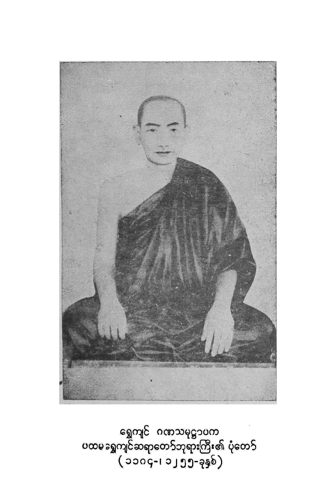
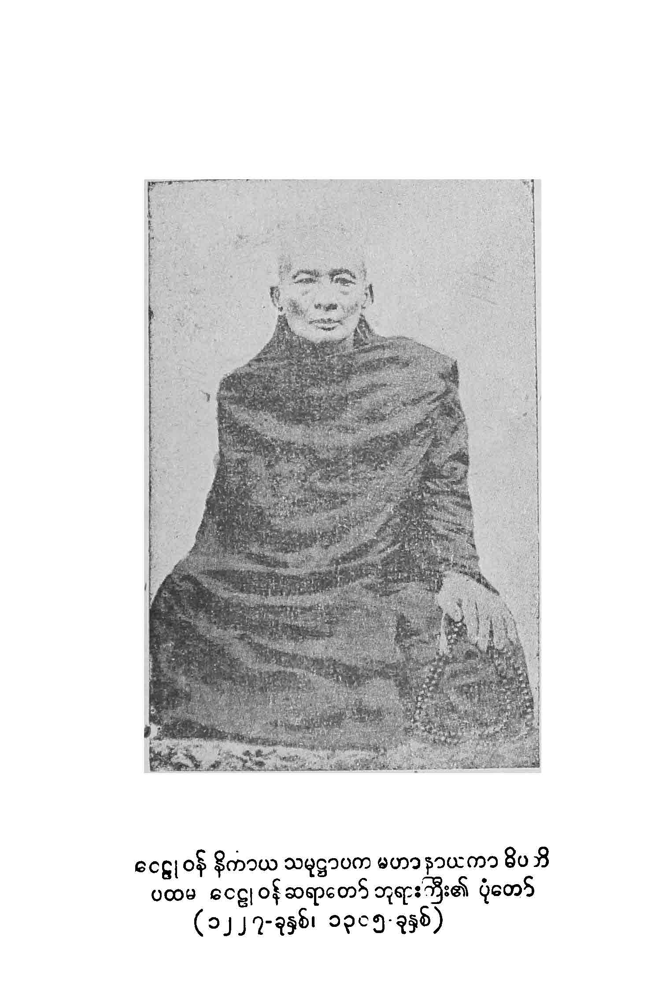
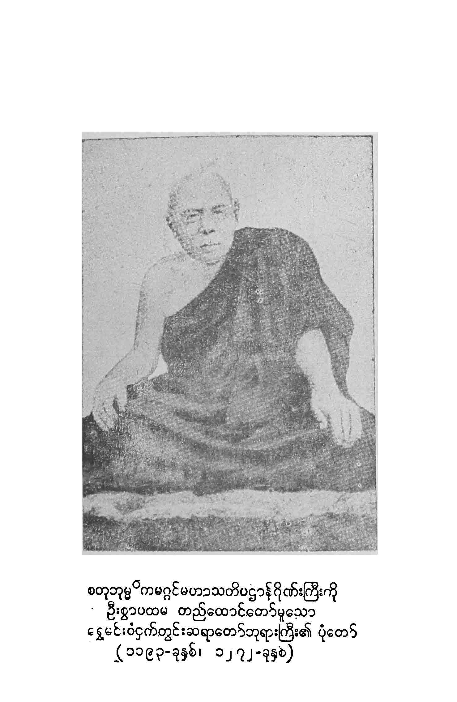
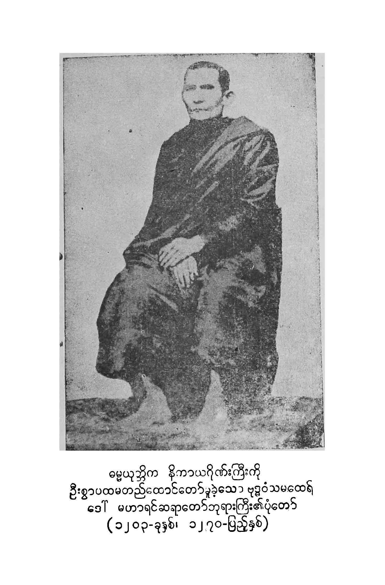
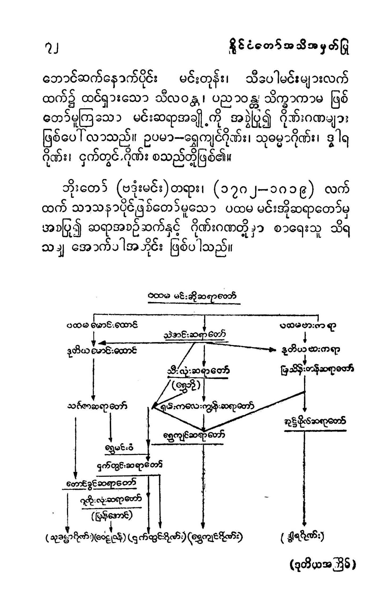

၁။ အမှာစာ
၂။ အဘိဓဇမဟာရဋ္ဌဂုရု စစ်ကိုင်းတောင်ရိုး ရွှေဟင်္သာတိုက်သစ် ဆရာတော်ဘုရားကြီး၏ ဩဝါဒကထာ
၃။ သံဃာအဖွဲ့အစည်း အခြေခံစည်းမျဥ်းမှ ကောက်နုတ်ချက်များ
၄။ သုဓမ္မာဂိုဏ်း
၅။ ရွှေကျင်ဂိုဏ်း
၆။ မဟာဒွါရနိကာယဂိုဏ်း
၇။ ဓမ္မာနုဓမ္မမူလဒွါရနိကာယဂိုဏ်း
၈။ အနောက်ချောင်းဒွါရဂိုဏ်း
၉။ ဝေဠုဝန်နိကာယဂိုဏ်း
၁၀။ စတုဘုမ္မိကမဟာသတိပဋ္ဌာန်ငှက်တွင်းဂိုဏ်း
၁၁။ ဂဏဝိမုတ်ကူးတို့ဂိုဏ်း
၁၂။ ဓမ္မယုတ္တိနိကာယမဟာရင်ဂိုဏ်း
၁၃။ မြန်မာနိုင်ငံသံဃာဂိုဏ်းများ
၁၄။ ဂိုဏ်းဟူသော ဝေါဟာရများ
၁၅။ ဘာသာရေး ဂိုဏ်းဂဏများ
၁၆။ ဗုဒ္ဓဘာသာ သံဃာဂိုဏ်းများ
၁၇။ မြန်မာနိုင်ငံသာသနာ
၁၀။ သမ္မုတိသာသနာပိုင် တောင်ခွင်ဆရာတော်ဘုရားကြီး၏(သုဓမ္မာ)ပုံတော်၊
၂။ ပထမ ရွှေကျင်နိကာယ သာသနာပိုင် ဆရာတော်ဘုရားကြီး၏ပုံတော်၊
၃။ ဒွါရနိကာယအဓိပတိ အုဂ်ဖိုရ်ဆရတော်ဘုရားကြီး၏ ပုံတော်၊
၄။ ဝေဠုဝန် နိကာယ ဂဏသမုဋ္ဌာပက ဆရာတော်ဘုရားကြီး၏ပုံတော်၊
၅။ ပထမ ငှက်တွင်းဆရာတော်ကြီး၏ပုံတော်
၆။ ဂဏဝိမုတ်ကူးတို့ဂိုဏ်း ပထမ ဆရာတော်ဘုရားကြီး၏ပုံတော်၊
ဓမ္မယုတ္တိကာယ မဟာရင်ဂိုဏ်း ပထမ ဆရာတော်ဘုရားကြီး၏ပုံတော်၊
သာသနာတော် သန့်ရှင်းတည်တံ ပြန့်ပွားရေး အတွက် ပထမအကြိမ် ဂိုဏ်းပေါင်းစုံ သံဃာ့ အစည်းအဝေးကြီးကို ၁၃၄၂-ခုနှစ်၊ နယုန်လဆန်း(၁၂) ရက်၊ (၂၅-၅-၈၁) နေ့တွင် စတင် ကျင်းပရန် သံဃာ့ဝန်ဆောင် ဆရာတော်ကြီး (၆၆) ပါး အဖွဲ့ကို ဖွဲ့စည်းစဥ် အခါကပင် "ဂိုဏ်းပေါင်းစုံ" ဟူသော ဝေါဟာရ စကားလုံးကို စိတ်ပါဝင်စား မိခဲ့ပါသည်၊ ထိုစဥ်အခါက မြန်မာနိုင်ငံ၌ သုဓမ္မာ၊ ရွှေကျင်၊ ဒွါရ၊ ငှက်တွင်း ဟူ၍ (၄) ဂိုဏ်း၏ အမည်ကို စာရေးသူ အနေဖြင့် ကြားဖူးနားဝ ရှိခဲ့ရပါသည်။ ဗဟို သံဃာ့ဝန်ဆောင်အဖွဲ့ ဖွဲ့စည်းစဥ် အခါက အခြေခံဒေသအလိုက် (ပြည်နယ် ၇-ပြည်နယ်နှင့် တိုင်း ၇ တိုင်း) ရွေချယ်တင်မြှောက် ခြင်းခံရသော သံဃာ့သမ္မုတိရ ကိုယ်စားလှယ် (သုဓမ္မာ) ဆရာတော် (၅၈)ပါးနှင့် ဂိုဏ်း အနေအားဖြင့် (မဟာဒွါရ-မူလဒွါရနှင့် ရွှေကျင်ဂိုဏ်း) ကိုယ်စားလှယ် ဆရာတော် (၈)ပါး ပေါင်း (၆၆)ပါး ဖြစ်ကြောင်း တွေ့ရပါသည်၊ ထို့နောက် ဗဟို သံဃာ့ဝန်ဆောင် အဖွဲ့ဝင် ဆရာတော် အပါး (၃၀၀) ရွေးချယ်တင်မြှောက်ရာတွင် ပထမဂိုဏ်း (၄) ဂိုဏ်း အပြင် ဂဏဝိမုတ်ကူးတို့ဂိုဏ်း၊ စတုဘုမ္မိက မဟာသတိပဋ္ဌာန်ငှက်တွင်းဂိုဏ်း၊ ဝေဠုဝန်နိကာယဂိုဏ်း၊ ဓမ္မယုတ္တိနိကာယဂိုဏ်း၊ အနောက်ချောင်းဒွါရဂိုဏ်း ဟူ၍ ဂိုဏ်း(၅) ဂိုဏ်း ဖြည့်စွက်ပါရှိလာပါသည်။
"သံဃာအား ဘုရား ယုံခဲ့သည်" စာမှုကို ရေးသားပြုစု ပြီးသည့် အခါ အစိုးရ အသိအမှတ်ပြု ဤသံဃာ့ ဂိုဏ်းကြီး ၉-ဂိုဏ်း အကြောင်းကို ထည့်သွင်းဖော်ပြမှသာလျှင် သာသနာ့ သမိုင်းကြောင်းတွင် ပိုမိုပြည့်စုံပေလိမ့်မည်ဟု စိတ်ကူးပေါက်မိပါသည်။ အခြား အကြောင်း တစ်ရပ်မှာ လူပုဂ္ဂိုလ်များကို မဆိုထားဘိ၊ ရဟန်းတော်အများပင်လျှင် မိမိပါဝင်ထားသော ဂိုဏ်းအကြောင်းကို သေချကျနစွာ မသိကြ၊ အခြား ဂိုဏ်းဂဏများ၏ အကြောင်းကိုလည်း ကြားဖူးနားဝပင် မရှိကြသဖြင့် ဤ သံဃာ့ဂိုဏ်း ၉ ဂိုဏ်း အကြောင်းကို အကျဥ်းမျှ ရေးသားပြုစု၍ သံဃာအား ဘုရားယုံခဲ့သည် စာအုပ်တွင် တစ်ပါတည်း ထည့်သွင်းဖော်ပြရန် စီစဥ်ခဲ့ပါသည်။
ဤ သံဃာဂိုဏ်း ၉-ဂိုဏ်း အကြောင်းကို ရေးသားပြုစုရာ၌ မိမိ၏ အတ္တနောမတိ-အယူအဆများ မပါဝင်စေဘဲ သက်ဆိုင်ရာ ဂိုဏ်းအဖွဲ့များမှ ထင်ရှား၍ ခိုင်လုံသော အထောက်အထား စာအုပ်စာတမ်းများ၊ မဟာဒွါရ၊ မူလဒွါရ၊ အနောက်ချောင်းဒွါရ၊ ဝေဠုဝန်နိကာယ၊ ဂဏဝိမုတ်ကူးတို့ဂိုဏ်းတို့နှင့် မဟာရင်ဂိုဏ်းတို့မှ လက်ရှိအကြီးအကဲ နာယက ဆရာတော်များ ထံမှ ချီးမြှင့် ရရှိသော စာရွက်စာတမ်းများ အပေေါ် မူတည်၍ ရေးသားပြုစုခြင်း ဖြစ်ပါသည်၊ အထူး ဖော်ပြ အစီရင်ခံလိုသည်မှာ ဤသံဃာ့ဂိုဏ်း ၉-ဂိုဏ်းအကြောင်း စာမူကို သက်ဆိုင်ရာဌာနတို့က ဗဟိုသံဃမဟာနာယကအဖွဲ့သို့ နောက်ဆုံးအဆင့် အနေဖြင့် တင်ပြပြီးမှ စာမူပုံနှိပ်ထုတ်တေခွင့်၊ ခွင့်ပြုချက်အမိန့်ကို ရရှိထားခြင်းပင် ဖြစ်ပါသည်။
ကျမ်းမလေးစေရန် တစ်ကြောင်း၊ စာရှုသူများ အချိန်တိုတိုနှင့် သိလွယ်၊ မှတ်လွယ် စေရန် တစ်ကြောင်းတို့ကြောင်းအဓိက အကြောင်းအရာများကိုသာ အကျဥ်းချုံး၍ ရေးသားပြုစု ရခြင်း ဖြစ်ရာ မပြည့်စုံမှု၊ မှားယွင်း ချွတ်ချော်မှုများ ပါရှိပါက သည်းခံ ခွင့်လွတ်တော်မူကြပါရန်(လျှောက်ထား) တောင်းပန်ပါသည်။
ဤစာမူကို ၁၃၄၃ ခု၊တန်ခူးလ သင်္ကြန်ရက် အတွင်း ရေးသားပြီးစီးခြင်း ဖြစ်ရာ ထိုအချိန်ကာလ၏ နောက်ပိုင်းတွင် ဖြစ်ပေါ်လာသော အကြောင်းရပ်များ ရှိခဲ့သော် ကျမ်းပြုသူထံစာဖြင့် အကြောင်းကြားချီမြှင့်တော်မူကြပါရန်ကိုလည်း လေးလေးစားစား မေတ္တာရပ်ခံအပ်ပါသည်။
ဂိုဏ်းဂဏများနှင့် စပ်လျဥ်း၍ အထူး သိမှတ်ဖွယ် ကောင်းသော နိုင်ငံတော် ဩဝါဒါစရိယ ဘဒ္ဒန္တပဏ္ဍိတသိရီ (အဘိဓဇမဟာရဋ္ဌဂုရု) စစ်ကိုင်းတောင်းရိုး၊ ရွှေဟင်္သာ တိုက်သစ် ဆရာကြီး၏ဩဝါဒကထာကို မူရင်းအတိုင်း ပုံနှိပ်၍ ဤစာအုပ်ငယ်တွင် ထည့်သွင်းဖော်ပြထားပါသည်။
ကျေးဇူးတင်ခြင်း။ ။ဤကျမ်း စာစောင် ဖြစ်မြောက်ရေး အတွက် စာဖြင့် လည်းကောင်း၊ ကိုယ်တိုင် ကြွရောက်၍ လည်းကောင်း၊ ဝိုင်းဝန်းကူညီ ချီမြှင့်တော်မူကြသော ဟင်္သာတမြို့လယ်တီကျောင်းတိုက် ဆရာတော် ဦးခမာဝုဓ၊ ကြည့်မြင်တိုင် ဗားကရားတိုက် မင်္ဂလာဇေယျုံကျောင်း ဆရာတော် ဦးဝိဇ္ဇောဒယာဘိဝံသ ပြည်မြို့၊ ကန်တွင်း ဆုတောင်းပြည့် ကျောင်းတိုက် ဆရာတော် ဦးဓမ္မာဘိဝရ၊ဧရာဝတီတိုင်း ရေကြည်မြို့နယ်၊ မြစ်ဆယ်ကျေးရွာအုပ် အင်းလျားကျောင်းဆရာတော် ဦးဓမ္မိဿရ၊ ရန်ကုန်မြို့ စမ်းချောင်း ဝေဠုဝန်ကျောင်းတိုက် ဆရာတော် ဦးသုန္ဒာရာဘိဝံသ၊ ထားဝယ်မြို့ ဇေယျဝတီကျောင်းတိုက်၊ ဓမ္မာရုံကျောင်း ဆရာတော် ဦးဝီရိယ၊ ရန်ကုန်မြို့ ဗဟန်း ကျိုက်သီမွန် ပါဠိတက္ကသိုလ်ကျောင်းတိုက် ဆရာတော်ဦးတိဿ တို့အား လည်းကောင်း၊ အကြံပေးကူညီ ညွန်ပြတော်မူကြသော မန္တလေးမြို့ မဟာဝိသုဒ္ဓါရုံတိုက်သစ်ဝါဆိုကျောင်း ဆရာတော ဦးအဂ္ဃိယ၊ ရန်ကုန်မြို့ ပုဇွန်တောင် ရွှေကျင်ကျောင်းတိုက် (သပြေကန်) ဆရာတော် ဦးဝါသေဋ္ဌ၊ သန်လန်မြို့ မင်းကျောင်း ပထမပြန် စာသင်တိုက် ဆရာတော် ဦးဝဏ္ဏသိရီ တို့အား လည်းကောင်း ကျေးဇူးတင် ဦးခိုက်ပါ၏။
ဤစာအုပ်ငယ်တွင်" သံဃာအား ဘုရားယုံခဲ့သည်" စာအုပ်၏နောက်ဆက်တွဲဖြစ်ပါသည်။ သံဃာ၏ အင်အားကို ယုံခဲ့သည် ဟူသော မူလစာအုပ်၏ အနက် အဓိပ္ပာယ်အရ၊ ဆရာတော် သံဃာတော်များ၏ တစ်စည်းတစ်လုံးတည်း ညီညွန်မှု အင်အားဖြင့် ဗုဒ္ဓမြတ်စွာ၏ သာသနာတော်ကြီး သန့်ရှင်း တည့်တံ့ပြန့်ပွားရေးကို ကြိုးပမ်း ဆောင်ရွက်တော်မှုနိုင်ကြပါစေသတည်း။
ဓမ္မဃောသက-ဦးမောင်မောင် (ကျမ်းပြုသူ) ၃၂-မဟာသုခလမ်း၊ ကျီတော်ရပ်အထက် ပုဇွန်တောင် မင်္ဂလာတောင်ညွန့်မြို့နယ် ရန်ကုန်မြို့ ။ ၁၃၄၃၊ တော်သလင်းလဆန်း ၅ရက်
ဒုတိယအကြိမ် ပုံနှိပ်ခြင်း
၁၃၄၂ခုနှစ်၊နယုန်လဆန်း(၁၂) ရက်နေ့တွင် စတင်ကျင်းပသောပထမအကြိမ်ဂိုဏ်းပေါင်းစုံသံဃာအစည်းအဝေးပွဲကြီးကိုအကြောင်းပြု၍ "သံဃာအား ဘုရားယုံခဲ့သည်"စာအုပ်ကို ၁၉၈၁ ခုနှစ် ဇွန်လတွင် ပထမအကြိမ်၊၁၉၈၄ ခုအောက်တိုဘာလတွင်ဒုတိယ အကြိမ် ပုံနှိပ်ထုတ်ဝေခဲ့ပါသည်။ ထိုစာအုပ်၏ နောက်ဆက်တွဲ အနေဖြင့် နိုင်ငံတော် အစိုးရ အသိအမှတ်ပြု လက်ရှိ သံဃာဂိုဏ်းကြီး (၉) ဂိုဏ်း အကြောင်းကိုလည်း သီးခြားစာအုပ် ပြုလုပ်၍ ၁၉၈၁ခု နိုဝင်ဘာလတွင် ပုံနှိပ်ထုတ်ဝေခဲ့ပါသည်။ ဤ သံဃာဂိုဏ်းကြီး (၉) ဂိုဏ်း အကြောင်းစာအုပ်ကို ဒုတိယအကြိမ် ပုံနှိပ်ထုပ်ဝေရန် ဖြစ်သော်လည်း အကြောင်းမညီညွတ်ခဲ့ပါ။
သာမန်လူ ပုဂ္ဂိုလ်များ မဆိုထားဘိ၊ ရဟန်းတော်များပင်လျှင် ဤသံဃာ့ဂိုဏ်း (၉) ဂိုဏ်း၏ ဖြစ်စဥ် အကြောင်း အရာတို့ကို ခရေစေ့တွင်းကျ လေ့လာသိရှိသူ နည်းပါးသဖြင့် ထပ်မံ ပုံနှိပ်ထုတ်ဝေရန် ရှင်လူ ပရိသတ်တို့က တောင်းဆိုထားသည်မှာ အချိန်ကာလ ကြာညောင်းခဲ့ပြီဖြစ်လျက် ယခု ရှင်လူ အများ၏ ဆန္ဒပြု တောင်းဆိုချက်များကို လေးစားသောအားဖြင့် ဒုတိယအကြိမ် ပုံနှိပ်ထုတ်ဝေခြင်း ပြုလိုက်ရပါသည်။ ဤဒုတိယအကြိမ် ထုတ်ဝေခြင်းရာတွင် သာသနာရေးတွင် စိတ်ပါဝင်စားသော သာသနာ့ မာမက ပုဂ္ဂိုလ်များအတွက် ဘာသာရေးဆိုင်ရာ ဂိုဏ်းဂဏများနှင့် စပ်လျဥ်း၍ ဗဟုသုတ ဖြစ်ဖွယ် အကြောင်းအရာများကိုသာ ဖြည့်စွက်ထည့်သွင်း ဖော်ပြလိုက်ရပါသတည်း။
ဓမ္မဃောသက-ဦးမောင်မောင်
ပြည်ထောင်စုမြန်မာနိုင်ငံတော် ပထမကြိမ် နိုင်ငံတော်သံဃနာယကအဖွဲ့ တတိယအစည်းအဝေး၌ နိုင်ငံတော် ဩဝါဒါစရိယ ဘဒ္ဒန္တပဏ္ဍိတသိရီ (အဘိဓဇမဟာရဋ္ဌဂုရု) စစ်ကိုင်းတောင်ရိုး ရွှေဟင်္သာတိုက်သစ် ဆရာတော်ဘုရားကြီး၏ဩဝါဒကထာ
ဤယနေ့ နိုင်ငံတော် ဩဝါဒါစရိယ ဆရာတော်ကြီးများနှင့်တကွ တကယ်တန်း သာသနာကို ဆောင်ရွက်ပြီး ဆောင်ရွက်လတ္တံ့ ဖြစ်တော်မူကြသော နိုင်ငံတော် သံဃမဟာနာယက ဆရာတော်များကို လည်းကောင်း၊ နိုင်ငံတော် သာသနာရေး ဒုတိယဝန်ကြီးနှင့် တကွ နိုင်ငံတော် သာသနာရေးဦးစီးဌာန ညွန်ကြားရေးမှူးချုပ် အစရှိသော ဒါယကာများကိုလည်းကောင်း၊ အစုံအညီ တွေ့ဆုံကြရသဖြင့် အားရှိ ဝမ်းမြောက်မိပါသည်။
ဩဝါဒ စကားကို မပြောကြားမီ၊ ရှေးဦးစွာ သုဓမ္မာဂိုဏ်း၊ ရွှေကျင်ဂိုဏ်း၊ ဒွါရဂိုဏ်း အစရှိသော မျက်မှောက်ခောတ် မြန်မာနိုင်ငံ သာသနာ နယ်ပယ်၌ ဂိုဏ်းအသီးသီး အကြောင်းကို ရှေးဦးစွာ ပြောကြားလိုပါသည်။
ဒုတိယ သင်္ဂါယနာတင်ပြီးသော အချိန်မှစ၍ မြတ်စွာဘုရား သာသနာတော်၌ ဂိုဏ်းအမျိုးမျိုးကွဲပြား လာကြသည်ကို ဆရာတော်များ သိရှိတော် မူကြပြီး ဖြစ်ပါသည်။ ထို အချိန်အခါက ဂိုဏ်း ကွဲပြားခဲ့သည်မှာ တစ်ဂိုဏ်းနှင့်တစ်ဂိုဏ်း ဝိနည်းပဋိကသာ ကွဲကြသည် မဟုတ်မူ၍ ၊ သုတ္တန် အဘိဓမ္မာ တိုင်အောင် ထူးခြားစွာ ကွဲပြားခဲ့ကြပါသည်။ ယနေ့တိုင်အောင်ပင် မဟာယာဂိုဏ်းနှင့် ထေရဝါဒဂိုဏ်းတို့သည် အဝတ်အရုံ အစားအသောက်မှ စ၍ တစ်ဂိုဏ်းနှင့်တစ်ဂိုဏ်း ဆက်စပ်၍ မဖြစ်အောင် ကွဲပြားလျက်ရှိကြပါသည်။
ယနေ့ မြန်မာနိုင်ငံ သာသနာနယ်ပယ်၌ သုဓမ္မာ ရွှေကျင် ဒွါဒ စသည်ဖြင့် ဂိုဏ်းကွဲပြားသည်ဟု ဆိုရသည်မှာကား အမှန်စင်စစ် ကွဲပြားသည်ဟုပင် ပြောသင့်သည် မဟုတ်ပါ။ ပြောဆိုရမည် မဟုတ်ပါ၊ မြန်မာပြည်၌ ဗုဒ္ဓသာသနာတော်နှင့် စပ်၍ ဝါဒကွဲပြားသော ဂိုဏ်းကွဲဟူ၍ မရှိဟု ရဲရဲပြောနိုင်ပါသည်။ ပြောနိုင်သော အကြောင်းမှာ...
၁။ သုဓမ္မာ ဟူသော အမည်နာမ ပညတ်သည် သက်ဦးဆံပိုင် မြန်မာမင်းများ လက်ထက်၌ သာသနာရေးနှင့် သံဃာ့အရေးနှင့် စပ်လျဥ်းသော အမှုအခင်း များကို ရှင်လင်းဆုံးဖြတ််တော်မူကြရန် သင်လျော်သော ဆရာတော် (၈)ပါးကို ရွေးချယ်၍ သုဓမ္မာဇရပ်၌၊ တစ်နည်း သံဃာ့တရားရုံး၌ စည်းဝေးရုံးထိုင်တော် မူကြ၍၊ သာသနာကိစ္စ သံဃကိစ္စတို့ကို ဝိနည်းကံနှင် အညီ ဆုံးဖြတ်စီရင်တော်မူကြရသည်။ သုဓမ္မာ အဖွဲ့ဝင် ထိုဆရာတော်များကို သုဓမ္မာ ဆရာတော်များဟူ၍ ခေါ်ဝေါ် ပညတ်ကြလေသည်။ ထို သုဓမ္မာ ဆရာတော် အဆက်ဆက်တို့၏ တပည့် သားမြေး သံဃာတော် အဆက်ဆက်တို့လည်း သုဓမ္မာ သံဃာဟူ၍ ခေါ်ဝေါ် ပြောဆိုကြပါသည်။ တမင်တလာ သုဓမ္မာ သံဃာအဖွဲ့ ဟူ၍ လည်းကောင်း၊ သုဓမ္မာဂိုဏ်းဟူ၍ လည်းကောင်း၊ ဖွဲ့စည်းခဲ့ကြသည် မဟုတ်ပါ၊ သုဓမ္မာသံဃာ-သုဓမ္မာဂိုဏ်း သံဃာတော်များ လက်ခံပို့ချသင်ကြားလေ့လာဆောင်ရွက်တော်မူကြသော ပိဋကတ်တော်များသည် လက်ရှိ ပဥ္စမ သင်္ဂါယနာနှင့် ဆဋ္ဌသင်္ဂါယနာမူ ဖြစ်သော ပိဋကတော်များသာ ဖြစ်ကြပါသည်။
ရွှေကျင်ဂိုဏ်းဟူသည် ရွှေဘိုတောင်ဘက် ဝက်လက်မြို့နယ် လှတော ငါးရွာအဝင် ရွှေကျင်ရွာ၌ ဖွားမြင်တော်မူသော ဆရာတော်ဖြစ်၍ ရွာကို အစွဲပြုပြီး ရွှေကျင်ဆရာတော်ဟူ၍ ခေါ်ဝေါ် ပညတ်ကြပါသည်။ ထို ရွှေကျင်ဆရာတော်၏ တပည့် သားမြေး များကို ရွှေကျင်ဟူ၍ ခေါ်ဝေါ်ကြပါသည်။ နောက်ကာလ ရောက်မှ အစုအဝေး များလာသဖြင့် ဂိုဏ်းအမည်တပ်ပြီး ရွှေကျင်ဂိုဏ်းဟု ပညတ် ခေါ်ဝေါ် ကြပါသည်။ ရွှေကျင်ဆရာတော်ကြီးမှ အစပြု၍ ယနေ့တိုင် ထင်ရှားရှိကြသော ရွှေကျင်သံဃာများသည်လည်း ပဥ္စမ သင်္ဂါယနာတင် ပိဋကတော်များကိုပင် လက်ခံပို့ချ သင်ကြားဆောင်ရွက်လျက် ရှိကြပါသည်။ ဒွါရဂိုဏ်းမှာလည်း နည်းတူပင် ဖြစ်ပါသည်။ ယနေ့ ထင်ရှားရှိပြီး နိုင်ငံတော်က လက်ခံထားသော ဂိုဏ်းဝင် သံဃာများ လက်ခံကျင့်သုံး ဆောင်ရွက်နေသော ပိဋကတ်တော် မှာလည်း သုဓမ္မာ၊ ရွှေကျင်၊ ဒွါဒ သံဃာများကဲ့သို့ပင် လက်ရှိ ပိဋကတ်တော်များပင် ဖြစ်ပါသည်။
၁။ သုဓမ္မာ သံဃာကလည်း သည်ဝိနည်း။ ၂။ ရွှေကျင်သံဃာများသည်လည်း သည်ဝိနည်း။ ဒွါရသံဃာ စသည်တို့လည်းသည် ဝိနည်း၊ သုတ္တန် အဘိဓမ္မာ သည်လည်း မကွဲမပြား အတူပင် ဖြစ်ကြသည်။ အကွဲအပြား မရှိကြပါ။ သိုဖြစ်၍ ပြောလိုသည်မှာ ဆရာသမားတို့၏ အမည်နာမ ပညတ်ကို အစွဲပြု၍ သုဓမ္မာဂိုဏ်း၊ ရွှေကျင်ဂိုဏ်း၊ ဒွါရဂိုဏ်းဟု ခေါ်ဆိုကြရသော်လည်း အမှန်စင်စစ် ကွဲပြားကြသည် မဟုတ်ကြောင်းကို ပြောလိုပါသည်။ သို့ကြောင့်လည်းး သဘော မပေါက်မီ သူ့ဂိုဏ်း ငါ့ဂိုဏ်းဟု စွဲလမ်းထင်မြင် ယူဆခဲ့ကြစေကာမူ၊ ယခုလက်တွေ့ ပူးပေါင်းဆောင်ရွက် လာကြသော အခါဂိုဏ်းကွဲ မရှိကြောင်း၊ အယူအဆ မကွဲပြားကြောင်းကို လက်ငင်း မျက်မြင်တွေ့ရှိတော်မူကြပြီးဖြစ်၍ ပညတ် အခေါ်ဝေါ်သာ ရှိ၍ စင်စစ် အမှန်တကယ် အကွဲအပြားမရှိသော ဂိုဏ်းပေါင်းစုံ သံဃားများသည် စည်းလုံးသည်ထက် စည်းလုံး ညီညွတ်လျက် မြတ်စွာဘုရား၏ သာသနာတော်ကြီးကို ဂိုဏ်းပေါင်းစုံ အားအပြည်ဖြင့် ဆောင်ရွက်တော်မူနိုင်ကြပါစေ ဟူ၍ ပတ္ထနာပြုကာ နိဂုံးချုပ်လိုက်ပါသတည်း။
ရွှေဟင်္သာဆရာတော် စစ်ကိုင်းတောင်ရိုး
ပြည်ထောင်စုမြန်မာနိုင်ငံတော် သံဃာ့ အဖွဲ့အစည်း အခြေခံ စည်းမျဥ်း၏ အခန်း(၁)အမည် နှင့် အဓိပ္ပာယ် ဖော်ပြချက် အပိုဒ်(၂) ဃတွင်...
ဂိုဏ်း ဆိုသည်မှာ ၁၃၄၁ ခုနှစ် တပို့တွဲလပြည်ကျော် (၁) ရက် (၁၉၈၀-ပြည့်နှစ်၊ ဖေဖော်ဝါရီလ၊ ၁ရက်) သောကြာနေ့ကို နောက်ဆုံးထား၍ သာသနာရေး ဦးစီးဌာန၌ စာရင်းဝင်သော နောက်ဆက်တွဲ (က)တွင် ဖော်ပြထားသည့် သံဃာဂိုဏ်းများကို ဆိုသည်။ ဟူ၍ လည်းကောင်း
အခြေခံ စည်းမျဥ်း (အခန်း ၂) အပိုဒ် ၇ တွင်.. "ပြန်ထောင်စု မြန်မာနိုင်ငံတော် သံဃာ့ အဖွဲ့အစည်းအတွင်း၌ ၁၃၄၁ ခုနှစ်၊တပို့တွဲလပြည်ကျော် ၁ရက်နေ့၊ ၁၉၀၈၀ ပြည့်နှစ် ဖေဖော်ဝါရီလ ၁ရက်၊ သောကြာနေ့ မတိုင်မီ ပြည်ထဲရေးနှင့် သာသနာရေးဝင်ပြီးသော သံဃာ့ဂိုဏ်း အသီးသီးကိုဆက်လက်တည်ရှိခွင့်ပြုသည်" ဟူ၍လည်းကောင်း။
အခြေခံစည်းမျဥ်း နောက်ဆက်တွဲ(က)တွင်.. ၁၃၄၁ ခုနှစ် တပို့တွဲလပြည်ကျော် ၁ရက်၊ ၁၉၈၀-ပြည့်နှစ်၊ ဖေဖော်ဝါရီလ ၁ရက်၊ သောကြာနေ့ကို နောက်ဆုံးထား၍ သာသနာရေး ဦးစီးဌာန၌ စာရင်းဝင်သော သံဃာ့ ဂိုဏ်းများစာရင်း။
အထက်ပါ ဖော်ပြပါအတိုင်း စာရင်းဝင် သံဃာဂိုဏ်း ၉-ဂိုဏ်းတို့၏ အကြောင်းအရာတို့ကို ရှင်လူအများတို့ ဗဟုသုတ အဖြစ်ဖြင့် သိမှတ်ထားနိုင်ကြစေခြင်းငှာ အကျဥ်း ချုံး၍ ဖော်ပြပါသည်။
၁။ သုဓမ္မာဂိုဏ်း။ ။သက္ကရာဇ် ၁၂၁၄-ခုနှစ်၊ ပဥ္စမ သင်္ဂါယနာတင် မင်းတုန်းမင်း နန်းတက်လာသော အခါ ဒုတိယ မောင်းထောင်းဆရာတော် အရှင်ဥေယျဓမ္မကို သာသနာပိုင် တင်မြှောက်လေသည်။ ထိုအခါ သာသနာပိုင် အမှုးရှိသော သုဓမ္မာ ဆရာတော် ရှစ်ပါးတို့သည် ရွှေကျင်ဆရာတော် အရှင်ဇာဂရကို သုဓမ္မာသို့လာရန် ဆင့်ခေါ်သည်ကို မင်းတုန်းမင်းတရားကြီး သိတော်မူလျှင် သုဓမ္မာဆရာတော်များနှင့် ရွှေကျင်ဆရာတော်ကို ကျေနပ်အင် လျှောက်ထားပြီးသော်၊ ရွှေကျင် ဆရာတော်ကို နောက်အခါ သုဓမ္မာက ဆင့်ခေါ်ခြင်းမပြုနိုင်အောင် ဂဏဝိမုတ် အမိန့်ထုတ်တော် မူသည်။ ထိုအခါမှစ၍ ရွှေကျင်ဆရာတော်လည်း ရွှေကျင်ဂိုဏ်း မဟာဓမ္မိကာရာမတိုက်၊ ထရံကာတိုက်၊ရမည်းသင်းတိုက်၊ မင်းခင်းတိုက်၊ မြတောင်တိုက်၊ ဤရွှေကျင်ငါးတိုက်ကို ဦးစီးဦးကိုင်ပြုကာ သုဓမ္မာ ဆရာတော်များနှင့် မဆက်သွယ်ဘဲ ဝိနည်းကံ သီးခြား ပြု၍နေသည်။ ထိုအခါမှစ၍ သုဓမ္မာဂိုဏ်း၊ ရွှေကျင်ဂိုဏ်းဟု သာသနာတော်၌ ဂိုဏ်းကြီးနှစ်ဂိုဏ်းကွဲသည်။
သုဓမ္မာဆိုတာ မူလက ဂိုဏ်းတစ်ခု မဟုတ်၊ အဆောက်အအုံ တစ်ခု၏ အမည်၊ ဇရပ်၊ သုဓမ္မာဇရပ်၊ သာမညတော့မဟုတ်၊ ဘုရင်က ဆောက်လုပ် ထားပြီး သာသနာတော် အတွက် အရေးကြီးသော ဌာနတစ်ခု၊ အဆောက်အအုံ တစ်ခုဖြစ်သည်။ အင်းဝခောတ် အနောက်ဖက်လွန်မင်းတရား လက်ထက် (သက္ကရာဇ် ၉၇၄) မှာ မဟာမုနိ သုဓမ္မာဇရပ်၌ ပိဋကသုံးပုံ၊ ပါဠိ၊ အဋ္ဌကထာတို့ကို ဆရာတော်ကြိီးများက ကြီးကြပ်ရေးသည်။ အချို့မင်းများ လက်ထက် စာတော်ပြန် ပွဲများ ကျင်းပ ပြုလုပ်သည်။ သာသနာရေး ကိစ္စများ ဆွေးနွေးဆုံးဖြတ်ရာ ဌာန ၊ ကုန်းဘောင်ခောတ်တွင် ပိုပြီး တွင်ကျယ်လာသည်။ ရတနာပုံခောတ် မင်းတုန်း၊ သီပေါ လက်ထက်ကျတော့ ဌာနကိုစွဲပြီး ဌာနီဖြစ်တဲ့ ဆရာတော်ကြီးများ ကိုပါ သုဓမ္မာ ဆရာတော်များဟူ၍ ခေါ်တွင်လာသည်။
သုဓမ္မာဇရပ်တွင် စာတော်ပြန်ပွဲများ ကိစ္စလောက်သာ မဟုတ်တော့ဘဲ သာသနာရေး မှုခင်းများကိုပါ သက်ဆိုင်ရာ ဆရာတော်များက သုဓမ္မာဇရပ်မှာ စုရုံးစည်းဝေးပြီး ဆုံးဖြတ်ကြသည်။ ဝိနိစ္ဆယ (သာသနာတော် မှုခင်းဆိုင်ရာ) တရားရုံးကြီး ဖြစ်လာသည်။ သုဓမ္မာသို့ တက်ရောက် တာဝန်ယူကြရတဲ့ ဆရာတော်များကို သုဓမ္မာ ဆရာတော်များဟူ၍ ခေါ်ဝေါ်သိမှတ်လာကြသည်။ သာသနာပြု အဖွဲ့ဝင် ဆရာတော်များဟု ခေါ်ဝေါ်သိမှတ်ကြသည်။
(ရဟန်းသား၏ မြတ်သောရဟန်းစာအုပ်မှ ကောက်နုတ်ချက်)
(၁၂၀၆-၁၂၉၉ခု)
၁၂၄၆-ခုနှစ်တွင် ဝိသုဒ္ဓါ သီလာစာရက ဝိဇေမဟာဓမ္မရာဇာဓိ ရာဇဂုရု ဘွဲ့တံဆိပ်တော်ကိုလည်းကောင်း၊ ၁၂၄၇-ခုနှစ်တွင်၊ ဝိသုဒ္ဓသီလာစာရဓဇသီရိပဝရမဟာဓမ္မ ရာဇာဓိရာဇဂုရု ဘွဲ့တံဆိပ်တော်ကိုလည်းကောင်း၊ သီပေါမင်းက ဆက်ကပ်လှူဒါန်းသည်။ သီပေါမင်း ပါတော်မူပြီးသည့် နောက်-အင်္ဂလိပ်အစိုးရလက်ထက် ၁၂၆၅-ခုနှစ်တွင် သတ္တမမြောက် အက်ဒွပ်ဘုရင်၏ ကိုယ်စား အိန္ဒိယ ဘုရင်ခံချုပ် ဆာနဒ်(sanas)အမိန့်တော်နှင့် တကွ, ဝိသုဒ္ဓသီလာစာရဓဇသီရိပဝရမဟာဓမ္မသေနာပတိ မဟာသံဃာ့ရာဇာ ဘွဲ့တံဆိပ်တော်ကို ဆက်ကပ် လှူဒါန်းသဖြင့် သံဃိဿရ သံဃဦီးကိုင် သာသနာပိုင် အဖြစ်သို့ ရောက်တော်မူသည်။
သီပေါမင်းလက်ထက် သာသနာမှုတို့ကို စီမံ အုပ်ချုပ်ရန် ဘွဲ့တံဆိပ်တော်ရ ဆရာတော် တစ်ကျိပ်နှစ်ပါး ပါဝင်သော သုဓမ္မာ အဖွဲ့ကို ဖွဲ့စီးပြီးနောက် ၁၂၄၄-ခုနှစ်တွင်-တောင်တော် ဆရာတော် အား သာသနာပြု သာသနာပိုင် အဖြစ် အပ်နှင်းသည်။ သီပေါမင်းပါတော်မူပြီးနောက် ၁၂၅၆-ခုနှစ်တွင် သာသနာပိုင် ဆရာတော် ပျံလွန်တော်မူသည်။ သုဓမ္မာအဖွဲ့ဝင် တစ်ကျိပ် နှစ်ပါး ဆရာတော်တို့က မိုးကောင်းဆရာတော် အရှင်နာဂိန္ဒ ကိုလည်းကောင်း၊ ၁၂၅၇ ခုနှစ်တွင် လေးပြင်လေးရပ်ရှိ ဆရာတော် သံဃာတော်များနှင့် ကင်းဝန်မင်းကြီး အမှူးရှိသော ဒါယကာတို့က ပခန်း ဆရာတော်ကို လည်းကောင်း၊ သမ္မုတိသာသနာပိုင်အဖြစ် တင်မြှောက်ကြသည်။ ထို ဆရာတော်နှစ်ပါးစလုံးကိုပင် အင်္ဂလိပ် အစိုးရက အသိမှတ်မပြုဘဲ ထားခဲ့သည်၊ လစ်လပ်နေသော သာသပိုင် နေရာအတွက် ၁၂၆၃-ခုနှစ်တွင် ဆန္ဒမဲပေး၍ ရွေးချယ်ကြရာ (၁)မိုးတားဆရာတော်က ပထမ (၂) တောင်ခွင်ဆရာတော်က ဒုတိယ (၃) ဒုတ်လှမ်းဆရာတော်က တတိယ ရရှိတော်မူကြသည်။
သာသနာပိုင် ဆရာတော်အဖြစ် အသိအမှတ်ပြုရန် စီစဥ်နေဆဲမှာပင် မိုးတားဆရာတော် ပျံလွန်တော်မူသဖြင့် ဒုတိယ ဆန္ဒမဲအများဆုံး ရရှိသည့် တောင်ခွင်ဆရာတော်အား အင်္ဂလိပ်အစိုးရက မဟာသံဃာ့ရာဇာ သာသနာပိုင်အဖြစ်ဖြင့် သိမှတ်အပ်နှင်းသည်၊ သီပေါမင်းပါတော်မူပြီးသည့်နောက် သာသနာပိုင် ဘွဲ့ တံဆိပ်တော်ကို ဆက်ကပ်အပ်နှင်းခြင်း ခံရသော ဆရာတော်ကြီးဖြစ်သည်။
၁၂၉၉-ခုနှစ်တွင် တောင်ခွင်ဆရာတော် ဘုရားကြီး (သက်တော်-၉၄၊ သိက္ခာတော်-၇၅) ပျံလွန်တော် မူပြီးသည့်နောက် သုဓမ္မာ ဂိုဏ်း၌ သာသနာပိုင် တင်မြှောက်ခြင်း မရှိတော့ပေ၊ ဂိုဏ်း အကြီးအမှုး မဟာနာယက ဆရာတော် အမှုတို့ကို စီရင်ဆုံးဖြတ်တော်မူကြသည်။
(မြန်မာ့စွယ်စုံကျမ်း အတွဲ ၁၃-ကို ကိုးကားသည်။)
မှတ်ချက်။ ။ သုဓမ္မာ သဘင်တွင် ပါဝင်သော သုဓမ္မာသာသနာပြု ဆရာတော်ကြီး ၈-ပါးတို့မှာ (၁) မောင်းထောင်းဆရာတော်၊ (၂) ပြည်ဆရာတော်၊ (၃)မတ္တရာ ဆရာတော်၊ (၄)သက်ပန်းဆရာတော်၊ (၅) စလင်းဆရာတော်၊ (၆) စံကျောင်းဆရာတော်၊ (၇)သင်္ဂဇာဆရာတော်တို့ ဖြစ်ကြ၏။ သာသနာတော် ဆိုင်ရာ မှုခင်း ကိစ္စများကို ဆင့်ခေါ်ဆုံးဖြတ်ရာ၌ သာသနာပိုင် မောင်းထောင်းဆရာတော် ဦးဥေယျက ဥက္ကဋ္ဌ အဖြစ် ဆောင်ရွက်၍ လှတွေ ဆရာတော်က သုဓမ္မာအဖွဲ့၏ အတွင်းရေးမှူး အကျိူးဆောင် အဖြစ်ဖြင့် ဆောင်ရွက်တော် မူကြကြောင်း မှတ်တမ်းအချို့တွင် တွေ့ရဘူးပါသည်။
(စာရေးသူ)
၂။ ရွှေကျင်ဂိုဏ်း။ ။ မင်းတုန်းမင်း ကြီးသည် မင်းအဖြစ်သို့ ရောက်သောအခါ ဗုဒ္ဓ သာသနာတော်ကို ပြုစုရန် အတွက် သီးလုံးဆရာတော်ကို နေပြည်တော်သို့ ပင့်ရာတွင် ကြွလာတော် မမူသောကြောင့် ရွှေဘိုနယ်၌ စာချကာ သာသနာ ပြုလျက် ရှိသော ရွှေကျင်ဆရာတော်ကို ပင့်ရသည်။ ရွှေကျင်ဆရာတော် ကြွလာတော်မူသောအခါ ပြဆိုခဲ့သည့်အတိုင်း ရွှေကျင် ငါးတိုက်ကို တည်ထောင် လှူဒါန်းလေသည်။ ထိုတိုက်မှာ မူလ မှည့်ခေါ်ရင်းအမည်ဖြင့် မဟာဓမ္မိကာရာမ ဟူ၍ တွင်ရာမည့် အစား ထိုတိုက်၌ သီတင်းသုံးတော်မူသည့် ဆရာတော်ကို အစွဲပြု၍ ရွှေကျင်ဂိုဏ်း ဟူ၍သာ တွင်ခဲ့လေသည်။
သာသနာရေးဆိုင်ရာ အရပ်ရပ် မှတ်တမ်းများအရ ဖော်ပြရလျှင် အချုပ်အားဖြင့် မင်းတုန်းမင်းကြီး လက်ထက်တွင် မန္တလေးတောင်ခြေ၌ သီတင်းနေ့တိုင်း သာသနာပြု ဆရာတော် ရှစ်ပါး ကြွရောက် စည်းဝေးတော်မူကြကာ သာသနာရေးကို တိုင်ပင်စီရင်တော်မူကြသည့် သုဓမ္မာသဘင် ဇရပ်တစ်ဆောင်ရှိလေသည်။ သံဃာတော်များ ဆိုင်ရာ အမှုအခင်းရှိလျှင် ထို သုဓမ္မာသဘင်က ဆင့်ခေါ် စီရင်ကြမြဲ ဖြစ်၏၊ သုဓမ္မာသဘင်၏ အကြီးအမှူး ဥက္ကဋ္ဌမှာ သာသနာပိုင် ဆရာတော် ဦးဥေယျဖြစ်၍ မဟာဒါန်ဝန်မှာ ဦးဘေဖြစ်လေသည်။
တစ်နေ့တ၌ သုဓမ္မာငင် ဆရာတော်တို့၏ အမိန့်နှင့် ရွှေကျင်ဆရာတော်ကို သုဓမ္မာသို့ ကြွရန် ဆင့်ဆိုလိုက်ရာ ရွှေကျင်ဆရာတော် မကြွဘဲနေ၏။ ထိုတွင် ဆင့်ဆိုချက်တွေ ဆင့်ကာ ဆင့်ကာ လာလေသည်။ လာသော်လည်း မသွားဘဲ နေဖန်များသောကြောင့် သုဓမ္မာ ဆရာတော်တို့က မင်းလုလင် ကျောင်းကျွန်များနှင့် ရွှေကျင်ဆရာတော်တို့ကို အတင်းဆွဲခေါ်ရန် တိုင်ပင် နှီးနှောကာ နေ့ရက် ချိန်းထားကြသော ဟူ၏။
ထိုအခါ ရွှေကျင်ဆရာတော် အပေါ်၌ မေတ္တာသက်ဝင် လျက်ရှိသော သုဓမ္မာဝင် ဆရာတော်အချို့က ခေတ္တ အခြားသို့ ရှောင်နေရန် အကြံပေးသောကြောင့် အင်္ဂလိပ်ပိုင်နက်ဖြစ်သော အောက်မြို့ အောက်ရွာသို့ ကြွတော်မူရန် ပြင်ဆင်တော့သည်။ မင်းတုန်းမင်းကြီး သိလျှင် ရွှေကျင်ဆရာတော်အား မကြွရန်တားပြီးနောက် ဂဏဝိမုတ် (ဂိုဏ်းမှ အလွတ်ပုဂ္ဂိုလ်)ဟု အမိန့်တော်ထုတ်လေသည်ဆို၏။ ထိုအချိန်မှ စ၍ ရွှေကျင်ဆရာတော်နှင့် သဘောတူညီကြသော သံဃာစုကို ရွှေကျင်ဂိုဏ်းဟု ခေါ်ပြီးလျှင် သုဓမ္မာသဘင်မှ အုပ်ချုပ်သော သံဃာစုကို သုဓမ္မာဂိုဏ်းဟု ခေါ်ကာ ရွှေကျင် သုဓမ္မာ ဟူ၍ ထင်ထင်ရှားရှား ဂိုဏ်းကွဲခဲ့ရသည်။
(ဝဏ္ဏကျော်ထင် ဦးဘသန်း၏ ရွှေကျင်သာသနာနှစ်တစ်ရာ စာအုပ်မှ ကောက်နုတ်ဖော်ပြသည်)
ရွှေကျင်ဆရာတော် ဘုရားသည် သက္ကရာဇ် ၁၁၈၄-ခုနှစ် ဝါဆိုလဆန်း ၁၃-ရက်၊ အင်္ဂါနေ့ ရွှေဘိုတောင်ဘက် ရွှေကျင်ရွာ၌ ဖွားမြင်တော်မူသည်။ ငယ်မည် မောင်သန့် ဖြစ်သည်။ ခမည်းတော် ဦးမောင်၊ မယ်တော် ဒေါ်မိတို့ ဖြစ်သည်။ အသက် ၇-နှစ် အရွယ် ရွှေကျင်ဆရာတော် ဦးဝရဗုဒ္ဓိ ထံ၌ပင် ရှင်သာမဏေဖြစ်သည်။ (ဘွဲ့မည် ရှင်ဇာဂရ)အသက် ၁၅-နှစ် အရွယ်၌ ရွှေဘိုမြို့ ဝင်္ကပါကျောင်း ဆရာတော် ထံတွင် ပညာ ဆက်လက် သင်ကြားသည်။ ၁၈-နှစ်အရွယ်၌ သီးလုံးဆရာတော်ထံ ဆည်းကပ်မိ၍ အန္တေဝါသိက တပည့်ရင်း ဖြစ်သည်။
အသက် ၂၀-ပြည့်လျှင် ရွှေကျင်ရွာ ဦးဝရဗုဒ္ဓိထံ၌ ရဟန်း အဖြစ်သို့ ရောက်သည်။ အမရပူရ နေပြည်တော်ရှိ ကျော်ကြားသော ဆရာတော်များထံ၌ ၈-နှစ်တိုင်တိုင် စာပေ သင်ကြားနည်း နိသျှ ခံယူခဲ့ပြီးနောက်၊ မန်ကျည်းစဉ်၊ ခေါတော၊ ရှိမ်းမကား တောကျောင်းတို့၌ စာပေပို့ချနေသည်။ တပည့် သံဃာ ၅၀-ကျော်ရှိသည်။ မင်းတုန်းမင်းနှင့် ကနောင်မင်းသားတို့ ရွှေဘိုအထွက်တွင် မန်ကျည်းစဉ် တောကျောင်း၌ ဖူးမြင်ကြရ၍ ၊ နောင်အခါ သာသနာပြုတော်မူရန် အထိ လျှောက်တောင်းကြသည်။ မင်းတုန်းမင်း တရားထီးနန်းတည်ထောင်ပြီး၍ ရွှေကျင်ဆရာတော် ၁၉ ဝါ အရတွင် မြို့တော် မန္တလေးတို့ပင့်၍ ရွှေကျင်တိုက် ၅ တိုက် တည်ဆောက်လှူဒါန်းသည်။
သာသနာတော်ပြုရန် လျှောက်ထားသော မင်းအာဏာစက်နှင့် တွဲဖက်၍ ရွှေကျင်ဆရာတော်ဘုရားကြီးထုတ်ပြန်တော်မူသော ဓမ္မစက်ဖြင့် ၁၂၃၀ ပြည့်နှစ်၌ အလုံ၊ ဒီပဲယင် စသောမြို့တို့၌ ဂိုဏ်းချူပ်၊ ဂိုဏ်းအုပ်၊ ဂိုဏ်းထောက် အကြီးအကဲများ ခန့်ထား၍ သာသနာပြုတော်မူရသည်။ နေပြည်တော်မန္တလေးမြို့၌ ၁၂၃၃-ခုနှစ်၊ တပေါင်းလဆန်း ၁၀ရက်နေ့ လှူဒါန်းသော အရှေ့ပြင် မဟာဝိသုဒ္ဓါရာမစသော ၁၂ရပ်သော တိုက်တို့၌ ဆရာတော်စာချ ပုဂ္ဂိုလ်များကို လွှဲအပ်ချီ မြှောက်တော်မူ၍ သာသနာပြုတော်မူသည်။
သက္ကရာဇ် ၁၂၃၇-ခုနှစ်ကစ၍ တောရဆောက်တည်တော်မူသည်၊ ၁၂၇၉-၄၀ ခုနှစ်၌ သီဟိုဠ်သိုု့ ကြွတော်မူသည်။ သီပေါမင်း ပင့်လျှောက်၍ ၁၂၄၃ ခုနှစ်၌ မန္တလေးမြို့တော် ရွှေကျင်တိုက်သို့ ကြွရောက်သီတင်းသုံးတော် မူရပြန်သည်။ ထိုနှစ်၌ပင် တောင်တော်ဆရာတော်နှင့် တွဲဖက်၍ ၉-ဌာန သာသနာပြုရန် လျှောက်ထားသဖြင့် သာသနာပြုရပြန်သည်။ မင်းတုန်းမင်း လှူသော ဘွဲ့တံဆိပ်တော်ကိုလည်းကောင်း၊ လက်ခံတော်မမူ၊ ငြင်းပယ်တော်မူလိုက်သည်။ ၁၂၄၆ ခုနှစ် သက်တော် ၆၄ နှစ်၌ မင်းကွန်းငွေတောင် တောရသို့ ထွက်၍ သီတင်းသုံးတော်မူသည်။ ၁၂၅၅ ခုနှစ်၊ တပေါင်းလပြည်ကျော် ၇-ရက် နေ့ညဉ့် လဝန်းပေါ်ချိန်၌ ပျံလွန်တော်မူလေသည်။
(စစ်ကိုင်းတောင်ရိုး အဘိဓဇမဟာရဋ္ဌဂုရု ရွှေဟင်္ဟာ ဆရာတော် ဘုရားကြီး၏ ရွှေကျင်နိကာက သာသနာဝင်မှ ကောက်နူတ်ဖော်ပြသည်။)
ရွှေကျင်နိကာယသမိုင်းကိုလေ့လာလျှင် ခောတ်ဦး၊ ခောတ်လယ်၊ မျက်မှောက်ခောတ် ဟူ၍ ခောတ်သုံးခေတ်ကို တွေ့ရမည်။ ေခာတ်ဦးကာလ။ ။၁၂၂၂-ခု ဝါဆိုလပြည့် နေ့မှ ၁၂၅၅ခု တပေါင်းလဆုပ် ၇ ရက်နေ့အထိ ၃၃ နှစ်၊ ၈လ၊ ၇ ရက်တာကာလသည် ရွှေကျင်နိကာယ၏ သန္ဓေတည်အခြေချခောတ်ဦးကာလဖြစ်သည်။ ထို ၃၃-နှစ် ကျော်ကာလ အတွင်းဝယ် ရွှေကျင်ဆရာတော်ဘုရားကြီးသည် ပဉ္စမ သင်္ဂါယနာတင် မင်းတရားကြီးနှင့်သားတော် မာရ်အောင်ရတနာ စေတီဒါယကာတို့၏ လျှောက်ထား တောင်းပန်မူ၊ အားပေးထောက်ခံမှုကို လက်ခံရယူ၍ ဘုရားရှင် အလိုတော်ကျသည့် သံဃာထု အတွင်း၌ သာသနာ့ သန့်ရှင်းရေးကို ဆောင်ရွက်တော်မူသည်။
ခောတ်လယ်ကာလ။ ။ ထိုခောတ်ကာလသည် ၁၂၅၆ ခု၊ တပို့တွဲလဆန်း ၁၃ ရက်မှ ၁၂၇၈ခု ဝါဆိုလဆန်း ၈-ရက်နေ့အထိ နှစ်ပေါင်း ၂၀ ကျော် သက်တမ်းရှိသည်။ မဟာဝိသုဒ္ဓါရုံ ဆရာတော်သည် ထိုနှစ် ၂၀ကျော်ကာလ အတွင်း ရွှေကျင်ဆရာတော်ဘုရားကြီးနှင့် ပဉ္စမသင်္ဂါယနာတင် မင်းတရားကြီးတို့ သံဃာထုအတွင်း သာသနာ့ သန့်ရှင်းရေး ဆောင်ရွက်ကြရာမှ ထင်ရားပေါ်ထွက်လာရသော ရွှေကျင်နိကာယကြီး ပြိုလှိုင်းလျော့ပါးခြင်းမရှိရအောင် စောင့်ရှောက်သည်။ ရွှေကျင်နိကာယသည် အဖွဲ့အစည်းကြီး တရပ်အဖြစ် ပုံစံ ကျလာရတော့သည်။ခိုင်မာခြင်းသို့ရောက် လူလားမြောက်လာရတော့သည်။
မျက်မှောက်ခောတ်။ ။ ဆက်လက်လေ့လာလျှင် သက်တမ်း ၅၄ နှစ်ရှိပြီ ဖြစ်သည့် နိကာယကြီး သွေးအေးပျက်ပြယ်ပျောက်ကွယ် ပြိုကွဲခြင်းမရှိအောင် အစည်းအဝေးကြီးများဖြင့် ထိန်းကျောင်းချီတက် ဆက်လက်လှုပ်ရှားနေသည့် မျက်မှောက်ခောတ်ကာလကို တွေ့ရမည်ဖြစ်သည်။ ထို မျက်မှောက်ခောတ်ကာလ၏သက်တမ်းသည် ၁၂၇၈ ခုနှစ်၊ ဝါဆိုလဆန်း ၈ ရက်မှစ၍ ယနေ့တိုင်အောင်ပင်ဖြစ်သည်။
(မန္တလေးမြို့ မဟာဝိသုဒ္ဓါရုံတိုက်သစ်၊ အလုပ်အမှုဆောင် အဖွဲ့မှ ထုတ်ဝေသော သာသနာတော်လုံးဆိုင်ရာရွှေကျင်နိကာယ ဂိုဏ်းလုံးကျွတ် သံဃာ့အစည်းအဝေးကြီး (၁၁)ခုမှ ဆုံးဖြတ် ချက်များ စာတမ်း၏ နိဒါန်းမှ ကောက်နုတ်ဖော်ပြချက်။)
မန္တလေးမြို့ အရှေ့ပြင် မဟာဝိသုဒ္ဓါရာမတိုက် အဂ္ဂမဟာပဏ္ဍိ သက်တော်ရှည် ဆရာတော်ဘုရားကြီး ဘဒ္ဒန္တဇောတယာ ဘိဝံသ (သက်တော်-၉၂၊ သိက္ခာတော်-၇၅)
၁။ စစ်ကိုင်းမြို့ စစ်ကိုင်းတောင်ရိုး၊ အဘိဓဇ မဟာရဋ္ဌဂုရု ရွှေဟင်္သာတိုက်သစ် ဆရာတော်ဘုရားကြီး ဘဒ္ဒန္တပဏ္ဍိ တသိရီ၊ (သက်တော် ၈၇၊ သိက္ခာတော် ၆၇)
၂။ မန္တလေးမြို့ အနောက်ပြင် မဟာဝိသုဒ္ဓါရုံ တိုက်သစ်၊ မဟာနာက အဂ္ဂမဟာပဏ္ဍိ ပိုက်ကျုံးဆရာတော် ဘုရားကြီး ဘဒ္ဒန္တ ဇာနေယျဗုဒ္ဓိ၊(သက်တော် ၇၉၊ သိက္ခာတော် ၅၉)
၃။ ပြည်မြို့ နငင်ရပ် အဂ္ဂမဟာပဏ္ဍိဝိသုဒ္ဓါရုံ ဗာရာဏသီ ဆရာတော်ဘုရားကြီး ဘဒ္ဒန္တ အာနန္ဒပဏ္ဍိ၊ (သက်တော် ၇၉၊ သိက္ခာတော် ၅၉)
၄။ ညောင်တုန်းမြို့ အဂ္ဂမဟာပဏ္ဍိ ရွှေဟင်္သာ တောရတိုက် ဆရာတော်ဘုရားကြီး ဘဒ္ဒန္တဝိမလ (သက်တော်-၇၇။ သိက္ခာတော်၅၇)
၁၃၄၂ ခုနှစ်၊ ဝါဆိုသံဃာ စရင်းချုပ်အရ၊ တိုင်းနှင့် ပြည်နယ်အသီးသီးရှီ ရွှေကျင်ဂိုဏ်း ဝင်ကျောင်းပေါင်း ၂၃၃၉ ကျောင်းနှင့် ရွှေကျင်ဂိုဏ်းဝင် ရဟန်းသာမဏေ နှစ်ရပ်ပေါင်း သံဃာ ၁၉၉၂၄ ပါးရှိကြောင်း သိရပါသည်။
၃။ ဓမ္မာနု ဓမ္မမဟာဒွါရ နိကာယ။ ။ ဓမ္မာနု ဓမ္မာ တရားနှင့် လျော်ညီစွာ၊ မဟာ များစွာကုန်သော၊ ဒွါရ (ဒွါရဝါဒီ) ဒွါရဖြင့် ရှိခိုးကန်တော့ခြင်း စသည်တို့ကို ဖော်ထုတ်ဟောကြားကြသည့် ရဟန်းသံဃာပုဂ္ဂိုလ်တို့၏၊ နိကာယ အစုအပေါင်းဟူ၍ အဓိပ္ပာယ်ရသည်။
အုဂ်ဖိုရ်ဆရတော်။ ။ ဒွါရဂိုဏ်းကြီးကို အုဂ်ဖိုရ် ဆရာတော် ဘုရားကြီးသည် အစဦးစွာ တည်ထောင်ပြုစုတော်မူပါသည်။ အုဂ်ဖိုလ်ဆရာတော်ဘုရားကြီးကား မြန်မာနိုင်ငံတော် အောက်ပိုင်းသာရဝေါမြို့ ရွာကလေးရွာတွင် အဖ ဦးအောင်မင်း၊ အမိ ဒေါ်လေးတို့မှ ၁၁၇၉ ခုနှစ်၊ တပေါင်းလဆန်း ၅ ရက်၊ တနင်္ဂနွေနေ့တွင် ဖွားမြင်တော်မူသည်။ ငယ်မည် ဦးညှင်းဖြစ်သည်။
အရွယ်ရောက်လျှင် ဆင်ဖြူကျွန်း ဆရာတော်ဘုရားကြီး ဦးဇော်ဂျီထံ၌ ရှင်သာမဏေပြုသည်။ ဘွဲ့အမည် ရှင်ဥက္ကံဝံသမာလာ။ အသက် ၂၀ ပြည့်သော အခါ သီရိဂုဏာလင်္ကာရ မဟာဓမ္မရာဇာဓိရာဇဂုရု မန်ကျည်းတော ဆရာတော်ဘုရားကြီးကို ဥပဇ္စျယ်ပြု၍ ရဟန်းအဖြစ် ခံယူသည်။ ရဟန်းသိက္ခာလေးဝါရရှိသောအခါ ဆရာရှင်တို့ကိုယ်တိုင် ခေါင်းဆောင်၍ အမရပူရမြို့ ဗားကရာ သာသနာပိုင် ဆရာတော် ဘုရားကြီးအထံ၌ ကိုယ်တော်တိုင် စာပေပို့ချပေးတော်မူရန် အပ်နှံဆောင်နှင်းကြကုန်သည်။ ဗားကရာ သာသနာပိုင်ဆရာတော် ဘုရားကြီးသည် စာဆိုအဖြစ်ထားရှိ၍ ၇ နှစ်တိုင်တိုင် ကိုယ်တော်တိုင် စာပေကျမ်းဂန်တို့ကို သင်ကြားပေးတော်မူသည်။ သမ္ဗာရသျှံ မည်သော ဗြာဟ္မဏဆရာကြီးထံ၌ သက္ကဋစာပေကို သင်ယူသည်၊ ထိုနောက် မြသိန်းတန် ဆရာတော်ဘုရားကြီး၊ စစ်ကိုင်းမြို့ ထူပါရုံ ဆရာတော်ဘုရားကြီးတို့ထံ၌ စာပေကျမ်းဂန်တို့ ဆက်လက်သင်ယူသည်။ ထိုနောက် အင်းဝမြို့ လက်ဆောင်ယူမလယ်တောရ ဆရာတော်ဘုရားကြီး အရှင်ဥတ္တမထံ၌ ပဋိပတ္တိနည်းများကို ကောင်စွာနာယူ လေ့လာပြီးလျှင် ၁၂၁၃ ခုနှစ်၌ အောက်သို့စုန်ဆင်းတော်မူခဲ့လေသည်။ ၁၂၁၄-ခုနှစ်တွင် အုဂ်ဖိုရ်မြို့ (ယခု အင်္ဂပူ) မင်္ဂလာကန်ကုန်းတိုက် မဟာဝေယန်ဘုံသာ ကျောင်းတော်ကို အလှူခံတော်မူရ၍ စာပေပို့ချကာ နေတော်မူသည်။ ထိုအခါမှစ၍ အုဂ်ဖိုရ်ဆရတော်ဟု ထင်ရှားကျော်ဇောတော်မူသည်။
ဂိုဏ်းအသီးအခြားပြုခြင်း။ ။ ဥပုသ်နေ့တော်နေ့၌ ဆရာတော်ဘုရားကြီးသည် ကိစ္စတစ်ခုကြောင့် ဂိုဏ်းအုပ်ဂိုဏ်းထောက်တို့၏ ကျောင်းသို့ ကြွသွားရာ ဂါမခောတ်နှင့် အမြဲ တံတားဆက်ထား၍ သမ္ဗန္ဓဒေါသဖြစ်နေသော ဥဒကုက္ခေပသိမ်၌ ဥပုသ်ပြုနေကြသည်ကို တွေ့မြင်ရသည်။ ဂိုဏ်းအုပ် ဂိုဏ်းထောက်တို့က ဥပုသ်ပြုရန် ခေါ်သော်လည်း မပြုချေ။ အဘယ်ကြောင့် ဥပုသ် မပြုသနည်းဟု မေးသောအခါ ဥဒကုက္ခေ သိမ်နှင့် ဂါမခောတ် မဆက်စပ်ကောင်း၊ ဆပ်စပ်လျှင် ကံပျက်သည်၊ ကံပြုသည်မမည်။ ထို့ကြောင့် မပြုသည်ဟု လျှောက်ရာ ဂိုဏ်းအုပ် ဂိုဏ်းထောက်တို့က ဆက်စပ်ကောင်းသည်၊ ဝဂ်မဖြစ် ကံ မပျက်ဟု မလိုက်မနာ ဇွတ်အတင်း ငြင်းကြသောကြောင့် ဆရာတော်ဘုရားကြီးက"ယင်းသို့ဖြစ်လျှင် အရှင်ဘုရားတို့လည်း အသီးအခြားကံပြုပါကုန်။ တပည့်တော်လည်း အသီးအခြား ကံပြုပါတော့အံ့ဟု" ပြောဆို၍ ဂိုဏ်းအသီးအခြား ပြုတော်မူသည်။ ဤသို့လျှင် ဥဒကုက္ခေပသိမ်နှင့် ဂါမခောတ်စပ်လျှင် သမ္ဗန္ဓဒေါသဖြစ်,မဖြစ်၊ ကံပျက် မပျက် ဟူသော ဝိနည်းကံ အရေးအခင်းကြောင့် ဂိုဏ်း အသီးသီးခြားခြား ဖြစ်ပေါ်လာရသည်။ သို့သော် ထိုစဥ်က ဒွါရဂိုဏ်းဟု အမည်မရသေးချေ။
ဒွါရကံ။ ။ အုဂ်ဖိုရ် ဆရာတော်ဘုရားကြီးသည် ရှေးမဆွကပင် ဒွါရသုံးပါး (ကာယဒွါရ၊ ဝစီဒွါရ၊ မနောဒွါရ) ဖြင့် ရှိခိုး ကန်တော့ကြရန် ဟောပြောခဲ့ယင်း ဖြစ်သောကြောင့် တပည့် ဒါယကာ ဒါယိကာမတို့သည် ဒွါရ သုံးပါဖြင့် ရှိခိုး ကန်တော့ကြကုန်သည်။ ၁၂၁၇ ခုနှစ်တွင် အုဂ်ဖိုရ်မြို့ ရွှေဆံတော် စေတီတော် အရာမ်အတွင်း ဇရပ်တစ်ဆောင်၌ ဥပုသ်သည် အချို့က ဒွါရဖြင့် ရှိခိုးခြင်းမှန်သည်။ အချို့က ကံဖြင့် ရှိခိုးခြင်း မှန်သည်ဟု အငြင်းအခုံ ဝိဝါဒ ဖြစ်ပွားကြသည်။ အုဂ်ဖိုရ်ဆရတော်ဘုရားကြီးထံ အဆုံးအဖြတ် ခံယူကြရာ အင်္ဂုတ္တုရ် ပါဋ္ဌိတော်ကို ကိုးကား၍ ဒွါရဖြင့် ရှိခိုးခြင်းသာ မှန်ကန်ကြောင်း ဆုံးဖြတ် မိန့်ကြားတော်မူသည်။ မကျေနပ်သူ အချို့ ဒါယကာတို့က အုဂ်ဖိုရ်မြို့ ဝါဆိုကျောင်း၌ ခေတ္တသီတင်းသုံးနေသော ဇိနတ္ထပကာသနီကျမ်းပြု ကျီးသဲလေးထပ် ဆရာတော်ထံ အဆုံးအဖြတ်ခံယူကြပြန်ရာ "နတွာတိ ကာယ ကမ္မ ဝစီကမ္မ မနောကမ္မ သင်္ခါတေဟိ တီဟီကမ္မေဟိ" နမဿိတွာ" ဟူသော ပါဋ္ဌိကို ကာရိကာဋီ ကာပါဌ်လုပ်ပြု ကိုးကား၍ "ကံ" ဖြင့် ရှိခိုး ကန်တော့သင့်ကြောင်း ဆုံးဖြတ်ပြန်သည်။ ထို အခါမှစ၍ အုဂ်ဖိုရ်ဆရတော်ကို"ဒွါရဝါဒီ"။ ကျီးသဲလေးထပ် ဆရာတော်နှင့် ပက္ခတူ ပုဂ္ဂိုလ်တို့ကို "ကမ္မဝါဒီ" ဟု အများက ခေါ်ဝေါ် သမုတ်ကြသောကြောင့် "ဒွါရဝါဒီဂိုဏ်း" ဟု အမည်ပညတ် ပေါ်ပေါက်လာလေသည်။
ဥဒကုက္ခေပ (ရေ) သိမ်နှင့် ဂါမခောတ်(ရွာမြေ) ဆက်စလျှင် သမ္ဗန္ဓဒေါသ (ဆက်စပ်ခြင်းအပြစ်) ဖြစ်သည်။ မဖြစ်သည် ကံ ပျက်သည် မပျက်သည် ဟူသော ဝိနည်းအရေးတော်ကြောင့် ဂိုဏ်းသီးခြား တည်ထောင်တော်မူသည်။ အချို့တို့ကားဤသည်တို့ကို မသိကြကုန်၍ ဒွါရဖြင့် ရှိခိုးခြင်း အယူဝါဒကြောင့် ဒွါရဂိုဏ်းကို တည်ထောင် ပလေသည်ဟု အမည်နာမ အသံမျှကိုသာ စွဲဆိုကြကာ ထင်မှတ်ကြကုန်သည်။
အုပ်ဖိုရ် ဆရာတော်ကြီးသည် ၁၂၁၄ ခုနှစ်မှစ၍ ၅၃ နှစ် တိုင်တိုင် ဒွါရဂိုဏ်း သာသနာကို တစထက် တစထွန်းကား တောက်ပစေပြီးလျှင် ၁၂၆၇ ခုနှစ်၊ တပေါင်းလဆုပ် ၂ရက်နေ့တွင် (သက်တော် ၈၈၊ သိက္ခာတော်၆၈) တွင် ဘဝနက်ထံ စံမြန်းခိုလှုံတော်မူသည်။
မဟာဒွါရနိကာယဂိုဏ်း အမည်တပ်ခြင်း။ ။၁၂၆၇-ခုနှစ်မှ ၁၂၈၀ပြည့်နှစ် အထိ၊ ၁၃ နှစ်တိုင် တိုင် သီးသီး ခြားခြား သာသနာပိုင် မဟာနာယကကို မတင်မြှောက်ကြပဲ တပည့်ကြီးများ ဖြစ်ကြကုန်သော ဆရာတော်ဘုရားကြီး အသီးသီးတို့သည် မိမိတို့နှင့် နီးစပ်ရာ ဂိုဏ်းငင်ပုဂ္ဂိုလ်တို့ကို ဆုံးမ ဩဝါဒ ပေး၍ ထိန်းသိမ်းအုပ်ချုပ်တော်မူကြကုန်သည်။
၁၂၈၀ပြည့်နှစ် ရောက်မှ ဒွါရဂိုဏ်း အရှင်သူမြတ်တို့သည် အစည်းအဝေးညီညာညှိနှိုင်းတိုင်ပင်ကြကာ ဟင်္သာတမြို့ ရန်ကုန်ကျောင်းတိုက်ဆရာတော်ဘုရားကြီးကို ဒုတိယမြောက်သာသနာပိုင် မဟာနာယကအဖြစ် တင်မြှောက်ကြလျက်၊ ဒွါရဂိုဏ်းကြီးကိုလည်း ဓမ္မာနုဓမ္မာမဟာဒွါရနိကာယ ဟူ၍ အမည်တံဆိပ် သတ်မှတ်ခတ်နှိပ်ခြင်းကို ပြုကြကုန်သည်။ထို ရန်ကုန်ကျောင်းတိုက် သီရိမာလာ ဘိဓဇကဝိန္ဒာ ဓိပတိ ဓမ္မဝံသ သေနာပတိ ဂဏိဿရ မဟာနာယကဂုရု(သံဃဒတ္တိယ) ဒုတိယမြောက်သာသနာပိုင် ဆရာတော်ဘုရားကြီးသည် ၁၂၈၀ပြည့်နှစ်မှ ၁၂၈၃ ခုနှစ်အထိ စီမံ ထိန်းသိမ်း ကွပ်ကဲအုပ်ချုပ်တော်မူသည်။ ထိုနောက် တွင်ကား--
၁၂၈၄ ခုနှစ်မှ ၁၂၉၇ ခုနှစ်အထိ၊ ဇလွန်မြို့ မဟာဒွါရနိကာယဂိုဏ်းဝံသ ကျောင်းတိုက် သီရိစန္ဒာ ဇောတျာသဘ ကဝိဓဇ တိပိဋက ဉာဏာလင်္ကာရ မဟာနာက ဆရာတော်ဘုရားကြီးသည်လည်းကောင်း။
၁၂၉၈ ခုနှစ်မှ ၁၃၀၃ခုနှစ်အထိ၊ ဟင်္သာတမြို့လယ်တီကျောင်းတိုက် သီရိရာဇိန္ဒ အတုလာ ဓိပတိ ကဝိဇေဝိဇယ ဉာဏသဒ္ဓမ္မသေနာပတိ ဂဏိဿရမဟာနာယကဂုရု အဂ္ဂမဟာပဏ္ဍိတ ဆရာတော်ဘုရားကြီးသည်လည်းကောင်း။
၁၃၄၀ ခုနှစ်မှ ၁၃၁၈ ခုနှစ်အထိ ဟင်္သာတမြို့ ရေတံခွန်ကျောင်းတိုက် သီရိကေလာဝံသ တိပိဋကဓရ သေနာပတိ မဟာနာယက ဂုရု အဘိဓဇမဟာရဋ္ဌဂုရု ဆရာတော်ဘုရားကြီးသည်လည်းကောင်း။
၁၃၂၄ ခုနှစ်မှ ၁၂၂၃ ခုနှစ်အထိ ဟင်္သာတမြို့ ရေတံခွန်ကျောင်းတိုက် ဘဒ္ဒန္တစန္ဒသီရိ တိပိဋကဓရ ဓမ္မ သေနာပတိ မဟာနာယကဂုရု ဆရာတော်ဘုရားကြီးသည်လည်းကောင်း။
၁၃၃၄ ခုနှစ်မှ ၁၃၃၉ ခုနှစ်အထိ ဟင်္သာတမြို့ သပြေပင်ကျာင်းတိုက် ဘဒ္ဒန္တသောဘန ပိဋကတ္တယ ဆေက ဓမ္မသေနာ ပတိ မဟာနာယက အဂ္ဂမဟာပဏ္ဍိ ဆရာတော်ဘုရားကြီးသည်လည်းကောင်း။
၁၃၃၄ ခုနှစ်မှစ၍ ယနေ့တိုင် ရန်ကုန်တိုင်း စမ်းချောင်မြို့နယ် လင်းလွန်းပင် ကျောင်းတိုက် ဘဒ္ဒန္တဝါသုဒေဝ တိပိကတ္တယ ဆေကဓမ္မသေနာပတိ မဟာ နာယက ဂုရု (သံဃဒတ္တိယ) နဝမမြောက် သာသနာပိုင်အဖြစ်ဖြင့်လည်းကောင်း၊ ဓမ္မာနုဓမ္မာမဟာဒွါရနိကာယဂိုဏ်းကြီးကုိ စဥ်လာမပျက် ဆက်လက်ကွပ်ကဲ ထိန်းသိမ်းအုပ်ချုပ်တော်မူကြကုန်သည်။ နဝမမြောက်သာသနာပိုင် လင်းလွန်းပင် ဆရာတော်ဘုရားကြီးသည် ၁၂၅၃ ခုနှစ် ပ-ဝါဆိုလဆန်း ၅ရက် ဗုဒ္ဓဟူး၌ ဖွားမြင်မူရကာ သက်တော် ၉၀-နှစ်၊ သိက္ခာတော်၇၀-ဝါ ရှိတော်မူပြီ ဖြစ်၏။(ရန်ကုန်မြို့ ဗားကရာတိုက် မင်္ဂလာဇေယျုံကျောင်း ဆရာတော် ဦးဝိဇ္ဇောဒယာဘိဝံသ (ပဋ္ဌမကျော်-ဓမ္မာစရိယ) ထံမှ ကျေးဇူးပြုသည်။)
၄။ ဓမ္မာဝိနယာနုလောမ မူလဒွါရ နိကာယ။ ။ ဓမ္မဝိနယာနုလောမဆိုသည်မှာ ဓမ္မဝိနယအား လျော်သော ဟု ဆိုလိုသည်။ ဓမ္မဝိနယာနုလောမ မူလဒွါရနိကာယဆိုသည်မှာ ဓမ္မာဝိနယအား လျော်စွာ ကျင့်ကြံအားထုတ်သော မူလဒွါရဂိုဏ်းဟု ဆိုသည်။
၁၂၁၇ ခုနှစ်။ ။ရှေ့ပိုင်ကာလတွင် မြန်မာပြည် အောက်ပိုင်း၌ သာသနာတော်၌ ရွှေငွေ ခံယူ သိမ်းဆည်းသော ရဟန်း၊ ရွှေဖြစ်-ငွေဖြစ် အဂ္ဂိယတ် ရဟန်း ၊ နွား-ကျွဲ ယာဥ်စီး ရဟန်း၊ လှေပွဲနွားပွဲလောင်းကစားရဟန်း၊သေရည် သေရက်သောက် ရဟန်း၊ ကုန်သည် ရဟန်းစသည် ကုလဒူသက -အနေသန ရဟန်းတို့ဖြင့် ပြိုးပြွမ်းလျက် ရှိကြကုန်သည်။ တဖန် မင်းတုန်းမင်း၏ ဓမ္မဝိနယအာဏာ စက်ကြောင့် အောက်အပါသို့ ပြေးလွှားပုန်းအောင် လာကြကုန်သော ရဟန်းတို့ဖြင့် ပူးပေါင်း ရောနှော၍ သာသနာအညစ်အကြေးတို့များစွာ ဖြစ်ပေါ်လာသည်။ ထိုအခိုက် ဥဒကုက္ခေပ-ဂါမ သိမ်နှစ်ချက် ရောစပ်မှုနှင့် ပတ်သက်၍ အုဂ်ဖိုရ်ဆရာတော်ဘုရားကြီးက အလယ်တံတားကို ဖျက်သိမ်းရမည်။ တဖက်မှ မရုပ်သိမ်းလည်း ကံမပျက်ဟူသော ဝါဒနှစ်ဖက်ကြောင့် ကွဲပြားခြင်း ဖြစ်ရသည်။ ကွဲပြားသောအခါ ထိုဒွါရဝန္ဒနာဟောပြောမှုကို အစွဲပြု၍ ဒွါရဂိုဏ်းဟု ခေါ်တွင်လာသည်။ မင်းတုန်းမင်း လက်ထက် ၁၂၁၇ခုနှစ်၌ ဒွါရဂိုဏ်း ပေါ်ပေါက်သည်။
အုဂ်ဖိုရ် ဆရာတော်ဘုရားကြီး ပျံလွန်တော်မူသည့်အခါ ဟင်္သာတမြို့ပေါ်ရှိ ဒွါရဝါဒီ ဆရာတော်ဘုရားကြီးတို့ကတဖက်၊ ဟင်္သာတမြို့နယ် အင်္ဂပူမြို့ရှိ အင်္ဂပူဆရာတော်ကြီးနှင့် တပည့်တစ်စုတို့က တဖက် ပုဂ္ဂိုလ်ရေးရာ ကွဲပြားမှု၊ ဓမ္မရေးရာ ကွဲပြားမှုတို့ ဖြစ်ပေါ်လာသည်၊ ဟင်္သာတမြို့ပေါ် ဆရာတော်ကြီးတို့က ဂိုဏ်းဂဏစည်းရုံးမှုကို အကြောင်းပြု၍ သံဃသဘင်ကြီး ဖိတ်ခေါ် ကျင်းပကြ၍ မဟာဒွါရ နိကာယဟု အမည်ပေးလေသည်။ ထိုအခါ အင်္ဂပူဆရာတော်ကြီးက သံဃသဘင် မဖိတ်မခေါ် မိမိ၏အစုအသင်း ကို မူလဒွါရနိကာယဟု အမည်ပေးလေသည်။
မူလဒွါရ နိကာယ၏ ထူးခြားချက် တစ်ရပ်မှာ အုဂ်ဖိုရ် ဆရာတော်ကြီး၏ သသင်္ကကမ္မဋ္ဌ စာတမ်းအရ ဝါဆို ဝါကပ် ဥပုသ်-ပဝါရဏာ ပြုတော်မူကြခြင်းပင် ဖြစ်ပါသည်။ မူလဒွါရ ဂိုဏ်းသားတို့သည် လပြည့်ကျော် ၁ရက်၊ လဆန်း ၁ရက် တို့၌ ဥပုသ်ပြု-ဝါကပ်တော်မှုကြသည်။ ပြက္ခဒိန်၌ သတ်မှတ်ထားအပ်သော ရက်များသည် မှားယွင်းသည်ဟုဆိုကာ အခြားဂိုဏ်းဂဏများနှင့်မတူ သီးခြားလိုက်နာ ကျင့်သုံးတော်မူကြသည်။
ပထမ မဟာနာယက-အုပ်ဖိုရ်ဆရာတော်ဘုရားကြီး (၁၁၇၉-၁၂၆၇)
ဒုတိယမြောက် မဟာနာယက-လက်ပံတန်းမြို့ မဟာဗောဓိဝန် ဆရာတော်ဘုရားကြီး(၁၁၉၀-၁၂၇၄)
တတိယမြောက် မဟာနာယက-ပုသိမ်မြို့ မိဂဒါဝုန်ဆရာတော် ဘုရားကြီး(၁၁၉၉-၁၂၈၃)
စတုတ္ထ ထိန်တောမြို့ ရာမကျောင်း ဆရာတော် ဘုရားကြီး (၁၂၀၀-၁၂၉၃)
ပဥ္စမ ပန်းတောင်ဆရာတော်ဘုရားနှင့် ဆရာတော်ဘုရားကြီး လေးပါးတို့ ပူးတွဲအုပ်ချုပ်သည်။
သတ္တမ ပြည်မြို့ ကန်တွင်း ဆရာတော်ဘုရားနှင့် ဆရာတော် ဘုရားကြီး ၉-ပါးတို့ ပူးတွဲအုပ်ချုပ်သည်။ သတ္တမ နောက်ဆုံး မဟာနာယကဖြစ်သော အင်္ဂပူမြို့ ဓမ္မသုခ ဆရာတော် ဘုရားကြီး ပျံလွန်တော် မူသောအခါ-
အဋ္ဌမ ယခု ဟင်္သာတမြို့ ချမ်းသာကြီးကျောင်း ဆရာတော် ဘုရားကြီး ဆက်လက်အုပ်ချုပ်တော်မူသည်။ ထို ဆရာတော် ဘုရားကြီးနှင့် အတူ မဟာ နာယကအဖြစ် ဆရာတော် ၁၅-ပါးက ပူးတွဲ အုပ်ချုပ်လျက် ရှိကြသည်။
လက်ရှိ မဟာနာယက ဆရာတော် ဘုရားကြီးသည် ၁၂၅၇ ခုဖွား၊ယခု သက်တော် ၈၆ နှစ်၊ သိက္ခာတော် ၆၆-ဝါ၊ ဟင်္သာတမြို့ ရွှေပြောင်ပြောင်ရပ်၊ ချမ်းသာကြီး ကျောင်း၌ သီတင်းသုံးလျက် ရှိသည်။ ဂိုဏ်း၏ တာဝန်ခံ (မဟာ နာယက၏ လက်ထောက်တာဝန်ခံ) တို့မှာ ရန်ကုန်မြို့ စမ်းချောင်ရပ်၊ မဟာရာဇိကာရုပ်တိုက်၊ ဆရာတော် ဘုရားကြီး ဦးဒေဝိန္ဒက (၇၈) နှင့် ပဲခူးတိုင်း မင်းလှမြို့ မြို့တွင်း ဆုတောင်းပြည့်တိုက်၊ ဆရာတော် ဦးဉာဏာစာရ (၇၅) တို့ ဖြစ်တော်မူကြပါသည်။
(ပြည့်မြို့ ကန်တွင်း ဆုတောင်းပြည့် ကျောင်းတိုက် ၊ ဆရာတော် ဦးဓမ္မာဘိဝရ (ဓမ္မာစရိယ) ထံမှ ကျေးဇူးပြုသည်)
၅။ အနောက်ချောင်းဒွါရဂိုဏ်း။ ။ဒွါရဝါဒီ ဂိုဏ်းကြီး၏ ဦးစီးနာယက ဋ္ဌာပက၊ အာဒိကမ္မိက ပုဂ္ဂလဝိသေသဖြစ်တော်မူသော အုဂ်ဖိုရ် ဆရာတော် ဘုရားကြီးသည်ပင်လျှင် အနောက်ချောင်းဒွါရဂိုဏ်း၏မူလ ပင်ရင်း ပဓာန ဖြစ်တော်မူပါသည်။ မြစ်ဝကျွန်းပေါ် ဒေသတွင် ဟင်္သာတမြို့အထက်မှ စတင်ခွဲထက်၍ မဟာနာယက-ပုသိမ်မြို့အောက် ပင်လယ်အထိ စီးဆင်းသော ဧရာဝတီမြစ်ခွဲတခုကို ပုသိမ်မြစ်ဟူ၍လည်းကောင်း၊ ငဝန်မြစ်ဟူ၍ လည်းကောင်း ခေါ်တွင်သည်၊ ဧရာဝတီမြစ်ခွဲတို့တွင် အနောက်ဖက် အကျဆုံး မြစ်ခွဲ ဖြစ်သဖြင့် ထိုမြစ်ရိုးတလျောက်ကို အနောက်ချောင်း ဟူ၍လည်း ခေါ်ဝေါ် သိမှတ်ကြသည်။ ထို အနောက်ချောင် ဒေသကို စွဲ၍ ထိုဒေသရှိ အုဂ်ဖိုရ် ဆရာတော်ဘုရားကြီး၏ ဒွါရဝါဒီတူညီသည့် သံဃာတော်များ အဖွဲ့အစည်းကိုလည်း အနောက်ချောင်းဒွါရဂိုဏ်းဟူ၍ ခေါ်တွင်လေသည်။
အုဂ်ဖိုရ်ဆရတော်ဘုရားကြီး ထေရဝါဒဒွါရ သာသနာတော်ကို စတင်တည်ထောင်တော်မူလျက် ငဝနဲမြစ်ခေါ် အနောက်ချောင်း တလျောက် လေးမျက်နှာ၊ ငါးသိုင်းချောင်း၊ ပုသိမ်မြို့တိုင်အောင် ပြန့်ပွားစေခဲ့သည်။ ထိုစဉ်အခါ ငါးသိုင်းချောင်း၊မြို့နယ် ငဝန်မြစ် (အနောက်ချောင်း) ဝန်းကျင်ဒေသ၌ သီတင်း သုံးတော်မူကြသော ဆရာတော်ဘုရားကြီး (၆) ပါးနှင့် တကွ တပည့်သံဃာအပေါင်းတို့သည် အုဂ်ဖိုရ်ဆရတော် ဘုရားကြီး၏ ထေရဝါဒဒွါရသာသနာတော်ကို လွန်စွာ နှစ်သက်တော်မူကြသဖြင့် သမဂ္ဂ သမောဓာန ညီမျှစွာရှိကြသည် အလျောက် ဆရာတော်ဘုရားကြီး၏ ဩဝါဒကို ခံယူကြလေသည်။
ဝိနယဂရုက၊ လဇ္ဇီပေသလ၊ သိက္ခာကာမ ဖြစ်တော်မူကြသော ထို ဆရာတော်ကြီး ၆ပါးတို့ကား-
၁။ ရေကြည်မြို့ရိုး ဆရာတော်ဘုရားကြီး အရှင်ကေသရ၊
၂။ ကွင်းလျားဆရာတော်ဘုရားကြီး အရှင်သီလဝံသ၊
၃။ ငါးသိုင်းချောင်းမြို့ ကျားကျောင်းကြီး ဆရာတော်ဘုရားကြီး အရှင်ကလျာဏ၊
၄။ မယဇလီ ဆရာတော်ဘုရားကြီး အရှင်ဓမ္မစာရိ၊
၅။ အသတ်မြို့ ဒက္ခိဏာရုံ ဆရာတော်ဘုရားကြီး အရှင်နန္ဒိယ၊
၆။ ကျောက်ချောင်းရွာ ရွှေရောင်ပြ ဆရာတော်ဘုရားကြီး အရှင်နန္ဒိမာ၊ အရှင်သူမြတ်တို့ ဖြစ်တော်မူကြပါသည်။
အနောက်ချောင် ဒွါရဝါဒီ ဆရာတော်များသည် ဩဝါဒ အဆုံးအမ ပေးတော်မူသော အာဒိကမ္မိက ကျေးဇူးရှင် အုဂ်ဖိုရ်ဆရတော်ဘုရားကြီး၏ ဒွါရဝါဒီကို အကြောင်းပြု၍လည်းကောင်း ၊ ငါးသိုင်းချောင်း၊မြို့နယ် ငဝန်မြစ် အနောက်ချောင် ကမ်းခြေပတ်ဝန်းကျင်၌ ဒွါရဝါဒီ သံဃာတော်များကို"အနောက်ချောင်းဒွါရဂိုဏ်း" ဟု စတင်သတ်မှတ်ခေါ်တွင်ကြခြင်း ဖြစ်ပါသည်။
အနောက်ချောင်းဒွါရဂိုဏ်း ဖြစ်ပေါ် လာပြီးနောက် မကြာမီကာလတွင်း ငါးသိုင်းချောင်းမြို့ပေါ်ရှိ ဒွါရဝါဒီ ဂိုဏ်းဝင် ကျောင်းတကျောင်းတွင် ကျောင်းနေ ရဟန်းတပါးကို အကြောင်းပြုပြီး အာပတ္တာဓိကရုဏ်း မှုခင်း ကိစ္စတရပ်ဖြစ်ပေေါ်ခဲ့သည်။ ယင်းမှုခင်းကိစ္စကို အုဂ်ဖိုရ်ဆရတော်ဘုရားကြီးကိုယ်တိုင် ကြွရောက်၍ ဝိနိစ္ဆယ အဆုံးအဖြတ် ပြုတော်မူပါသည်။ ထို ဝိနိစ္ဆယကို အကြောင်းပြု၍ အနောက်ချောင်းဒွါရဂိုဏ်း သံဃာများ မညီ မညွတ်ဖြစ်ကြကာ ဝိနယဂရုက ဖြစ်တော်မူကြသော အုဂ်ဖိုရ်ဆရတော်ဘုရားကြီး၏ ဩဝါဒခံ အာဒိကမ္မိကဆရာတော် (၆) ပါးနှင့် အနောက်ချောင်းဒွါရဝါဒီ အချိုသံဃာတော်များက တပက္ခ၊ ဩဝါဒပေးတော်မူသော အုဂ်ဖိုရ်ဆရတော်ဘုရားကြီးနှင့် အနောက်ချောင်းဒွါရဝါဒီ အချိုသံဃာတော်များက တပက္ခ၊ အားဖြင့် အနောက်ချောင်းဒွါရဂိုဏ်း နှစ်ပက္ခ ကွဲကြပါသည်။ ထိုတွင် ဆရာတော် (၆)ပါး ဦးဆောင်ကွဲသော အနောက်ချောင်း ဒွါရဝါဒီ သံဃာ့ပက္ခကို အနောက်ချောင်း ဒွါရဂိုဏ်း ဟူ၍ ခေါ်တွင်ပြီးလျှင်ကျန် အနောက်ချောင်း ဒွါရဝါဒီဂိုဏ်း သံဃာနှင့် ပစ္စယ သမ္ဘောဂ၊ ဓမ္မသမ္ဘောဂ မရောယှက်ဘဲ ဆရာစဥ်ဆက် တပည့်စဥ်ဆက် ဒွါရသာသနာကို ဆက်လက် ဆောင်ရွက်တော်မူလာခဲ့ကြသည်။
ဒုတိယကမ္ဘာစစ်မဖြစ်မီ ကာလက ဆရာတောကြီး ၆-ပါးဦးဆောင်တော်မူခဲ့သော အနောက်ချောင်းဒွါရ (၆) ပါး ဂိုဏ်းအတွင်း၌ စာပေကျမ်းပေါက် ဇာနည်မြောက်တော်မူကြသည့် (၁) ကျုံပျော်မြို့ ဝေဠုဝန်တိုက်ဆရာတော် ဦးပညာဗလ၊ (၂) ငါးသိုင်းချောင်းမြို့ ဘုရားကြီးတိုက် ဆရာတော် ဦးနာဂတံသ၊ (၃)သထုံ-ပုသိမ်မြို့ သန္တာရုံတိုက် ဆရာတော် ဦးဣန္ဒြိယ၊ (၄) စစ်ကိုင်းတောင် မဟာဝိဇ္ဇောဒယ ဆရာတော် နိုင်ငံကျော်ဓမ္မကထိက ဦးပညာဝန္တ၊ (၅)မြောင်မြို့ ဇေယျမေဒိနီတိုက်ဆရာတော် (အဂ္ဂမဟာပဏ္ဍိ)ဦးပဏ္ဍိတ စသည့် ဆရာတော်များ ထွန်းပေါက်တော်မူ ကြပြီးလျှင် စာသင်တိုက်ကျောင်းပေါင်း ၆၀-ကျော်၊ သံဃာတော်ပေါင်း ၈၀၀ ကျော်အထိ တိုးတက်စည်ပင် ပြန့်ပွားလာခဲ့ပါသည်။ ထို ဆရာတော်ကြီးများလက်ထက် ရောက်သောအချိန်၌ ရှေးဦး ဆရာတော်ကြီး ၆-ပါးတို့ ကွယ်လွန်ပြီး ဖြစ်၍ ထိုဆရာတော်ကြီး များလက်ထက်က ခေါ်တွင်လာသော အနောက်ချောင်း ဒွါရ ၆-ပါးဂိုဏ်း အမည်မှ အနောက်ချောင်း ဒွါရဂိုဏ်း အမည်သို့ ပြောင်းလွဲဖြစ်ပေါ်လာလေသည်။
စစ်ကာလအတွင်း စစ်ဘေးဒဏ်ကို အကြောင်းပြု၍ ကျောင်းနှင့် သံဃာတော်များလည်း ဆုတ်ယုတ်လာခဲ့ရာ၊ ယခု လက်ရှိ အကြီးအကဲ ဖြစ်တော်မူသော နာယကဆရာတော် လက်ထက်သို့ ရောက်ရှိလာသည့် အခါကျမှ အနောက်ချောင်း ဒွါရဂိုဏ်း သံဃာတော်များ တဖြည်းဖြည်း ပြန်လည်စုရုံလျက် အနောက်ချောင် ဒွါရဂိုဏ်း အမည်ဖြင့်ပင် ဆဋ္ဌသင်္ဂါယနာ၊ မှော်ဘီဂိုဏ်းပေါင်းစုံ သံဃာ အစည်းအဝေး၊ ယခု သာသနာတော် သန့်ရှင်း တည့်တံ့ပြန်ပွားရေးဂိုဏ်းပေါင်းစုံ သံဃာ့ အစည်းအဝေးကြီး စသည်တို့ကို တက်ရောက်ကာ သာသနာ့ ဝန်ကို ကျေပွန်စွာ အားထုတ်ဆောင်ရွက်တော် မူလာကြပါသည်။
လက်ရှိ အနောက်ချောင် ဒွါရဂိုဏ်း၏ အကြီးအကဲ ဂိုဏ်းချုပ်နာယက ဆရာတော်ဘုရားကြီး ဦးဓမ္မဝံသ (သက်တော်၈၃၊ သိက္ခာတော် ၆၄-ဝါ) သည် ဧရာဝတီတိုင်း ရေကြည်မြို့နယ်၊ ငါးသိုင်းချောင်းမြို့၊ ဘုရားကြီးတိုက်၌ သီတင်းသုံးတော်မူလျက် ရှိပါသည်။
(ရေကြည်မြို့နယ်၊ မြစ်ဆယ်ကျေးရွာအုပ်စု၊ အင်းလျားကျောင်း ဆရာတော် ဦးဓမ္မိဿရ ထံမှ ကျေးဇူးပြုသည်။)
၆။ ဝေဠုဝန်နိကာယဂိုဏ်း။ ။ နောင်တွင် "ဝေဠုဝန် ဆရာတော်" ဟု တင်ရှား ကျော်ကြားတော် မူလတ္တံသော အရှင် ပဏ္ဍဝံသထေရ်သည် ဧရာဝတီတိုင်း မြန်အောင်မြို့နယ် တံတားကွင်းရွာ ဇာတိဖြစ်သည်။ ၁၂၂၇-ခုနှစ် ပြာသိုလ်ပြည့်ကျော် ၁၁-ရက်၊ ကြာသပတေးနေ့တွင် ခမည်းတော် ဦးရွှေကံ၊ မယ်တော် ဒေါ်ပိုင်တို့မှ ဖွားမြင်သော သားမြတ် ရတနာတစ်ပါးဖြစ်သည်။ ၁၂-နှစ်သား အရွယ်တွင် တံတားကွင်းရွာအရှေ့ ထူရွာဣန္ဒသာရ တောရကျောင်းကြီး ဆရာတော် ဦးတေဇထံ အပ်နှံ ပညာသင်ကြားစေလျက်၊ သာမဏေဘဝနှင့်ပင် သဒ္ဒါကျမ်း၊ အဘိဓမ္မာကျမ်း၊ ဆန်းလင်္ကာအဘိဓာန်ကျမ်းတို့ကို လွယ်ကူစွာ တတ်မြောက်တော်မူသည်။
၁၂၄၇-ခုနှစ်တွင် ကညင်ငူကျောင်း ခဏ္ဍသိမ်တော်ကြီး၌ ထူရွာဣန္ဒသာရ တောရကျာင်း ဆရာတော် ဦးတေဇကို ဥပဇ္ဈယ်ပြု၍ မြင့်မြတ်သော ရဟန်းဘဝသို့ ရောက်တော်မူသည်။ ရဟန်းဘဝသို့ ရောက်တော်မူသည်။ ရဟန်းဘဝ ရောက်တော်မူပြီးနောက် ကညင်ငူကျောင်း ဆရာတော် ဦးသြဘာသ၏ ချီးမြှောက်ထောက်ပံ့မှုကို ခံယူလျက် မြန်အောင်မြို့ ဂူကိုးလုံး ဆရာတော်ဘုရားကြီး ဦးနန္ဒိယ၏ ထံတော်တွင် သင်ရိုး ပိဋကပါဠိတော်နှင့်တကွ အဋ္ဌကထာအားလုံးကို ပြီးဆုံးအောင်မြင် သင်ယူတော်မူသည်။
ထို့နောက် မန္တလေးမြို့တော်သို့ ဆန်တက်ကာ ဆူးခါးဆရာတော်၊ မြို့ပြင်ကြီး ဆရာတော်ဘုရားကြီးတို့၏ အထံ၌ နိကာယ်ငါးဖြာ ဓမ္မက္ခန္ဓာ အရပ်ရပ်တို့ကို နှံ့စပ်အောင် သင်ကြားတော်မူပါသည်။ အထူးသဖြင့် နေတ္တိနှင့် မူလဋီကာတို့ကို တဖက်ကမ်းခပ် တတ်မြောက်အောင် သင်ကြားတော်မူပြီးလျှင် ပြည်မြို့ ပထမ ပွင့်လှသိမ်ကုန်း ဆရာတော်ဘုရားကြီး ဦးနာရဒထံတော်တွင် အဘိဓမ္မာကျမ်းဂန်တို့ကို ထပ်မံဆည်းပူး တော်မူပြန်ပါသည်။
၁၂၅၇ ခုနှစ်၊ ရဟန်း ၁၁ ဝါအရတွင် သာယာဝတီခရိုင်သုံးဆယ်မြို့ မောင်းထောင် ထူပါရုံ ကျောင်းတိုက်၌ တပည့်ရှင်ရဟန်းတို့အား စာပေပို့ချ သင်ကြားပေးယင်း သီတင်းသုံးတော်မူသည်။ သုံးဆယ်မြို့ ကုန်သည်ကြီးဦးပြူးသည် ဆရာတော်အရှင်ပဏ္ဍ၏ ပရိယတ္တိလုပ်ငန်းကို ကြည်ညိုလေးစားသည် အလျောက် ၁၂၅၉ ခုနှစ်၊ ရဟတ်း ၁၂ ဝါ အရတွင် ရန်ကုန်မြို့ ဗဟန်းရပ်ကွက် သီလရှင်ဆရာကြီး ဒေါ်နီ၏အရံတွင် ဝါးကျောင်းများ ဆောက်လုပ်၍ စာချဆရာတော် အရှင်ပဏ္ဍဝံသအား ပင့်ဆောင် လှူဒါန်း ပူဇော်ခြင်းပြုပါသည်။ အဆိုပါ ဝါးကျောင်းများ၌ တပည့်ရှင်ရဟန်း သံဃာ ၁၀၀ ခန့်နှင့်တကွ စာပေပို့ချ သီတင်းသုံး နေထိုင်တော်မူသည်ကို တွေ့မြင်ကြရသော ဒကာ ဒကာမ ရှင်လူ ပရိသတ်တို့က သဒ္ဓါကြည်ညိုစိတ် ဖြစ်ကြပြီးလျှင် ဝါးကျောင်းငယ်များကို အစွဲပြု၍ဝေဠုဝန်ဟု ခေါ်ဝေါ်သမုတ် ကြလျက် စာချဆရာတော် အရှင်ပဏ္ဍဝံသမထေရ်သည်လည်း ဝေဠုဝန် ဆရာတော်ဟု ထင်ရားလာတော်မူပါသည်။
မြန်အောင်မြို့ ပထမ ဂူကိုးလုံးဆရာတော်၊ ပြည်မြို့ ပထမ ပွင့်လှသိမ်ကုန်း ဆရာတော်၊ မန္တလေးမြို့ ဆူးခါးဆရာတော်၊မြို့ပြင်ကြီး ဆရာတော်ဘုရားကြီးများ၏ တပည့်ရင်း ဖြစ်သော အရှင်ပဏ္ဍဝံသမထေရ် (ဝေဠုဝန် ဆရာတော်) သည် ဗဟန်းရပ် ဝါးကျောင်းတွင် အခြေပြု၍ ပရိယတ္တိလုပ်ငန်းများကို ကြိုးပမ်းဆောင်ရွက်တော် မူပြီးသည့်နောက်- ၁၂၆၈ ခုနှစ်တွင် ရန်ကုန်မြို့ အင်းလျား ဝေဠုဝန်ကျောင်းတိုက် ၁၂၇၁ ခုနှစ်တွင် ပုသိမ်မြို့ ဝေဠုဝန်ကျောင်းတိုက် ၁၂၇၆ ခုနှစ်မြန်အောင်မြို့ ဝေဠုဝန်ကျောင်းတိုက် ၁၂၇၈ ခုနှစ် ကြည့်မြင်တိုင် စမ်းချောင်း ဝေဠုဝန်ကျောင်းတိုက်ကြီးတို့ကို တည်ထောင်တော်မူ၍ ရှင်ရဟန်းစာသင်သား မြောက်များစွာ တို့အား ပရိယတ်ဓမ္မက္ခန်တို့ကို ကိုယ်တိုင်ကိုယ်ကျသင်ကြား ပြသ ပို့ချတော်မူကာ သာသနာပြုတော်မူခဲ့ပါသည်။
၁၂၈၁ ခုနှစ်တွင် မြန်အောင်မြို့နယ် ဘဲကြိီးကုန်း အရှေ့ကျောင်းတိုက် အတွင်း ကျင်းပ ပြုလုပ်သော ဂိုဏ်းလုံးဆိုင်ရာ စာတော်ပြန် ပွဲကြီးသို့ မြို့နယ်အသီးသီးမှ ကြွရောက်လာကြသော သံဃာတော်၅၀၀-ကျော်တို့ စည်းဝေးတော်မူကြလျက်ဝုဎ္ဍတရလဇ္ဇီ သူမွန် ပညဝန် ဖြစ်တောမူသော ကျိုက်ထိုမြို့ ဘုရားကြီးတိုက် (တောင်တွင်းကြီးဇာတိ) ဆရာတော် ဦးဝိသုဒ္ဓအား ဝေဠုဝန်နိကာယဂိုဏ်း၏ ဦးစီးဥက္ကဋ္ဌ ပဓာန မဟာနာယကာ ဓိပတိအဖြစ်ဖြင့် တင်မြှောက်ပူဇော်ကြပါသည်။ ဤ ပထမ အကြိမ်မှစတင်၍ ဝေဠုဝန်နိကာယ ဟု သီးခြား ခေါ်တွင် ပေါ်လွင် ထင်ရှား လာခဲ့ပါသည်။ ကျိုက်ထိုမြို့ ဘုရားကြီးကျောင်းတိုက် ဆရာတော် ဘုရားကြီးသည် ဝေဠုဝန် ဆရာတော်နှင့် ဆရာတူတပည့်ဖြစ်တော်မူပါသည်။
၁၃၀၂ ခုနှစ်တွင် ဝေဠုဝန်နိကာယ ဂဏသမုဋ္ဌာပက ပထမ ဝေဠုဝန် ဆရာတော်ဘုရားကြီး (အရှင်ပဏ္ဍဝံသ) အား ဒုတိယမြောက် ဝေဠုဝန် နိကာယ မဟာနာယကာ ဓိပတိ အဖြစ်ဖြင့် လည်းကောင်း၊ ၁၃၁၅ ခုနှစ်တွင် သထုံမြို့ စန္ဒာရုံ ဆရာတော် (အဂ္ဂမဟာပဏ္ဍိ ဘဒ္ဒန္တ အာစိဏ္ဏ)အား တတိယမြောက် မဟာနာယကာ ဓိပတိအဖြစ်ဖြင့် လည်းကောင်း၊ ၁၃၂၅ ခုနှစ်တွင် ပုသိမ်မြို့ ဝေဠုဝန်ဆရာတော် ဘဒ္ဒန္တသာဂရအား စတုတ္ထမြောက် မဟာနာယကာ ဓိပတိ အဖြစ်ဖြင့် လည်းကောင်း၊ ၁၃၃၁ ခုနှစ်တွင် ပြည်မြို့ ပွင့်လှသိမ်ကုန်းကျောင်းတိုက် ဆရာတောကြီးအဂ္ဂမဟာပဏ္ဍိတ အဘိဓဇ မဟာရဋ္ဌဂုရု ဘဒ္ဒန္တတိက္ခအား ပဥ္စမမြောက် နိကာယာဓိပတိ အဖြစ်ဖြင့် လည်းကောင်း၊ ယခု ၁၃၄၂ ခုနှစ်တွင် မွန်ပြည်နယ် ချောင်းဆုံးမြို့နယ် မရမ်းရွာ စမ်းချောင်းတိုက်မှ နိုင်ငံတော် ဩဝါဒါစရိယ ဆရာတော် ဦးဝိမလစာရမထေရ် မြတ်ကြီးအား ဆဋ္ဌမမြောက် မဟာနာယကာဓိပတိ ဝေဠုဝန် သမ္ဗုတိ သာသနာပိုင် တင်မြှောက်ပူဇော်ကြလျက် ဩဝါဒါ စရိယ ဆရာတော်များ၊ ဂဏရက္ခိတ ဆရာတော်များ၊ မဟာနာယက အနုနာယက ဆရာတော်များ၊ အကျိုးတော်ဆောင်စသည့် ဝန်ဆောင်တော်များဖြင့် ဝေဠုဝန်နိကာယဂိုဏ်းကြီးကို ကြီးကြပ်ကွက်ကဲ အုပ်ချုပ်တော်မူလျက် ရှိကြပါသည်။
(ရန်ကုန်မြို့ စမ်းချောင်ရပ်၊ ဝေဠုဝန်ကျောင်းတိုက်၊ ဗဟို အကျိုးတော်ဆောင်ချုပ် ဆရာတော် ဦးသုန္ဒာရာဘိဝံသ ထံမှ ကျေးဇူးပြုသည်။)
၇။ စတုဘုမ္မိက မဟာ သတိပဋ္ဌာန် ငှက်တွင်းဂိုဏ်း။ ။ငှက်တွင်း ဆရာတော် ဦးစွာ တည်ထောင် လာခဲ့သဖြင့် "ငှက်တွင်းဂိုဏ်း" ဟူ၍လည်းကောင်း။ ဆရာတော်ကြိီး သီတင်းသုံးရာ စစ်ကိုင်း ရွှေမင်းဝံတောင်ကို အစွဲပြုသဖြင့် "ရွှေမင်းဝံ သတိပဋ္ဌာန်ဂိုဏ်း"ဟူ၍ လည်းကောင်း၊ နောက်ပိုင်း နံယော ဆရာတော်လကထက် စတုဘုမ္မိက မဂ္ဂင်တရားကို အခြေခံထားလျက် ဟောကြားလာခဲ့သည့်အတွက် "စတုဘုမ္မိကမဂ္ဂင်ဂိုဏ်း" ဟူ၍လည်းကောင်း။ လူသိများလာခြင်း ဖြစ်ပါသည်ဟု လယ်တီဦးလှပိုင်၏" စတုဘုမ္မိကမဂ္ဂင်သာသနာဝင် သမိုင်း" စာအုပ်၏ နိဒါန်းတွင် ဖော်ပြထား၏။
"စာတုဘုမ္မိက မဟာသတိပဋ္ဌာန်ငှက်တွင်းဂိုဏ်း" ကို ပထမ ရှေးဦးစွာ တည်ထောင်တော်မူခဲ့သော ပုဂ္ဂိုလ်မှာ စစ်ကိုင်းမင်းဝံတောင် ငှက်တွင်းချောင်း ဆရာတော်ဦးပဏ္ဍဝ ဖြစ်သည်။
ရွှေဘိုမြို့ ခမည်းတော် ဦးမောင်မောင်လေး၊ မယ်တော် ဒေါ်ခင်ငြိမ်းတို့မှ ၁၁၉၃ ခုနှစ်၊ ပထမဝါဆိုလဆန်း ၇-ရက် ကြာသာပတေးနေ့တွင် ဖွားမြင်သော သားမြတ် ရတနာဖြစ်သည်။ ငယ်မည် မောင်မြသီး၊ ၆ နှစ်သားအရွယ်တွင် ရွှေဘိုမြို့ စရစ်ကျောင်းတိုက် ဆရာတော် အရှင် ကောဏ္ဍညာဘိဓဇ အထံတော်တွင် ပညာသင်ကြားရန် အပ်နှံလျက် ၁၃-နှစ် အရွယ်တွင် ရှင်သာမဏေ အဖြစ်သို့ ရောက်တော်မူသည်။ ဘွဲ့မည် ရှင်ပဏ္ဍဝ၊ အသက်နှစ်ဆယ်အရွယ် ၁၂၁၄-ခုနှစ် ဝါဆိုလဆန်း ၁၄ရက်နေ့တွင် ရွှေဘိုမြို့ စရစ်ကျောင်းတိုက် ခဏ္ဍသိမ်တော်၌ ဆရာတော် အရှင် ကောဏ္ဍညာဘိဓဇကိုပင် ဥပဇ္စျယ်ပြုလျက် မိဘ ၂-ပါးတို့၏ ပစ္စယာနုဂ္ဂဟဖြင့် မြင့်မြတ်သော ရဟန်းအဖြစ်သို့ ရောက်တော်မူပါသည်။
ရဟန်းတော် အရှင်ပဏ္ဍဝသည် မန္တလေး နေပြည်တော် သင်္ဂဇာကျောင်းတိုက်၊ သင်္ဂဇာဆရာတော် ဦးအဂ္ဂဓမ္မ၏ ဘုန်းရိပ်ကို ခိုလှုံ၍ပညာရင်နို့သောက်စို့ တော်မူသည်။ပိဋကပါဠိတော်အဋ္ဌကထာ ကျမ်းကြီးများအပြင် သက္ကတပြာကရိုက် စသော ဘာသာရပ်များကိုလည်းကောင်း၊ သင်ယူတတ်ကျွမ်းတော်မူလျက် သိက္ခာ ၅ ဝါ အရတွင် သင်္ဂဇာတိုက်၌ ပထမ စာတော်ချ အဖြစ်မြှောက်စားခြင်းခံရသည်။ ငှက်တွင်း ဆရာတော် ဦးပဏ္ဍဝ၊ သင်္ဂဇာ ဦးဓမ္မာစာရိန္ဒ၊ ဝဇီရာရာမ ဦးပညာသာမိ၊ ကြက်ထောင့် ဦးဇဝန အစရှိသည့် ဆရာတော်များသည် သင်္ဂဇာ ဆရာတော် ဘုရားကြီး၏ ညာလက်ရုံးများ ဖြစ်ကြသည်ဟု ဆိုပါသည်။
ငှက်တွင်း ဆရာတော်ဟု ထင်ရှားမည့် အရှင်ပဏ္ဍဝ သည် သင်္ဂဇာ ဆရာတော် ဘုရားကြီးနှင့် အတူ နန်းတွင်းသို့ လိုက်ပါလျက် ဆရာတော်ကြီး၏ အမိန့်ဖြင့် မင်းတုန်းမင်း နှင့်တကွမင်း မိဖုရား မှူးမတ် ပရိတ်သတ်တို့အား တရားရေအေး တိုက်ကျွေးရ၏ မင်းတုန်းမင်းတရားကြီးသည် အရှင်ပဏ္ဍဝအား ကြည်ညိုသဒ္ဓါတရားတိုးပွားလျက် ပစ္စည်းလေးပါး ဒါယကာအဖြစ် ခံယူလေသည်။ ပညာဒီပ ကဝိဓဇ ဒိသာပါမောက္ခ တိပိဋကာလင်္ကာရ ဟူသော ဘွဲ့တံဆိပ်တော်ကိုလည်း ဆက်ကပ်လှူဒါန်းသည်ဟု ဆိုလေသည်။
အရှင်ပဏ္ဍဝသည် သက်တော် ၃၆ နှစ် သိက္ခာဝါ ၁၆ ဝါ အရတွင် သင်္ဂဇာ ဆရာတော်ဘုရားကြီးအထံ ခွင့်ပန်၍ စာချခြင်း စသော ဗလိဗောဓများကို စွန့်လွှတ်ကာ မန္တလေးမြို့ အနောက်ဖက် မင်းဝံတောင်တန်းသို့ ကြွရောက်တော်မူပြီးလျှင် ဝိပဿနာဓုရကို အားထုတ်တော်မူသည်။ မင်းဝံတောင်ခါးပန်းတွင် ပဇင်းထိုးငှက်များ သဘာဝအလျောက်တူးထားသော လိုဏ်ဂူများရှိသည်။ အရှင်ပဏ္ဍဝသည် ငှက်များ တူးထားသော လိုဏ်ဂူ တစ်ခုတွင် ကျောင်းအဖြစ် သီတင်းသုံးလျက် တရားအားထုတ်တော်မူသည်၊ အားထုတ်သည့်တရားမှာ သတိပဋ္ဌာန် ပါဠိတော်လာအရ ဖြစ်လျက် သတိကိုချပ်ကိုင်သည်၊ သတိဖြင့် ဒွတ္တိံသာကာရ ကမ္မဋ္ဌာန်း အာရုံများကို ယူသည်။ ပညာဖြင့် "ဖြစ်ခြင်း ပျက်ခြင်းကို ဆင်ခြင် သုံးသပ်သည်။ ဤသို့ဖြင့်သတိပဋ္ဌာန်အစ ငှက်တွင်းက" ဟု ဆိုစမှတ်ပြုကြလျက် အရှင် ပဏ္ဍဝကိုလည်း ဌာနဖြစ်သော ငှက်ထွင်းချောင်အမည်ကို ဌာနီ၌ တင်စာ၍ "ငှက်ထွင်း ဆရာတော်"ဟု ခေါ်ဝေါ်သိမှတ်ကြလေသည်။ နောင်တွင် ငှက်ထွင်း အမည်ပျောက်၍ ငှက်တွင်းဟု ထင်ရှားလာလေသည်။
မင်းဝံတောင်တွင် ၁၅ နှစ်ကြမျှ၊ သီတင်းသုံးတော်မူပြီးနောက်၊ စစ်ကိုင်းတောင်သို့ ရွှေ့ပြောင်း၍ 'အဘယာရာမပြန်ကြီးချောင်' သစ်တည်တော်မူသည်။ သီပေါမင်း ပါတော်မူပြီးနောက် သက်တော် ၅၄၊ သိက္ခာတော် ၃၄ ဝါရှိနေပြီဖြစ်သော ငှက်တွင်း ဆရာတော် ဦးပဏ္ဍဝသည် ၁၂၄၈ ခုနှစ် ဝါဆိုလဆန်း ၈ ရက်နေ့၌ နောက်ပါ တပည့်သံဃာများနှင့် အတူ အောက်ပြည်အောက်ရွာသို့ စုန်တော်မူသည်၊ သင်္ဂဇာ ဆရာတော်ကြီး၏ တပည့်တစ်ဦး ဖြစ်သော ဆရာတော်ဦးဥက္ကဋ္ဌ သီတင်းသုံးရာ ကွမ်းခြံကုန်းမြို့လယ်ပေါ် ကျောင်းတိုက်သို့ ကြွရာက်လျက် စာပေပို့ချခြင်း၊ တရားဓမ္မ ဟောကြား ပြသခြင်းဖြင့် သာသနာပြုတော်မူသည်၊ ၁၂၄၉ ခုနှစ်တွင် ကွမ်းခြံကုန်း မုတ်ကျွန်း အစရှိသော ဒေသများရှိ လယ်ပေါဂိုဏ်းကြီး၏ ဦးစီးနာယကအဖြစ်သို့ တင်မြှောက်ခြင်း ခံတော်မူလျက် မိမိ၏ အယူအဆ ကျင့်စဥ်သစ်ကို တီထွင်ကာ ကျယ်ကျယ်ပြန့်ပြန့်ဟောပြော ဆောင်ရွက်တော်မူသည်။ ဤတွင် သဘောကျ လက်ခံသူများ ရှိသလို ဆန့်ကျင့်ဘက် သဘောမကျ၊ လက်မခံနိုင်သူများလည်း ရှိလာသည်။
ထိုအချိန်မှစ၍ ဆရာတော်ဘုရားကြီး၏ ကျင့်နည်း ဟောနည်းတို့မှာ အသွင်ထူးခြားလျက် ဂိုဏ်းသီးခြား ဖြစ်လာလေသည်။ ရွှေမင်းဝံတောင် ငှက်တွင်းချောင်တွင် သီတင်းသုံးသော ဌာနကို အစွဲပြုလျက် ဆရာတော် ဘုရားကြီးနှင့် အပေါင်းပါတို့အား "ငှက်တွင်းဂိုဏ်း" ဟူ၍ လည်းကောင်း၊ ရွှေမင်းဝံတောင်၌ သီတင်းသုံးခဲ့ဘူးသဖြင့် "ရွှေမင်းဝံဂိုဏ်း" ဟူ၍လည်းကောင်း။ ငှက်တွင်းဂိုဏ်းဝင်တို့ ဆောက်တည်သော "အာဇီဝဋ္ဌမ္မက" သီလကို အစွဲပြု၍ "အာဇီဝဋ္ဌမ္မကဂိုဏ်း" ဟူ၍လည်းကောင်း။ ဂိုဏ်းသူ ဂိုဏ်းသားတို့ အလေးအနက် ကျင့်မှတ်ရသော သတိပဋ္ဌာန်ကို အစွဲပြု၍ "သတိပဋ္ဌာန်ဂိုဏ်း" ဟူ၍လည်းကောင်း။ သမုတ်ခေါ်ဝေါ်ကြသည်။ ထို့အပြင် ဂိုဏ်းဝင် ပရိတ်သတ်တို့အား ဟောကြားပြသသော စတုဘုမ္မိက မဂ္ဂင်တရားတော်ကို အကြောင်းပြ၍ "စတုဘုမ္မိကမဂ္ဂင်ဂိုဏ်း" အဖြစ်ဖြင့်လည်း နောက်ပိုင်း၌ ထင်ရှားလေသည်။
ဆရာတော်ကြိီးသည့် ၁၂၇၂ ခု၊ သီတင်းကျွတ်လဆန်း ၁၀ ရက်နေ့ (သက်တော် ၇၉၊ သိက္ခာဝါ ၅၉ ) တွင် သထုံမြို့၌ ဘဝနက်ထံပျံလွန်တော်မူသည်။ ငှက်တွင်းဆရာတော်ကြီး ကိုယ်တော်တိုင် ၁၂၅၀ ပြည့်နှစ်မှ ၁၂၇၀ ပြည့်နှစ်အထိ၊ နှစ်ပေါင်း ၂၀ အတွင်း စတုဘုမ္မိက ငှက်တွင်းဂိုဏ်း သာသနာပြန့်ပွားစေခဲ့သည် ခောတ်ကာလပိုင်းကို ပထမခောတ် ဟူ၍ သတ်မှတ်ကြငသည်။ ဆရာတော်ဘုရားကြီး ပျံလွန်တော်မူပြီးသည် နောက် ဒုတိယခောတ်ပိုင်းတွင်မူ (၁)ကွမ်းခြံကုန်းမြို့ ဆရာတော် ဦးဇောတိကာဘိဓဇ၊ (၂) ရေစကြိုမြို့ ဦးသောမနှင့်(၃) ဘောက်ထော် ဦးအရိယဝံသ ဟူသော တပည့်ကြီး ၃ပါးတို့က ဦးဆောင်ညှိနှိုင်းလျက် သက်တော်ဝါ အကြီးဆုံး မဟာထေရ်ဖြစ်တော် မူသော ကွမ်းခြံကုန်း ဆရာတော် ကြီးအား စတုဘုမ္မိကဂိုဏ်း ဦးစီးနာယက ဂဏာဓိပတိအဖြစ် တင်မြှောက်တော်မူကြပါသည်။
ယခု မျက်မှောက်ခောတ်တွင် ကွမ်းခြံကုန်း ဆရာတော်ကြီး၏ ညာလက်ရုံး တပည့်ကြီးဖြစ်သော နံယောဆရာတော် ဦးဇာဂရသည် စတုဘုမ္မိကဂိုဏ်းကြီး၏ တတိယမြောက် မဟာနာက ဦးစီးခေါင်းဆောင် ဆရာတော် ဖြစ်လာသည်၊ ထို ဆရာတော် ဘုရား လက်ထက်တွင် မန္တလေး၊ ရန်ကုန်၊ ပြည်၊ ဟင်္သာတ၊ ရေနံချောင်း အစရှိသော မြို့ကြီးများတွင်ပါ စတုဘုမ္မိကဂိုဏ်းသည် ကျယ်ပြန့် တို့ပွား ထင်ရှားလာလေသည်။ ဆရာတော် ဘုရားကြီးသည် ၁၃၃၁ ခု တန်ဆောင်မုန်းလဆန်း ၆ ရက်နေ့တွင် မန္တလေးမြို့၌ ဘဝနတ်ထံ ပျံလွန်တော် မူပြီးနောက်၊ ရန်ကုန်တိုင်း၊ ကွမ်းခြံကုန်းမြို့ ပါရမီစံကျောင်းတိုက် နိုင်ငံတော် ဩဝါဒါစရိယ ဆရာတော် ဦးအာသဘ စတုဘုမ္မိက ဂဏာဓိပတိအဖြစ်ဖြင့် ဆက်ခံ၍ သာသနာပြုတော်မူလျက် ရှိပါသည်။
(လယ်တီ ဦးလှပိုင်၏ စတုဘုမ္မိကမဂ္ဂင်သာသနာဝင်သမိုင်းကို အထောက်အထားပြုပါသည်။)
(၈)။ ဂဏဝိမုတ်ကူးတို့ဂိုဏ်း။ ။ဂဏဝိမုတ်-ဂိုဏ်းအသီးသီးမှ အလွယ်ဖြစ်သောဂိုဏ်း (တနည်း) ပဏဝိမုတ် စာချွန်တော်ကို အစွဲပြု၍ ဂဏဝိမုတ်ဂိုဏ်းဟု ခေါ်တွင်သည်။ ကူးတို့ဂိုဏ်း ကူးတို့ရွာ (ထားဝယ်လေးမြို့နယ်) မှ စတင်တည်ထောင်သော ဂိုဏ်း ဖြစ်သောကြောင့် ကူးတို့ဂိုဏ်း ခေါ်တွင်သည်။
ဂဏဝိမုတ်ကူးတို့ဂိုဏ်းကို အာဒိကမ္မိက စတင်တည်ထောင်တော်မူသော ဆရာတော် အရှင်သူမြတ်ကား ထားဝယ်မြို့ ကူးတို့ရွာ ပိဋကတ် တိုက်ကျောင်း ဆရာတော် အရှင်ဣန္ဒဝံသ ဖြစ်၏။ တနင်္သာရီတိုင်း ထားဝယ်မြို့ ကညုံရပ်တွင် ၁၁၉၃ ခုနှစ် သီတင်းကျွတ်လပြည့်ကျော် ၉ ရက်နေ့၌ ခမည်းတော် ဦးခွေးဖြူ မယ်တော် ဒေါ်မြတ်အေးတို့မှ ဖွားမြင်သော သားမြတ်ရတနာ ဖြစ်၏။ ငယ်မည် မောင်ရွှေဆင်။ အသက် ၇နှစ် အရွယ်တွင် ကညုံရပ်ကွက် မြေတိုက်ကျောင်း ဆရာတော်ထံတွင် အပ်နှံပညာသင်ကြား စေသည်။ အသက် ၉ နှစ်အရွယ် (၁၂၀၃ခုနှစ်တွင်) ကျောင်းသားငယ် မောင်ရွှေဆင်အား မြေတိုက်ကျောင်း ဆရာတော် ဦးသာရမဇ္ဈူသာက အမရပူရ မင်းနေပြည်တော်သို့ ခေါ်ဆောင်ကြွသွားလျက် အမရပူရ မြို့မဟာ ဝိတောရာမ ကျောင်းတိုက် သာသနာပိုင် ဆရာတော် ဘုရားကြီး ဦးညေယျထံ၌ ပိဋကတ်စာပေများကို ဆက်လက် သင်ကြားစေလေသည်။
အသက် ၁၂ နှစ်အရွယ်တွင် မောင်ရွှေဆင်သည် သာသနာပိုင် ဆရာတော် ဘုရားကြီး အမိန့်အရ သုဓမ္မာဇရပ်တွင် ရဟန်းရှင်လူ တို၏ အလယ်၌ ပိဋကတ်တော်များကို မကြောက်မရွံ့ပြန်ဆိုလေသည်၊ ထိုသတင်းကို ကြားသိရ၍ ဘုရင်နှင့် မိဖုရားကြီးတို့ကလည်း မောင်ရွှေဆင်အား နန်းတွင်းသို့ ခေါ်ယူ၍ ပိဋကတ်တော်ကို ပြန်ဆိုစေပြီးလျှင် အားရနှစ်သက်တော်မူ၍ အဖိုးတန် ပုဆိုး အထည်အဝတ်မှစ၍ ဆုအမျိုးမျိုးချီးမြှင့်တော်မူသည်။
အသက် ၂၀ ပြည့်၍ ၁၂၁၃ ခုနှစ်တွင် အမရပူရ မဟာ ဝိဇိတာရာမကျောင်းတိုက် အရှေ့ဘက် မာရာဝိဂသိမ်တော်ကြီး၌ သာသနာပိိုင် ဆရာတော် ဘုရားကြီးအား ဥပဇ္ဈယ်ပြု၍ ခြောက်ကျိပ် နှစ်ပါးသော ဆရာတော်သံဃာတော်တို့ဖြင့် မြင့်မြတ်သော ရဟန်းအဖြစ်ကို ခံယူတော်မူသည်။ ဘွဲ့တော် အရှင် ဣန္ဒဝံသ။ ထိုရဟန်းခံပွဲသို့ မိဖုရား ကိုယ်တိုင် လာရောက်လျက် ပရိက္ခရာ ရှစ်ပါးအစုံဖြင့် ချီးမြှောက်ပူဇော်လေသည်။
ထင်ရှားသော ကျမ်းတက်ကျမ်းပြု ဆရာတော်ကြီးများထံတွင် ပိဋကတ် စာပေအရပ်ရပ်ကို နှံ့စပ်အောင် သင်ကြားနာယူပြီးနောက် ၁၂၁၉ ခုနှစ်၊ ရဟန်း ၆ ဝါအရတွင် ရဟန်းငယ် အရှင်ဣန္ဒဝံသသည် မိမိ၏ ဆရာဖြစ်သော မြေတိုက်ကျောင်း ဆရာတေော် ဦးသာရမဇ္ဈူသာကနှင့် အတူ ထားဝယ်မြို့ ကညုံရပ်ကွက် မြေတိုက်ကျောင်းသို့ ပြန်လည်ကြွရောက်သီတင်း သုံးတော်မူကြပြီးလျှင် ပရိယတ် စာပေပို့ချခြင်း၊လုပ်ငန်းဖြင့် သာသနာ့ဝန်ကို ထမ်းဆောင်တော်မူကြပါသည်။ ၁၂၂၈ ခုနှစ်တွင် ထားဝယ်လေးမြို့နယ်၌ ရဟန်းတော်တို့အား မအပ်စပ်သော ရွှေငွေတို့ကို အလှူခံခြင်း အစရှိသည့် မြို့သူ မြို့သားများအား ဟောပြော ပြသလျက် သာသနာ့ အညစ်အကြေးတို့ကို သုတ်သင် ရှင်းလင်းတော်မူပါသည်။ မိမိ ကိုယ်တိုင်လည်း တစ်ပါးသော ဂိုဏ်းဂဏ ပုဂ္ဂိုလ်များနှင့် မဆက်ဆံပဲ ဒိဋ္ဌ၊ သုတ၊ ပရိသင်္ကိတ ကင်းရှင်းစွာဖြင့် တစ်ပါးတည်း သီးတင်းသုံး နေထိုင်လေသည်။
မကြာမီကာလတွင် ဆရာတော် ဦးဣန္ဒဝံသသည် ထားဝယ်မြို့မှ အရှေ့တောင် ၂-မိုင်ကွာ ကူးတို့ရွာသို့ ပြောင်းရွှေ့၍ ကျောင်းတည်ထောင်ပြီလျှင် နေ့အခါ ပရိယတ်၊ ညဥ့်အခါ ပဋိဓုရတရား နှစ်ပါးတို့ကို အားထုတ်တော် မူပါသည်။ ဂဏဝိမုတ်စာချွန်တော်။ ။ ၁၂၅၈ ခုနှစ်၊ သီတင်းကျွတ်လဆန်း ၉ရက်နေ့စွဲဖြင့် ပေးအပ်ချီးမြှင့်တော်မူရာ ၊ မိမိတစ်ပါးတည်းကိုသာ မဟုတ်ပဲ ဂိုဏ်းအဖွဲ့ကိုပါ ဂဏဝိမုတ်ခွင့် ပြုတော်မူပါရန် ပြန်လည် လျှောက်ထားလေသည်။ လျှောက်ထားသည့်အတိုင်းပင် သာသနာပိုင် ပုခန်းဆရာတော်ဘုရားကြီးထံမှ ၁၂၅၈ ခုနှစ် နတ်တော်လပြည့်ကျော် ၁၃ ရက်နေ့စွဲဖြင့် ထားဝယ်မြို့ ကူးတို့တောရ ပိဋကတ်တိုက်ကျောင်းနေ အရှင်ဣန္ဒဝံသအား ကူးတို့ဂိုဏ်း သံဃာတို့နှင့်တကွ ဂဏဝိမုတ်အရာထားတော်မူကြောင်း ဒုတိယ စာချွန်တော်ဖြင့် ပေးအပ်ချီးမြှင့်တော်မူသည်။
ပိဋကတ်တိုက် ဆရာတော် ဦးဣန္ဒဝံသသည် သက်တော် ၆၅၊ သိက္ခာတော် ၄၅ ဝါအရတွင် ဖော်ပြပါ စာချွန်တော်များဖြင့် ဂဏဝီမုတ် အရာထားရှိခြင်း ခံယူသည်ဖြစ်ရာ ဂဏဝိမုတ်ကူးတို့ ဂိုဏ်းဝင် ကျောင်းတိုက် ဆရာတော်များက ဆရာတော် ဣန္ဒဝံသ မထေရ်အား ဂိုဏ်းချုပ် မဟာနာယက ဆရာတော် အဖြစ်ဖြင့် တင်မြှောက်သိမှတ်တော် မူကြပါသည်။ ထားဝယ်လေးမြို့နယ် ဂဏဝိမုတ်ကူးတို့ဂိုဏ်းကြီး၏ ပထမ ရှေးဦးစွာ မဟာနာယကဂိုဏ်းချပ် ဆရာတော် ဘုရားကြီးသည် ၁၂၇၉ ခုနှစ် နတ်တော်လပြည့်ကျော် ၃ ရက်၊ သက်တော်၈၆၊ သိက္ခာတော်ဝါ ၆၆-ဝါအရတွင် ဘဝနတ်ထံ ပျံလွန်တော်မူပါသည်။
ယခု ကိုးဆက်မြောက် ဂိုဏ်းချုပ်ဖြစ်သော ညောင်ပင်ရှိုင်းကျောင်း ဆရာတော် ဦးဝိသုဒ္ဓ (သက်၇၈-သိက္ခာ ၆၇-ဝါ )သည် ဂဏဝိမုတ်ကူးတို့ဂိုဏ်း၏ သံဃာ့နာယကဂိုဏ်းချုပ်ဆရာတော် အဖြစ်ဖြင့် လည်းကောင်း နိုင်ငံတော် ဩဝါဒါစရိယ ဆရာတော် အဖြစ်ဖြင့်လည်းကောင်း သာသနာ့ဝန်ကို ထမ်းဆောင်ယင်း တနင်္လာရီတိုင်း ထားဝယ်ခရိုင် သရက်ချောင်းမြို့နယ် ဆီတောကျေးရွာ၊ ညောင်ပင်ရှိန်ကျောင်းတွင် သီတင်းသုံးတော်မူပါသည်။
ဒုတိယဂိုဏ်းချုပ် ဆရာတော်မှာ ထားဝယ်မြို့ ဇေယျဝတီကျောင်းတိုက် မဟာနာယက ဆရာတော် ဦးသာဂရ(သက်တော် ၈၂၊ သိက္ခာတော် ၆၂ ဝါ) ဖြစ်ပါသည်။
(ထားဝယ်မြို့ ဇေယျဝတီကျောင်းတိုက်၊ ဒု မဟာနာယကဆရာတော် (ဓမ္မာရုံ) ဦးဝိရိယထံမှ ကျေးဇူးပြုသည်။)
၉။ ဓမ္မယုတ္တိနိကာယမဟာရင်ဂိုဏ်း။ ။ရဟန်းဘွဲ့တော် ဦးဗုဒ္ဓဝံသ (လူနာမည် ဦးမဟာရင်) ဦးစီးတည်ထောင်သော ဂိုဏ်းဖြစ်သည်။ လူနာမည် ဦးမဟာရင်မှာ အသိများတွင် ကျယ်သဖြင့် ယင်းလူအမည်ကို အကြောင်းပြု၍ ဆရာတော်ထံသို့ ဆည်းကပ် သီးတင်းသုံး နေထိုင်ကြသော ရဟန်းသာမဏေ အပေါင်းစုကို 'မဟာရင်ဂိုဏ်း' ဟုခေါ်သည်။ တစ်နည်း- ဆရာတော်သည် ယိုးဒယားပြည် ဓမ္မယုတ္တိနိကာယဂိုဏ်းမှ ဆင်းသက်လာသောကြောင့် ဆရာတော်ထံ ဆည်းကပ်သီးတင်းသုံး နေထိုင်ကြသော ရဟန်းသာမဏေအပေါင်းတို့ကို "ဓမ္မယုတ္တိနိကာယဂိုဏ်း" ဟူ၍လည်း ခေါ်ဝေါ် သိမှတ်ကြသည်။
ဗုဒ္ဓဝံ မဟာထေရ် (ခေါ်) မဟာရင် ဆရာတော်လောင်းလျာအား ၁၂၀၃ ခုနှစ်၊ တန်တောင်မုန်း လဆန်း ၁၃ ရက်၊ ကြာသပတေးနေ့တွင် ယိုးဒယားနိုင်ငံ မဟာဆြ သမုဿခန်မြို့နယ်၊ ကြုင်ခြုအမည်ရှိသော မွန်ရွာ၌ ဖွားမြင်တော်မူလျက်၊ ငယ်မည် (မွန်ဘာသာဖြင့်)မောင်ရင် ဟုခေါ်တွင်လေသည်။ ၁၀နှစ် အရွယ်တွင် ရွာဦးကျောင်း ဘုန်းတော်ကြီးထံ၌ အပ်နှံ၍ ၁၅ နှစ် အရွယ်သို့ ရောက်သော အခါ ကြုင်ခြင်ဆရာတော်ထံ၌ပင် သာမဏေအဖြစ်သို့ ရောက်ရှိလျက် "ရှင်ဗုဒ္ဓဝံသ"ဟု ဘွဲ့မည် ပေးတော် မူလေသည်။ သက်တော်၂၀ ပြည့်သောအခါ ကြုင်ခြင်ဆရာတော်ကိုပင် ဥပဇ္ဈယ်ပြု၍ မြင့်မြတ်သော ရဟန်းဘဝသို့ ရောက်ရှိသည်။
ကျောင်းသား ရှင်သာမဏေ ဘဝကပင် သုတ်စဥ် သဒ္ဒါ သင်္ဂြိုလ် စသော ပိဋက အခြေခံ ကျမ်းစာများနှင့် သင်ရိုး ပိဋက ပါဠိအဋ္ဌကထာ ဋီကာကျမ်းများကို ညဏ်ထက်မြက်သည် အလျောက် သက်ကြားတတ်မြောက်ပြီး ဖြစ်သော ပဥ္ဇင်းငယ် အရှင်ဗုဒ္ဓဝံသသည် ယိုးဒယားနိုင်ငံ ဘန်ကောက် မြို့တော်သို့ ကြွရောက် သီးတင်သုံးကာ ယိုးဒယားသာသနာပိုင် ဆရာတော်ကြီးများထံတွင် ယိုးဒယား ဘာသာဖြင့် လောကုတ္တရာ စာပေကျမ်းဂန်များကို ဆက်လက်သင်ကြား ဆည်းပူးတော်မူသည်။ အရှင်ဗုဒ္ဓဝံသသည် မွန်ဘာသာ တွင်မက ပါဠိ ဘာသာနှင့် ယိုးဒယားဘာသာ ၊ ယိုးဒယား စာပေတို့ကိုလည်း ကျွမ်းကျင် တတ်မြောက်လျက် ယိုးဒယားတွင် နှစ်စဥ် ကျင်းပမြဲဖြစ်သော ပရိယတ္တိဆိုင်ရာ စာမေးပွဲများ၌ ဝင်ရောက်ဖြေဆို အောင်မြင်တော်မူသည်။ ပြဋ္ဌာန်းသော အဆင့် အတန်း အသီးသီးကို အောင်မြင် ပြီးနောက် နောက်ဆုံး အမြင့်ဆုံး ဖြစ်သော "မဟာ" အဆင့် အတန်းကိုလည်း အကျ အရှူံးမရှိ ထိပ်ဆုံးမှ အောင်မြင်ပြန်သဖြင့် "မဟာ" ဟူသော ဘွဲ့တံဆိပ်ကို ယိုးဒယားဘုရင်မှ တဆင့် သာသနာပိုင် သံဃရာဇာဆရာတော်က ချီးမြှင့်ခြင်းကို ခံယူရရှိသည်။ ထိုအခါ ငယ်မည် မောင်ရင်နှင့်တွဲစပ်၍ "မဟာရင်ကိုတော်" ဟု အများက ခေါ်ဝေါ် သိမှတ်ကြလေသည်။
မဟာရင် ကိုတော်သည် ယိုးဒယားပြည်၌ ပရိယတ္တိဆိုင်ရာစာပေပို့ချခြင်း၊ တရားဓမ္မ ဟောကြားခြင်း စသည့်ဖြင့် သာသနာအကျိုးကို ထူးထူးခြားခြား သည်ပိုးဆောင်ရွက်တော် မူသဖြင့် ယိုးဒယားဘုရင်က "ဗြတြာသရဏဓဇ"ဟူသော ဘွဲ့တံဆိပ်ကို ဆပ်ကပ် လှူဒါန်း ချီးမြှင့်ပြန်ရာ ယိုးဒယား သာသနာ့ရေး ဌာန၌ "မဟာရင် ဆရာတော်"ဟု လူသိများ၍ ကျော်ကြားလာလေသည်။
မဟာရင် ဆရာတော်သည် မွန်ပြည်နယ်တွင် ပရိယတ် ပဋိပတ်သာသနာပြုလိုသောဆန္ဒဖြင့် ၁၂၃၆ ခုနှစ်၌ ယိုးဒယားပြည်မှ ထွက်ခွာလာလျက် မော်လမြိုင်မြို့ မြောက်ဖက် ၆ မိုင် ခန့်အကွာ ကတို့ရွာတွင် သီးတင်းသုံးနေထိုင်ပြီးလျှင်၊ ဒကာ ဒကာမများ၏ ပစ္စည်းလေးပါး အထောက်ပံဖြင့် ၁၂၃၇ ခုနှစ်တွင် မဟာရင်ကျောင်းတိုက်ကို စတင်တည်ထောင်တော်မူသည်၊ ပရိယတ္တိ စာသင်တိုက် အနေဖြင့် ဘီးလူးကျွန်း ချောင်းဆုံးမြို့နယ်၊ မော်လမြိုင် မုဒုံမြို့နယ်၊ ကျိုက္ခမီမြို့နယ် ရေးမြို့နယ်၊ ကျိုက်မရောမြို့နယ် သထုံခရိုင် ပေါင်မြို့နယ်နှင့် သား ရဟန်း သာမဏေ မြောက်များစွာတို့သည် မဟာရင် ဆရာတော်ထံသို့ ဆည်းကပ်ခိုလှုံကာ ပညာရင်နို့ သောက်စို့တော်မူကြသည်။
စာသင်သား တပည့်ရဟန်း သာမဏေများသည် တစထက် တစ တိုးပွား များပြားလာသည့် အလျောက်၊ တပည့်ကြီးများနှင့် ညှိနှိုင်းတိုင်ပင်ကာ ယိုးဒယားနိုင်ငံတွင် မိမိနေထိုင်သီတင်းသုံးခဲ့ ဘူးသော "ဓမ္မယုတ္တိနိကာယဂိုဏ်း"ကို အမှီပြု၍ ဓမ္မယုတ္တိနိကာယဂိုဏ်းကို ဖွဲ့စည်း တည်ထောင်တော်မူသည်။ ဆရာတော် ဦးဗုဒ္ဓဝံသ၏ "အမည်ဟောင်း ဘွဲ့တံဆပ်ကို အကြောင်းပြု၍ ရှင်လူအများတို့က 'မဟာရင်'ဟုပင် ခေါ်ဝေါ်သမုတ်ကြသည်။ ယိုးဒယား, ကမ္ဗောဒီးယားနှင့် လောနိုင်ငံတို့တွင် (၁) ဓမ္မယုတ္တိကက နိကာယဂိုဏ်းနှင့်(၂) မဟာနိကာယဟူသော ဗုဒ္ဓဘာသာ ဂိုဏ်းနှင့်ဂိုဏ်းသာ ရှိသည်။"
မဟာရင် ဆရာတော်သည် ၁၂၆၀ ပြည့်နှစ်မှ စတင်၍ နှစ်စဥ် ဓမ္မဝိနယ စာလျှောက်မေးသဘင်ကို ၈-နှစ်ကြာမျှ ကတိုးမဟာရင်ကျောင်း၌ ကျင်းပ စေပြီးနောက်၊ တဖန် ဘီးလူးကျွန်း ရွာလွတ် နိဂြောဓာရုံ၌ ဆက်လက်၍ စာလျှောက် မေးပွဲသာလျှင် မဟုတ်ပဲ နှုတ်အာဂုံဆောင် စာပြန်ပွဲကိုပါ ပူးတွဲ ကျင်းပ ပြုလုပ်ခဲ့ကြပါသည်။ ဤစာပြန်ပွဲကို နှစ်စဥ် မပျက် ကျင်းပလာခဲ့ကြရာ၊ ၁၃၄၂ ခုနှစ်ပါဆိုလျှင် (၈၂)ကြိမ်မြောက်သို့ပင် ရောက်ခဲ့ပြီ ဖြစ်ကြောင်း သိရပါသည်။
မဟာရင် ဆရာတော်သည် ကတို့ မဟာရင်ကျောင်းကို အခြေပြုလျက် မွန်ပြည်နယ်အတွင်း ပရိယတ် ပဋိပတ်သာသနာတော် တိုးတက်ပြန့်ပွားသည်ထက် တိုးတက်ပြန့်ပွားအောင် ကြိုးစား အားထုတ် ဆောင်ရွက်တော မူပြီးသည့်နောက် ၁၂၇၀ ပြည့်နှစ်တွင် မိမိ၏ ဇာတိမြေဖြစ်သော ယိုးဒယားနိုင်ငံသို့ သာသနာရေးကိစ္စဖြင့် ပြန်လည်ကြွသွားတော်မူလေသည်။ ယိုးဒယားတွင် ၁၀- ဝါကြာမျှ သာသနာ ပြုပြီးနောက် သက်တော် (၈၀) ပြည့်ခါနီးတွင် ဘဝနက်ထံ ပျံလွန်တော် မူပါသည်။
ပထမ မဟာရင် ဂိုဏ်းချုပ် ဆရာတော် ဦးဗုဒ္ဓဝံသခေါ် မဟာရင်ဆရာတော် ဒုတိယမြောက် ဂိုဏ်းချုပ်ဆရာတော် ဦးဥာဏသီရိ တတိယမြောက် ဂိုဏ်းချုပ်ဆရာတော် ဦးမောဂ္ဂလိပုတ္တ စတုတ္ထမြောက် ဂိုဏ်းချုပ်ဆရာတော် ဦးနာလာဂီရိ (မူရစ်ကလေးဆရာတော်) ပဥ္စမမြောက် ဂိုဏ်းချုပ်ဆရာတော် ဦးမဟိန္ဒ ဆဋ္ဌမမြောက် ဂိုဏ်းချုပ်ဆရာတော် ဦးဇောတိပါလ
ဆဋ္ဌမမြောက် ဓမ္မယုတ္တိက နိကာယာဓိပတိ သမ္မုတိ သံဃရာဇာ ဝင်ရော်ဆိပ်ကြီး တောရဆရာတော် ဦးဇောတိပါလ မထေရ်သည် (သက်တော် ၉၄၊ သိက္ခာတော် ၇၄ ဝါ) သူမြတ်သည် ယခုအခါ မုဒုံမြို့ ကော့ခပုံရွာ အရှေ့ ၃ မိုင်ခွဲခန့် အကွာ၊ တောင်ကြားစခန်း ကမ္မဋ္ဌာန်း ရိပ်သာ ကျောင်းကလေး၌ တစ်ပါးတည်း သီးတင်းသုံး ပျော်မွေ့တော် မူလျက်ရှိပါသည်။
(ဗဟန်း ကျိုက်သီမွန် ပါဠိတက္ကသိုလ်ကျောင်းတိုက် နိုင်ငံတော် ဗဟို သံဃာ့ဝန်ဆောင် ဆရာတော် ဦးတိဿ (မဟာရင်ဂိုဏ်း) ထံမှ ကျေးဇူးပြုသည်)
ပန်တောင်း ဦးမောင် စီစဥ်ထုတ်ဝေေသာ ၁၉၈၅ ခု ဧပြီလနှင့် ဇူလိုင်၊ ၁၉၈၆ ခု ဇွန်လထုတ် "ဓမ္မသဘင်"စာစောင်တို့မှ ဓမ္မဃောသက ဦးမောင်မောင်ေရးသောဆောင်းပါး (၃) ပုဒ်တို့ကို ကောက်နှုတ်ဖော်ပြခြင်း ဖြစ်ပါသည်။
လောကီဂိုဏ်းနှင့် လောကုတ္တရာဂိုဏ်း၁၉၈၂ ခုနှစ်တွင်းက၊ လန်ဒန် တက္ကသိုလ်မှ ဆွစ်အမျိုးသားတစ်ဦး၊ ဩစတေးလျမှ အမျိုးသမီး တစ်ဦးနှင့် အမျိုးသား ၂ ဦးတို့သည် စာရေးသူ၏ နေအိမ်သို့ ရောက်လာကြပါသည်။ လန်ဒန်တက္ကသိုလ်မှ ပုဂ္ဂိုလ်မှာပါရဂူ(ဒေါက်တာ)ဘွဲ့ ရယူရေးအတွက် ကျမ်းပြုရန် ရန်ကုန်သို့ လာရောက်၍ မြန်မာနိုင်ငံ ဗုဒ္ဓဘာသာသမိုင်းကို ဆည်းပူး၊ လေ့လာနေသူဖြစ်သည်။ သြစတေးလျမှ ပုဂ္ဂိုလ် (၃)ဦးကမူ၊ ကမ္မဋ္ဌာန်းရိပ်သာများ၌ တရားအားထုတ်နည်းများကို စူးစမ်း လေ့လာရန်၊ ရန်ကုန်သို့ ခေတ္တ ရောက်ရှိလာသူများ မြန်မာနိုင်ငံ သံဃာဂိုဏ်းကြီး (၉) ဂိုဏ်းစာအုပ်ကို ဖတ်ရှုပြီး ဖြစ်လျက်၊ မြန်မာနိုင်ငံ၌ သံဃာဂိုဏ်းများ ကွဲပြားလာပုံကို သူ၏အမြင်၊ သူ၏အယူအဆနှင့်တကွ တင်ပြ ဆွေးနွေးသည်။ သြသတေးလျမှ ပုဂ္ဂိုလ်သုံးဦးကမူ မြန်မာနိုင်ငံ၌ ကျင့်သုံး အားထုတ်နေကြသော သမထ ဝိပဿနာ လုပ်ငန်းများကို မေးမြန်း စုံစမ်းကြသည်။ ရိပ်သာအချို့သို့လည်း ရောက်ခဲ့ကြပြီး ဖြစ်သည်။ ဂိုဏ်းဟူသော ဝေါဟာရဖြင့် ခေါ်ဝေါ်သုံးစွဲကြ၏။ ဥပမာ- စွန်းလွန်းဂိုဏ်း၊ မိုးကုတ်ဂိုဏ်း၊ မင်းကွန်းဂိုဏ်း၊ မဟာစည်ဂိုဏ်း စသည်ဖြင့် သူတို့ နားလည်သလို အမည်တပ်ကြသည်။ ထိုပုဂ္ဂိုလိသုံးဦးမှာ ဂျူးလူမျိုးများဖြစ်ကြသည်။ အမျိုးသမီး ဖြစ်သူက သူတို့နေထိုင်ရာ (perth) မြို့တွင် ဗေဒင်လက္ခဏာဆရာ သဘောမျိုး ဖန်လုံးကို စူးစိုက်ကြည့်ရှူ၍ ပြသသည့်သဘော (crystal glazing) ပညာဖြင့် အောင်မြင်ကျော်ကြားမှု ရရှိနေသူဖြစ်ကြောင်းသိရသည်။ သမထနည်း (မှော်အတတ်ပညာ)ဖြင့် အမြင် အကြား ရနေသူဟုလည်း ဆိုနိုင်ပါသည်
ပထမပုဂ္ဂိုလ်၏ သိလိုချက်မှာ ဘာသာရေးဆိုင်ရာ သံဃာ ဂိုဏ်းများအကြောင်း ဖြစ်သည်။ သြစတေးလျမှ ပုဂ္ဂိုလ်များ၏ သိလိုချက်မှာ၊ သမထယောဂအလုပ်ကို အခြေခံထားသော မြန်မာနိုင်ငံ၌ ခောတ်စားနေသည့် နတ်ဂိုဏ်း၊ ဘိုးတော်ဂိုဏ်း၊ မှော်ဂိုဏ်း အစရှိသည့် လောကီပညာဆိုင်ရာ ဂိုဏ်းဂဏများအကြောင်းဖြစ်တန်သည်ဟု စာရေးသူက သဘောပေါက် နားလည်မိသည်။ စာရေးသူအနေဖြင့် လောကီ ပညာ ဂိုဏ်း ဂဏအကြောင်းကို စိတ်ဝင်စားမူ မရှိသဖြင့် ဤဆောင်ပါးတွင် ဘာသာရေးဆိုင်ရာ ဂိုဏ်းဂဏအကြောင်းများကိုသာ အကျဥ်းမျှ ရေးသားတင်ပြလိုပါသည်။
ဂိုဏ်းဟူသည် ပါဠိသက် မြန်မာဝေါဟာရ ဖြစ်သည်။ ဂဏ-ဂိုဏ်း- အပေါင်းစု အဖွဲ့အစည်းဟူ၍ အဓိပ္ပာယ်ရသည်။ ဂိုဏ်းဟူသော စကားလုံးကို လူဆိုးဂိုဏ်း၊ ဓားပြဂိုဏ်း၊ မှောင်ခိုဂိုဏ်း၊ မူးယစ်ဆေးဝါးဂိုဏ်း၊ ဒုစရိုက်ဂိုဏ်း စသည်ဖြင့် လည်းကောင်း၊ ရှင်မထီးဂိုဏ်း၊ ဘိုးဘိုးအောင်ဂိုဏ်း၊ စ-မ ဂိုဏ်း၊ ဝိဇ္ဇာဂိုဏ်း၊ နတ်ဂိုဏ်း၊ မှော်ဂိုဏ်း၊ စသည်ဖြင့်လည်းကောင်း ဗုဒ္ဓဘာသာ သာသနာရေးဆိုင်ရာတို့၌ မဟာယနဂိုဏ်း၊ ထေရဝါရဂိုဏ်း၊ စူဠဂဏ္ဍိ-မဟာဂဏ္ဍိဂိုဏ်း၊ သုဓမ္မာ၊ ရွှေကျင်၊ ဒွါရ၊ ငှက်တွင်းဂိုဏ်း စသည်ဖြင့် လည်းကောင်း၊ အကောင်းအဆိုး ၂ ဌာနစလုံး၌ ဆိုင်ရာအုပ်စု အဖွဲ့အစည်း အနေဖြင့် ခေါ်ဝေါ်သုံးစွဲကြသည်။ ဂိုဏ်းဟူသော မြန်မာ ဝေါဟာရကို အင်္ဂလိပ်ဘာသာဖြင့် (SECT)ဟု ပြန်ဆိုကြသည်၊ ချိန်းဘားအဘိဓာန်၌ ဤသို့ အဓိပ္ပာယ်ဖွင့်၏။
SECT -a body of followes; a school of opinion; exp. in religion or philosphy; a sub-divnision of one of mian religious divisions of man kind.
ဟု ဆိုထားရာ၊ လူသားတို့၏ ကိုးကွယ်ယုံကြည်မူ၊ ဘာသာတရား၌ အတွေးအခေါ် အယူအဆကိုလိုက်၍ ကွဲပြားသော ဂိုဏ်းဂဏ အဖွဲ့အစည်းများ ဖြစ်သည်ဟု ယေဘူယျအားဖြင့် မှတ်ယူနိုင်ပါသည်၊ ဝိဇ္ဇာဂိုဏ်း၊ မှော်ဂိုဏ်း၊ အမြင်အကြားဂိုဏ်းစသည့် OCCULT လျို့ဝှက်သော၊ မသိမမြင်နိုင်သော၊ လောကီပညာ၊ အတတ်ပညာဂိုဏ်းများကိုမူ CULT ဟူ၍၊ အင်္ဂလိပ်ဘာသာဖြင့် ခေါ်ဝေါ်သည်။ ဥရောပ၊ အမေရိကန် အစရှိသည့် နိုင်ငံများတွင် ဤသို့သော ပုဂ္ဂိုလ် ကိုးကွယ်မူဂိုဏ်း ဂဏ အဖွဲ့အစည်းများသည် ရာထောင်ချီလျက် ရှိကြသည်။ အိန္ဒိယမှ မဟာဓီရှီ၊ တောင်ကိုရီးယားမှ ဘုန်းတော်ကြီး sam myung moon အစရှိသူများသည် အမေရိကတွင်အခြေစိုက်ကာ ကမ္ဘာအနှံ့ နောက်လိုက်တပည့်ပေါင်း မြောက်များစွာဖြင့် ထင်ရှားကျော်ကြားသော ဂိုဏ်းဆရာကြီးများ ဖြစ်ကြသည်။
ဗုဒ္ဓဘာသာ၊ ဗြဟ္မဏဘာသာ၊ မူဆလင်ဘာသာ၊ ခရစ်ယာန်ဘာသာဟူ၍ ကမ္ဘာတွင် အဓိကဘာသာကြီး လေးရပ်ရှိိ၏၊ အဓိကဘာသာကြီး လေးရပ်လုံး၌ပင် ဂိုဏ်းကွဲများရှိကြသည်။ ဗုဒ္ဓဘာသာတွင် မဟာယာန ၊ ဟိနဟာန (ထေရဝါရ) တနည်း မြောက်ပိုင်းဗုဒ္ဓဘာသာ၊ တောင်ပိုင်းဗုဒ္ဓဘာသာသာ။ ဤတွင် မြောက်ပိုင်းဗုဒ္ဓဘာ၌ တိဘက် (လာမာ) နီပေါ၊ ဘူတန်၊ တရုတ်၊ဂျပန်၊ ကိုးရီးယား စသည်တို့၌ ဂိုဏ်းကွဲပေါင်း အများအပြားရှိပြန်သည်၊ ဤနည်းတူ ခရစ်ယာန်ဘာသာတွင် ဘရင်ဂျီ၊ (ရိုမင်ကတ်သလစ်) ပရိုတက်စတင့်(PROTESTANT) အင်ဂလိတန်၊ မက်သောဒစ်၊ ဘက်ပ်တစ် စသည်ဖြင့် လည်းကောင်း၊ မူဆလင်ဘာသာတွင် ရှီယာဂိုဏ်း စူနီဂိုဏ်း စသည်ဖြင့် လည်းကောင်း ဂိုဏ်းကွဲများ ရှိကြသည်။
မူလဘာသာကြီး ၄ ရပ်၌ တစ်ဘာသာနှင့် တစ်ဘာသာ အတွေးအခေါ် အယူအဆ တူညီသည်လည်းရှိသည်။ ကွဲပြားခြားနားသည်လည်း ရှိကြသည်။ ဤနည်းတူပင် မူလဘာသာမှ ပေါက်ဖွားလာသော အချက်အလက်များရှိသလို၊ မတူညီ ကွဲလွဲလျက် အဖြူနှင့်အမဲ ဆန့်ကျင်ဘက် အယူဆ အလေ့အထ လုပ်ထုံးလုပ်နည်းများပါရှိနေကြသည်။ ဥပမာ-ဗုဒ္ဓဘာသာတွင် မဟာယနနှင့် ထေရဝါဒတို့၌ ကျမ်းစာများအနေဖြင့် ကွဲလွဲချက်ရှိနေသလို ကျင့်ကြံအားထုတ်နည်းနှင့် ကျင့်ဝတ်တို့၌လည်း ကွဲလွဲချက်များစွာ ရှိနေသည်။ ကမ္ဘာ့ဘာသာရပ် ကြီးများတွင် အချို့သော ဂိုဏ်းဂဏများအတွင်း၌ အယူသီးမှု၊ ရှေးဆန်မှုများကြောင့် တဖွဲ့နှင့်တဖွဲ့၊ တဂိုဏ်းနှင့် တဂိုဏ်း ပဋိပက္ခ ဆန့်ကျင့်ဘက်အသွင်ကိုပင် ဆောင်လျက်ရှိကြသည်။
ဗုဒ္ဓမြတ်စွာ၏ သာသနာတော်အတွင်း၌ ဂိုဏ်းကွဲများ စတင်ဖြစ်ပေါ်လာပုံ အကျဥ်းမျှ တင်ပြလိုပါသည်။ မဟာသက္ကရာဇ် ၁၄၈ ခုနှစ် ကဆုန်လပြည့်နေ့တွင် မြတ်စွာဘုရား ပရိနိဗ္ဗာန် စံဝင်တော်မူပြီးသည့်နောက် သုံးလမြောက်သည့်အချိန်တွင့် ရှင်မဟာကဿပ အမှူးပြုသည့် ရဟန္တာအရှင်မြတ် ၅၀၀ တို့က အဇာတသက်မင်းကို အမှီပြုလျက် ခုနစ်လကြာမျှ ပထမ သံဂါယနာ တင်တော်မူကြသည်။ သံဂါယနာတင်ခြင်း၏ ရည်ရွယ်ချက်မှာ ၄၅ ဝါပတ်လုံး မြတ်စွာဘုရား ဟောကြားတော်မူအပ်သော အဆုံးအမ ဒေသနာတော်များသည် နောက်ကာလ၌ အကွဲကွဲ အပြားပြား မဖြစ်ေစဘဲ တညီတညွတ်တည်း ရှိစေရန်ဖြစ်သည်။ အရှင်အာနန္ဒာ၊ အရှင်ဥပါလိ အစရှိသည့် မထေရ်မြတ်ကြီးများ၏ အရှိန်အဝါဖြင့် သံဃာအဖွဲ့အစည်းကြီးသည် ထိုစဥ်အခါက မကွဲမပြား တသားတည်းရှိခဲ့ကြ၏။
ပထမ သံဂါယနာ တင်ပြီးသည့်နောက် နှစ်တရာကြာရှိသည့်အခါ ကာဠာသောကမင်းလက်ထက် ဝေသာလီပြည်၌ဝဇ္ဇီတိုင်းသား ရဟန်းတို့က ဝိနည်းဒေသနာတော်နှင့် ဆန့်ကျင့်သည့် အဓမ္မဝတ္ထုဆယ်မျိုးကို တီထွင်လာကြ၏၊ ဤသည်ကို အကြောင်းပြု၍ အရှင်အာနန္ဒာ၏ တပည့်ကြီးများ ဖြစ်ကြသည့် အရှင်ယသ၊ အရှင်ရေဝတ၊ အရှင်သဗ္ဗကာမိ အစရှိသည့် ရဟန္တာအရှင်မြတ် ခုနှစ်ရာတို့က ဝေလသာလီပြည် ဝါလိကာရာမ ကျောင်းတော်၌ ကာဠာသောကမင်းကြီး၏ အစောင့်အရှောက်ဖြင့် ဒုတိယအကြိမ် သံဂါယနာတင်တော်မူသည်။ ဤအချိန်ကာလ၌ပင် ဝဇ္ဇီတိုင်းသား ရဟန်းတို့သည် ကောသမ္ဗီပြည်၌ သံဃာတစ်သောင်းနှင့် စင်ပြိုင်သံဂါယနာဟု ခေါ်ဆိုသည်။ ပါဝင်ကြသော ရဟန်းများကိုလည်း မဟာသံဃိကဂိုဏ်းဟူ၍ လည်းကောင်း၊ ဂိုဏ်း ဂဏအနေဖြင့် စတင် ခေါ်ဆိုသိမှတ်ကြသည်။
ဒုတိယအကြိမ် သံဂါယနာတင်သည့် ကာလမှစ၍ ထေရဝါဒဂိုဏ်းနှင့် မဟာသံဃိက (မဟာသင်္ဂီတိ) ဂိုဏ်းဟူ၍ဂိုဏ်းကြီးနှစ်ဂိုဏ်း ကွဲလာသည်။ ထို့နောက် မူလထေရဝါဒဂိုဏ်းတွင် ဂိုဏ်းကွဲ ၁၂ ဂိုဏ်း မဟာသံဃိကဂိုဏ်းတွင် ဂိုဏ်းကွဲ ၆ ဂိုဏ်း ပေါင်း ၁၈ ဂိုဏ်း ဖြစ်လာသည်။ မထင်ရှားသော ဂိုဏ်းငယ်ခြောက်ဂိုဏ်းလည်း ကွဲလာပြန်သည်။ မြတ်စွာဘုရား ပရိနိဗ္ဗာန် စံလွန်တော်မူပြီးသည်နောက် ဒုတိယသံဂါယနာ တင်အပြီးတွင် နှစ်ပေါင်း ၂၀၀ အတွင်း ဂိုဏ်းကွဲပေါင်း ၃၀ ကျော်မျှ ဖြစ်လာသည်။ သီရိဓမ္မာသောကမင်းလက်ထက် သာသနာတော်နှစ် ၂၃၅ နှစ်၌ တတိယသံဂါယနာနှင့် သီဟိုဋ္ဌ် ဝဋ္ဋဂါမဏိမင်းလက်ထက် သာသာနာတော်နှစ် ၄၅၀ ၌ စတုတ္ထသံဂါယနာ တင်တော်မူကြပြီးသည့် နောက်တွင်လည်း ဂိုဏ်းကွဲများ ဖြစ်ပေါ်လာရသည်။
သီဟိုဠ်သာသနာတွင် အရှင်မဟိန္ဒ မျိုးစေ့ချခဲ့သည့် ထေရဝါဒကိုပင် လက်ခံသော်လည်း(၁) ဝဋ္ဋဂါမဏီမင်း လက်ထက်၌ မူလမဟာဝိဟာရဝါသီဂိုဏ်း (၂) ၎င်းဂိုဏ်းမှ ခွဲထွက်သော အဘယဂီရိဝါသီဂိုဏ်း (ဓမ္မရုစီဂိုဏ်းဟုလည်း တွင်သည်) (၃)၎င်းမှ ခွဲထွက်သော မဟာသေနမင်းလက်ထက် ဇေတဝန ဝါသီဂိုဏ်းနှင့် (၄)ဘာဂီနေယျဒါဌာပတိမင်း လကထက် မဟာဝိဟာရဝါသီနှင့် ဆင်တူရိုးမှားဂိုဏ်းဟူ၍ ဂိုဏ်းကြီးလေးဂိုဏ်း ဖြစ်လာသည်။ ၎င်းဂိုဏ်းကြီးလေးဂိုဏ်းအနက် မူလ စူလမဟာဝိရဝါသီဂိုဏ်းသာလျှင် ဓမ္မဝါဒီ ကျန်သုံးဂိုဏ်းမှာမူ အဓမ္မဝါဒီများဖြစ်သည်ဟု ဆို၏။
သီရိဓမ္မာ သောကမင်းလက်ထက် ကိုးတိုင်းကိုးဌာနသို့ ထေရဝါဒသာသနာပြု စေလွှတ်ရာ၌ အရှင် သောဏမထေရ်နှင့် အရှင်ဥတ္တရ မထေရ်တို့သည် သုဝဏ္ဏဘူမိ (သထုံ)သို့ ရောက်လာကြပြီး ထေရဝါဒသာသနာကို မျိုးစေ့ချတော်မူကြသည်။ ထိုနောက် သာသနှစ် ၁၅၅၁ နှစ်တွင် သထုံမှ အရှင် ဓမ္မဒဿီ (အရှင်အရဟံ) သည် ပုဂံပြည်သို့ ရောက်ရှိလာသည်။ ဘုရင်အနော်ရထာနှင့် တွေ့ဆုံကာ ထေရဝါဒသာသနာတော်ကို ပြန့်ပွားစေခဲ့သည်။ မူလက ပုဂံတွင် မဟာယနဂိုဏ်းဝင် အရည်းကြီးမျာ၏ အယူဝါဒများလွှမ်းမိုးလျက်ရှိ၏။ ပုဂံတွင် ထေရဝါဒသာသနာ ထွန်းကားလာပြီးနောက် ဝါဒတူဖြစ်သော သီဟိုဠ်နိုင်ငံနှင့် ဘာသာရေး အကြောင်းပြု၍ အဆက်သွယ်များလာသည်။
ပုဂံ အနော်ရထာမင်းသည် ကောဇာသက္ကရာဇ် (၃၉၇)ခုနှစ်တွင် အနိစ္စရောက်ပြီးသည့်နောက် စောလူမင်း၊ ကျန်စစ်သား၊ အလောင်းစည်သူ၊ ကုလားကျမင်းနှင့် သက္ကရာဇ်၅၂၃ ခုနှစ်တွင် နရပတိစည်သူမင်းတို့ ဆက်လက်အုပ်စိုးသည်။ အနော်ရထာမင်းလက်ထက်မှ နရပတိစည်သူမင်း အထိ နှစ်ပေါင်း ၁၅၀ ကျော်အတွင်း၌ အရှင်အရဟံ တည်ထောင်ခဲ့သော ဂိုဏ်းဂဏတစ်စုတည်းသာ ရှိခဲ့သည်။ နရပတိစည်သူမင်းလက်ထက် ၅၃၂ ခုနှစ်တွင် မင်းဆရာတစ်ပါးဖြစ်သည့် ဥတ္တရာဇီသမထေရ်သည် သီဟိုဠ်သို့ ကြွတော်မူ၏။ ထိုမထေရ်မြတ်နှင့် အတူပါသွားသော ပုသိမ်မြို့ ကျေးလက် ဆပဒရွာမှ ဆပဒသာမဏေသည် သီဠ်တွင် ရဟန်းအဖြစ်ကို ခံယူပြီးနောက် ပိဋကတ်စာပေများသင်ယူရန် ကျန်ရစ်ခဲ့သည်။ ၁၀နှစ်မျှသီဟိုဠ်၌ ပိဋကတ်စာပေများကို သင်ယူပြီးနောက် သီဟိုဠ်သား ရဟန်းတော်လေးပါနှင့်အတူ ပုဂံသို့ ပြန်လာသည်။ ဆပဒမထေရ် ပုဂံသို့မရောက်မီ လေးငါးရက်ခန့်အလိုတွင် ဆရာဖြစ်သူ အရှင်ဥတ္တရာဇီဝမထေရ် ပျံလွန်တော်မူသည်။
ပုဂံသို့ ပြန်ရောက်ပြီးသည့်နောက် ဆပဒမထေရ်နှင့် သီဟိုဠ်သား ရဟန်းတော် လေးပါးတို့သည် ပုဂံသား မြန်မာရဟန်းတော်များနှင့် တပေါင်းတည်း သံဃာ့ကံကြီးကံငယ်ကို မပြုကြဘဲ ခွဲခြားပြီး သံဃာ့ကံ ပြုကြသည်။ ဘုရင်ဖြစ်သူ နရပတိစည်သူမင်းကလည်း သီဟိုဠ်တွင် ရဟန်းအဖြစ် ရယူခဲ့သည့် ဆပဒမထေရ်နှင့် သီဟိုဠ်သား ရဟန်းလေးပါးကိုသာ ရဟန်းအစစ် ရဟန်းအမှန် ဖြစ်သည်ဟု ယူဆလျက် ချီးမြှောက် ကိုးကွယ်သည်။ ဧရာတီမြစ်လယ်တွင် ဖောင်ဖွဲ့၍ ရေသိမ်ပြုလုပ်ကာ ဆပဒမထေရ်နှင့် သီဟိုဠ်သား ရဟန်းလေးပါးတို့က ဥပဇ္ဈာယ်ဆရာပြု၍ ရဟန်းလောင်း မြောက်များစွာတို့အား ရဟန်းအဖြစ် ခံယူစေသည်။ ဤနည်းဖြင့် ဆပဒမထေရ်၏ တပည့်တော် ရဟန်းများ တိုးပွားလာကာ တဂိုဏ်းတဖွဲ့ သီးခြားဖြစ်လာ၏၊ ဆပဒမထေရ် ပျံလွန်တော်မူပြီးသည့်နောက်တွင် သီဟိုဠ်သား မထေရ် သုံးပါးတို့သည်လည်း ကိုယ့်တပည့် ကိုယ့်အသိုင်းအဝိုင်းနှင့် သီးခြားဂိုဏ်းစီ ဖြစ်လာသည်။ ထိုအချိန်အခါက ပုဂံတွင်-
(၁)သထုံပြည်မှလာသော သာသနာဆက် ရဟန်းသံဃာတော်များဂိုဏ်း(၂)သီဟိုဠ်သား သီဝလိမထေရ်၏ တပည့် ရဟန်း သံဃာ့တော်များဂိုဏ်း(၃)သီဟိုဠ်သား အာနန္ဒမထေရ်၏ တပည့် သံဃာတော်များဂိုဏ်း ဟူ၍ သံဃာဂိုဏ်း လေးဂိုဏ်း ဖြစ်ပေါ်လာသည်။ မြန်မာနိုင်ငံ ထေရဝါဒသာသနာတွင် သံဃာဂိုဏ်းခွဲများ ဖြစ်ပေါ်လာခြင်း အစပုဂံပြည် ဆပဒမထေရ်ဟူ၍ ဆိုနိုင်ပါသည်။
ပုဂံခောတ်နောက်ပိုင်း၌ မဟာယာဂိုဏ်းနှင့် တန္တရ-မန္တဂိုဏ်းဝင် အရည်းကြီးများပေါ်ထွန်းလာပြီးနောက် အနော်ရထာမင်းလက်ထက်မှာစ၍ နောက်ပိုင်းတွင် ထေရဝါဒ ဗုဒ္ဓဘာသာသည် အမြစ်တွယ် ခိုင်မြဲလာ၏၊ သို့သော် အရည်းကြီးများ၏ အယူဝါဒ လုံးဝပျောက်ကွယ်သွားသည်ဟု မဆိုနိုင်၊ ၎င်းတို့၏ ကျင့်စဥ်နှင့် လုပ်ထုံးလုပ်နည်း အငွေ့အသက်သည် လည်းကောင်း၊ ဟိန္ဒူဗြဟ္မဏနှင့် နတ်ကိုးကွယ်မူ အငွေ့အသက်များသည်လည်းကောင်း၊ ထေရဝါဒ အမည်ခံ တိုင်းရင်းသားတို့၏ ကိုးကွယ်မှု၌ ယနေ့တိုင် ထွေးရောယှက်တင် မစင်ကြယ် ဖြစ်နေသည်ဟု ဆိုပါက မှားမည်မထင်ပါ၊ ဤကဲ့သို့ ကိုးကွယ်ယုံကြည်မူ၌ အရောရော အထွေးထွေး ဖြစ်နေခြင်းသည်ပင်လျှင် ကွဲပြားသော ဂိုဏ်းဂဏများ ပေါ်ပေါက်လာရခြင်း အကြောင်းတရပ်ဖြစ်သည်ဟု ဆိုရမည်။
ပုဂံခောတ် နရပတိစည်သူမင်းလက်ထက်၌ အရှင်အရဟံ၏ အဆက်အနွယ်တဂိုဏ်းနှင့် သီဟိုဠ်သားရဟန်းတော်သုံးပါတို့၏ အဆက်အနွယ် သုံးဂိုဏ်းကွဲလာပုံကို ဖော်ပြခဲ့ပြီး ဖြစ်ပါသည်။ ရှင်အရဟံ၏ အဆက်အနွယ်ဂိုဏ်းကို ပုရိမသံဃာဂိုဏ်းဟူ၍ လည်းကောင်း၊ သီဟိုဠ်သား အရှင်အာနန္ဒ၏ အဆက်အနွယ်ဂိုဏ်းကို ပစ္ဆိမသံဃာဂိုဏ်းဟူ၍ လည်းကောင်း ပုဂံခောတ် နောက်ပိုင်းတွင် ခေါ်ဝေါ်သိမှတ်ကြလေသည်။
မြို့နေဂိုဏ်းနှင့် တောနေဂိုဏ်း
ပင်းယခောတ် ဥဇနာမင်းလက်ထက် (၇၀၂) ခုနှစ်တွင် သာသနာတော်၌ ကြည်ညိုသည့်အလျောက် စကားကျောင်း ခုနှစ်ကျောင်းဆောက်လုပ်ပြီးအရှင်အရဟံ၏ အဆက်အနွယ်(ပုရိမဂိုဏ်းဝင်)သံဃာတော်များကို နှစ်ကျောင်း၊ သီဟိုဠ် အရှင် အာနန္ဒာ၏ အဆက်အနွယ်၊ (ပစ္ဆမသံဃာ ဂိုဏ်းဝင်)သံဃာတော်များကို ငါးကျောင်းကပါလှူသည်။ ၎င်းစကားကျောင်း ခုနှစ်ကျောင်းမှ သံဃာတော်များသည် ဝိနည်းတော်နှင့်အညီ ကျင့်ကြံနေထိုင်ကြသည့် သီလဝန္တလဇ္ဇီပုဂ္ဂိုလ်များမှာပင် ဝိနည်းတော်နှင့် ဆန့်ကျင်ပြီး အကျင့်သီလဖောက်ပြန်သူများရှိလာသဖြင့် အချို့သော အကျင့်သီလနှင့်ပြည့်စုံသော ရဟန်းများက လူသူနှင့်မနီး တောတောင် အရပ်များသို့ ခွဲထွက်သွားကြရာ ထိုသံဃာစုကို တောနေ ဧကစာရီများ အဖြစ် အရညဝါသီဂိုဏ်းဟူ၍ လည်းကောင်း၊ လူနှင့်နီးစပ်သော မြို့ရွာဒေသများတွင် ကျန်ရှိနေသော ရဟန်းများကို ဂါမဝါသီ ဗာစာရ(ဂါမဝါဂိုဏ်း) ဟူ၍ လည်းကောင်း ဂိုဏ်းကြီးနှစ်ဂိုဏ်း ကွဲပြားဖြစ်ပေါ်လာပါသည်။
ဂါမဝါသီခေါ် ပွဲကျောင်းဂိုဏ်းဝင် သံဃာများသည် မြို့ရွာများတွင် နေထိုင်ကြသည့်အလျောက် မင်းမှုကိစ္စ၊ လူမှုကိစ္စများကိုသာ အဓိကထား၍ ဆောင်ရွက်ကြသည်။ ဝိနည်းအကျင့်သိက္ခာဘက်တွင် လည်းကောင်း၊ ပရိယတ် ပဋိပတ်တွင်လည်းကောင်း လျော့နည်း ပျက်ပြယ်လာကြသည်။ ဤကဲ့သို့ပွဲ ကျောင်းဂိုဏ်းဝင်တို့သည် သံဃကျင့်ဝတ်များ ပျက်ပြယ်လာကြသည့်အလျောက်၊ အနော်ရထာမင်းလက်ထက်က အရည်းကြီးအကြွင်း ကျန်များနှင့် ရှင်ယောင်များသည် ဂါမဝါသီ ပွဲကျောင်းဂိုဏ်းသို့ ကူးဝင်လာကြသည်။ ငါးစီးရှင် ဘုရင်ကျော်စွာ လက်ထက်မှစ၍ လောကီမှုကို အဓိကထားသော ဂါမသီ ပွဲကျောင်းဂိုဏ်းဝင်တို့သည် ထင်ရှားကျော်ကြားလာသည်။ သာသနာတော်၌ အလဇ္ဇီဒုဿီလများ အရာရောက်လွမ်းမိုး၍ လာကြသည်။
လွန်ခဲ့သည့်နှစ်ပေါင်း (၂၈၀)ကျော်ခန့်၊ အေဒီ ၁၆၉၀ခုနှစ်တွင် နန်းတက်သည့် အင်းဝမာန်အောင် ရတနာမင်းလက်ထက်၌ သံဃာတော်များအတွင်း အတင် (ထုံ)ဂိုဏ်းနှင့် အရုံဂိုဏ်းပြဿနာ ပေါ်ပေါက်လာသည်။ ထိုမင်းလက်ထက် တုံရွာကျောင်း ဆရာတော်အရှင်ဂုဏာဘိလင်္ကာရက သာမဏေများ မြို့တွင် ရပ်တွင်းသို့ သွားလာပါက သင်္ကန်းကို မရုံစေဘဲလက်ကန်တော့တင်ပြီး သွားနိုင်သည်။ ဦးထုတ်တရပတ်ကိုလည်း မဆောင်းမကိုင်စေပဲယပ်ကိုသာ လက်ကဆွဲကိုင်စေသည်။ ထို့နောက် ထုံရွာဂိုဏ်းဟူ၍ ဂိုဏ်းသီးခြားထောင်သည့် ထုံဂိုဏ်း (တနည်း) အတင်ဂိုဏ်းဟု သိမှတ်ခေါ်ဝေါ်ကြသည်။
တောင်ငူမြို့မှ အရှင်ဗုဒ္ဓင်္ကုရ၊ တပယင်းမြို့ ကျေးရွာမှ အရှင်သုနန္ဒ၊ တရုတ်မြို့ ငါ့ရံ့အိုးရွာမှ အရှင်ကလျာဏတို့က သာမဏေများ မြို့တွင်းရပ်တွင်းသို့ သွားလာပါက သင်္ကန်းကိုရုံရမည်။ လက်ကန်တော့မထို့ရဟု ဆုံးဖြတ်ကြသည်။ ဤဆုံးဖြတ်ချက် အတိုင်း လက်ခံကျင့်သုံးသည့် သံဃအဖွဲ့ကို "အရုံတော်ဂိုဏ်း"ဟူ၍ ခေါ်ကြသည်။
ထိုနောက် ညောင်စဥ်ရွာ ရွှေကျောင်းဆရာတော်က ဂါမဝါသီ(မြို့ဂိုဏ်း) ရဟန်းများကို အုပ်စုဖွဲ့စုဆောင်းကာ ရဟန်းသာမဏေများ ဦးထုတ်ဒေါက်ခြာ ဆောင်သည့်အဖွဲ့ ဖွဲ့စည်းပြန်သည်။ ဦးထုတ်ဒေါက်ခြာဆောင်းဂိုဏ်းဟု အမည်တွင်သည်။ ဦးထုတ်ဒေါက်ခြာ ဆောင်းရမည်ဟူသော ဝါဒကို ရွှေကျောင်းဆရာတော်က အကြမ်းဖက်ဆောင်ရွက်လျက် အရညဝါသီတောဂိုဏ်း၏ ကျောင်းကန်ဇရပ်များကိုလည်း ဖျက်ဆီးပစ်သဖြင့် မာန်အောင်ရတနာမင်းက ကြားဝင်၍ မင်းအာဏာဖြင့် တားမြင့်ယူရသည်။
ဤအတင်အရုံနှင့် ဦးထုတ်ဒေါက်ခြာဆောင်း ပြဿနာသည် ဟံသာဝတီရောက် မင်းလက်ထက် ၁၁၁၃ခုနှစ် အင်းဝပျက်သည်အထိ ဖြေရှင်းခြင်း မပြုနိုင်။ ကုန်းဘောင်ခောတ် အလောင်းမင်းတရား၊ နောင်တော်ကြီး မင်းနှင့် ဆင်ဖြူရှင်မင်းများသည်လည်း ဤအတင်အရုံပြဿနာကို မဖြေရှင်းနိုင်ကြ။ ၁၁၃၇ ခုနှစ် ငစဥ်ကူးမင်းလက်တွင် အရုံဂိုဏ်းက အနိုင်ရလျက် တပြည်လုံးလိုက်နာကျင့်သုံးရန် မင်းအမိန့်ထုန်ခဲ့သည်။ သို့သော်လည်း အတင်ဂိုဏ်း အဆက်အနွယ်များ ပျောက်ကွယ်မသွားသဖြင့် ဗဒုံမင်း (ဘိုးတော်)လက်ထက်အထိ ဤပြဿနာသည် ရှိနေဆဲဖြစ်သည်။
၁၁၈၁ ခုနှစ်တွင် ဘကြီးတော်(စစ်ကိုင်းမင်း)လက်ထက်တွင် ဤအတင်အရုံပြဿနာကို ပြန်လည်စစ်ဆေးစေပြီးနောက် အတင်ဂိုဏ်းဘက်က မှားယွင်းကြောင်း ဝန်ခံသဖြင့် သာမဏေများသည် ရွာဝင်ရွာထွက် သင်္ကန်းရုံကြရမည်ဟူသော အမိန့်ထုတ်ပြန်ကာ တနိုင်ငံလုံး လိုက်နာကျင့်သုံးစေသဖြင့် ဤပြဿနာ ပြီးပြတ်ခဲ့သည်။ အတင်ဂိုဏ်း၊ အရုံဂိုဏ်း ပြဿနာသည် နှစ်ပေါင်း၁၂၀ ကျော်မျှ အငြင်းအပွားကြာရှည်ခဲ့သည်ဟု ဆိုသည်။
ကုန်းဘောင်ခောတ်နောက်ပိုင်းဖြစ်သည့် ဗဒုံမင်း၊ ပုဂံမင်း၊ မင်းတုန်းမင်း၊ သီပေါမင်းတို့ လက်ထက်တွင် သာသနာရေးရာ ကိစ္စများကို သာသနာပိုင် ဆရာတော်ကြီးများ ခန့်အပ်ပြီး စီမံအုပ်ချုပ်ကြသည်။ သာသန်ာပိိုင် တွဲဖက်သာသနာပိုင် စသည်ဖြင့် ဆရာတော်ကြီးများ ပါဝင်သော သုဓမ္မာအဖွဲ့ဖွဲ့စည်းလျက် မဟာဒါန်ဝန်၊ မဟာဒါန်စာရေးများခန့်ထားကာ သံဃာတော်များကို ကြီးကြပ်ကွပ်ကဲအုပ်ချုပ်သည်။ သီလဝန္တ၊ ပညာဝန္တ ဖြစ်တော်မူသော ဆရာတော်ကြီးများအား ရာဇာဓိရာဇဂုရု ဘွဲ့တံဆိပ်ဆက်ကပ်ကာ မင်းဆရာအဖြစ်ဖြင့် တင်မြှောက်ပူဇော်လျက် သာသနာ့ရေးရာများတွင် ဆရာတော်ကြီးများထံ လျှောက်ထား၍ ဆောင်ရွက်လေ့ရှိကြသည်။
ဘိုးတော်(ဗဒုံ) မင်းတရားလက်ထက်၌ (၁)မင်းအိုဆရာတော် (၂)မာန်လည်ဆရာတော်(၃)ဆုံထားဆရာတော်နှင့် (၄)မင်းရွာဆရာတော်တို့အား သာသနာပိုင် ဆရာတော်လေးပါး လက်ထောက် သာသနာပိုင်ဆရာတော် ရှစ်ပါးပေါင်း သာသနာပြုဆရာတော် ၁၂ ပါး ခန့်ထားသည်။ ၁၁၅၀ ပြည့်နှစ်တွင် မောင်းထောင်းဆရာတော်၏ တပါးတည်းကိုသာ သီးခြား၍ သာသနာပိုင်အဖြစ်ဖြင့် တင်မြှောက် ခန့်ထားသည်။ မဲထီးဆရာတော်သည် မောင်းထောင်သာသနာပိုင်၏ အမိန့်ဖြင့် ကေတုမတီ တောင်ငူသို့ သွားရောက်၍ ဦးထုပ်ဒေါက်ခြာဆောင်းသည့် ရဟန်းများ၊ ဝိနည်းတော်နှင့်ဆန့်ကျင်ကာ ဝတ်ရုံမှုပြုကြသော အလဇ္ဇီများအား အရေးယူရှင်းလင်းခြင်း ပြုရသည်။
ဤကဲ့သို့ သာသနာပိုင်ဆရာတော်များ ပါဝင်သော သာသနာပြုအဖွဲ့ (တနည်း) သုဓမ္မာအဖွဲ့များ ခန့်ထား၍ သာသနာ့ရေးရာများကို စီမံခန့်ခွဲ အုပ်ချုပ်တော်မူလာခဲ့ကြရာ ကုန်းဘောင်ဆက်နောက်ပိုင်း မင်းတုန်း၊ သီပေါမင်းများလက်ထက်၌ ထင်းရှားသော သီလဝန္တ၊ ပညာဝန္တ၊ သိက္ခာကာမ ဖြစ်တော်မူကြသော မင်းဆရာအချို့ကို အစွဲပြု၍ ဂိုဏ်းဂဏများဖြစ်ပေါ်လာသည်။ ဥပမာ- ရွှေကျင်ဂိုဏ်း၊ သုဓမ္မာဂိုဏ်း၊ ဒွါရဂိုဏ်း၊ ငှက်တွင်းဂိုဏ်း စသည်တို့ဖြစ်၏။
ဘိုးတော် (ဗဒုံမင်း)တရား၊ (၁၇၈၂-၁၈၁၉)လက်ထက် သာသနာပိုင်ဖြစ်တော်မူသော ပထမ မင်းအိုဆရာတော်မှ အစပြု၍ ဆရာစဥ်ဆက်နှင့် ဂိုဏ်းဂဏတို့မှာ စာရေးသူ သိရသမျှ အောက်ပါအတိုင်း ဖြစ်ပါသည်။ 
အထက်ပါ ဇယားကို ကြည့်ရှုလေ့လာပါက ကုန်းဘောင်ခောတ် နောက်ပိုင်း ရတနာပုံ မန္တလေးခောတ်တွင် ဖြစ်ပေါ်လာသော သုဓမ္မာဂိုဏ်း၊ ဝေဠုဝန်ဂိုဏ်း၊ ငှက်တွင်းဂိုဏ်း၊ ရွှေကျင်ဂိုဏ်း၊ ဒွါရဂိုဏ်းတို့၏ အဦးအစ ဆရာမြတ်တို့သည် သဲအင်း ဆရာတော် ဘုရားကြီးနှင့် သီးလုံးဆရာတော်ဘုရားကြီး တို့၏ ဆရာတူ တပည့်ကြီးများသာ ဖြစ်ကြောင်း တွေ့ရှိကြရပါမည်။ လက်ရှိဂိုဏ်းများ မျက်မှောက်ခောတ် နိုင်ငံတော်အစိုးရ၏ အသိအမှတ်ပြု သံဃာဂိုဏ်းကြီး (၉)ဂိုဏ်းတို့မှာ (၁)သုဓမ္မာဂိုဏ်း (၂)ရွှေကျင်ဂိုဏ်း (၃)မူလဒွါရဂိုဏ်း (၄)မဟာဒွါရနိကာယဂိုဏ်း (၅)အနောက်ချောင်းဒွါရ (၆)ဝေဠုဝန် (၇)ငှက်တွင်း (၈)ဂဏဝိမုတ်ကူးတို့(ထားဝယ်) (၉)ဓမ္မယုတ္တိကန်သာယ မဟာရင်ဂိုဏ်း (မုဒုံ) ဟူ၍ ဖြစ်ပါသည်။
ရှမ်းပြည်နယ် ကချင်ပြည်နယ်-နှင့် အစွန်အဖျားကြသော ဒေသအချို့၌ ထေရ်ရဝါဒနှင့် မတူညီသော ဂိုဏ်းငယ်အချို့ ရှိသော်လည်း မထင်ရှား သံဃာအနည်းငယ် အဖွဲ့အစည်းများသာ ဖြစ်ပါသည်။
ထေရ်ရဝါဒနိုင်ငံ ဖြစ်သော သီဟိုဠ်၌လည်း ယိုးဒယားအနွယ်ဖြစ်သော ရှမ်းဂိုဏ်း၊ ပဲခူး၊ သထုံအနွယ်ဖြစ်သော ရာမညဂိုဏ်း၊ အမရပူရဂိုဏ်း၊ ရွှေကျင်အဆက်အနွယ်ဂိုဏ်း၊ စသည်ဖြင့် ရှိကြသည်။ မြန်မာနိုင်ငံနှင့် သီဟိုဠ်နိုင်ငံရှိ သံဃာ့ဂိုဏ်းများသည် တစ်မျိုးတည်းသာ ပိဋကတ်တော် များကိုသာ သင်ကြားပို့ချကြလျက် ကျင့်ဝတ်တွင်လည်း ဝိနည်း ဒေသနာတော်၌ ပါရှိသည့်အတိုင်း ဖြစ်သဖြင့် အခြားသော ဘာသာရေး ဂိုဏ်းများကဲ့သို့ကွဲပြားခြင်းမရှိပါ။ရွှေကျင်ဆရာတော်၏ တပည့်သံဃာ အဖွဲ့အစည်းကို ရွှေကျင်ဂိုဏ်း၊ အုဂ်ဖိုရ်ဆရာတော်၏ တပည့် သံဃာ အဖွဲ့အစည်းကို ဒွါရဂိုဏ်းစသည်ဖြင့် ပထမမူလ ဆရာတော်ကြီးများ၏ ဘွဲ့အမည် ဝေါဟာရကို အစွဲပြု၍ ဂိုဏ်းဟု အမည်တပ် ခေါ်ဝေါ်ခြင်းသာ ဖြစ်ပါသည်။ ပိဋိကတ်၌ ကွဲပြားခြင်း မရှိကြဘဲ အချို့သော ဂိုဏ်း စည်းမျဥ်း ဥပဒေများတွင်သာ ဒေသအလိုက် မတူညီ ကွဲပြားခြင်းသာ ဖြစ်ကြပါသည်။
နိုင်ငံတော် ဩဝါဒါစရိယ အဘိဓဇ မဟာရဋ္ဌဂုရု စစ်ကိုင်းရွှေဟင်္သာ ဆရာတော် ဘုရားကြီး၏ ဩဝါဒ မိန့်ခွန်းတစ်နေရာတွင် ဤသို့တွေ့ရသည်။
ဩဝါဒကို မပြောကြားမီ ရှေးဦးစွာ သုဓမ္မာဂိုဏ်း၊ ရွှေကျင်ဂိုဏ်း၊ ဒွါရဂိုဏ်း၊ အစရှိသော မျက်မှောက်ခောတ် မြန်မာနိုင်ငံ သာသနာ နယ်ပယ်၌ ဂိုဏ်းအသီးသီး အကြောင်းကို ရှေးဦးစွာ ပြောကြားလိုပါသည်။
ဒုတိယ သံဂါယနာတင် ပြီးသောအချိန်မှ စ၍ မြတ်စွာဘုရား သာသနာတော်၌ ဂိုဏ်းအမျိုးမျိုး၌ ကွဲပြားလာကြသည်ကို ဆရာတော်များ သိရှိတော်မူကြပြီး ဖြစ်ပါသည်။ ထိုအချိန်အခါက ဂိုဏ်းကွဲပြားခဲ့သည်မှာ တစ်ဂိုဏ်းနှင့် တစ်ဂိုဏ်း ဝိနည်းပိဋကတ်သာ ကွဲသည်မဟုတ် မူ၍ သုတ္တန် အဘိဓမ္မာတိုင်အောင်ထူးခြားစွာ ကွဲပြား ခဲ့ကြသည်။ ယနေ့တိုင်အောင်ပင် မဟာယနဂိုဏ်းနှင့် ထေရ်ရဝါဒဂိုဏ်းတို့သည် အဝတ်အရုံ အစားအသောက်မှ စ၍ တစ်ဂိုဏ်းနှင့် တစ်ဂိုဏ်း ဆက်စပ်၍ မဖြစ်အောင် ကွဲပြားလျက် ရှိကြပါသည်။ ယနေ့ မြန်မာနိုင်ငံ သာသနာ့ နယ်ပယ်၌ သုဓမ္မာ ရွှေကျင် ဒွါရ စသည်ဖြင့် ဂိုဏ်းပညတ်အစွဲကို ပယ်ဖျောကကြလျက် တစ်ခုတည်းသော တစ်ဖွဲ့တည်းသော သံဃာ့ အဖွဲ့အစည်းကြီး အဖြစ်ဖြင့် ရပ်တည်ကာ စည်းလုံးညီညာစွာဖြင့် သာသနာတော်၏ အကျိုးကို သယ်ပိုးဆောင်ရွက်တော်မူနိုင်ကြပါစေ ဟူ၍ ဆုပတ္ထနာပြုယင်း ဤဆောင်ပါးကို နိဂုံးချုပ်အပ်ပါသည်။
ကွဲပြားသည်ဟု ဆိုရသည်မှာက အမှန်စင်စစ် ကွဲပြားသည်ဟုပင် ပြောသင့်သည် မဟုတ်ပါ၊ မြန်မာပြည်၌ သာသနာတော်နှင့် စပ်၍ ဝါဒကွဲပြားသော ဂိုဏ်းကွဲဟူ၍ မရှိဟု ရဲရဲ ပြောနိုင်ပါသည်။
ရွှေကျင်နိကာယဂိုဏ်းကြီး၏ -ဥပဥက္ကဋ္ဌ ဖြစ်တော်မူသော သက်တော်ရှည် စစ်ကိုင်းရွှေဟင်္သာ ဆရာတော် ဘုရားကြီး၏ အထက်ပါ ဩဝါဒ မိန့်ခွန်းကို ထောကရှုလျက် ကွဲပြားသယောင်ယောင် အဓိပ္ပာယ် ကောက်ယူထားကြသော ဝေါဟာရ ဆရာစဥ်ဆက် ဂိုဏ်းဂဏများ ဖြစ်ပေါ်လာပုံနှင့် စပ်လျဥ်း၍ ကွဲလွဲချက်များ ရှိပါက စာရေးသူထံ အကြောင်းကြားတော်မူကြပါရန် မေတ္တာရပ်ခံအပ်ပါသည်။
သာသနာတော် သန့်ရှင်း တည့်တံ့ပြန့်ပွားရေးအတွက် ဂိုဏ်းပေါင်းစုံ သံဃာစည်းဝေးကြီးကို ၁၃၄၂ ခု၊ နယုန်လဆန်း ၁၁ ရက်နေ့မှ ၁၄ ရက်နေ့ (၁၉၈၀ ပြည့် မေလ ၂၄ မှ ၂၇ ရက်နေ့)ထိ ကမ္ဘာအေးကုန်းမြေ မဟာပါသာဏလိုဏ်ဂူတော်၌ ပထမကြိမ် ကျင်းပပြုလုပ်ခဲ့ကြသည်။ ထို အစည်းအဝေးပွဲကြီးသို့ တပြည်လုံးရှိ သံဃာတော် တစ်သိန်းကျောက်ကို ကိုယ်စားပြု၍ အသိအမှတ်ပြု သံဃာဂိုဏ်းကြီး(၉) ဂိုဏ်းမှ သံဃာသမ္ဗုတိရ သံဃာ့ ကိုယ်စားလှယ်တော် ၁၂၂၆ ပါးတက်ရောက်တော်မူကြကြောင်း သက်ဆိုင်ရာ မှတ်တမ်းတို့တွင် တွေ့ရသည်။
ဤဂိုဏ်းကြီး (၉) ဂိုဏ်းနှင် စပ်လျဥ်း၍ ရဟန်းရှင်လူတို့၏ ဗဟုသုတ အလို့ငှာ စာရေးသူက ၁၉၈၁ ခုနှစ်တွင် စာအုပ်ငယ်တစ်အုပ် အကျဥ်းမျှ ရေးသားပြုစု ထုတ်ဝေခဲ့ဘူး၏ ဤတွင် သာသာရေး၌ စိတ်ဝင်စားသူ ပုဂ္ဂိုလ်အချို့တို့ထံမှ အသိအမှတ်ပြု ဂိုဏ်းကြီး (၉)ဂိုဏ်းအပြင် ဗုဒ္ဓဘာသာဆိုင်ရာ အခြား ဂိုဏ်းခွဲများ ရှိပါသလား ဟူသော အမေးပြဿနာ ပေါ်ထွက်လာ၏ ရှိပါသေးသည်ဟူ၍ပင် စာရေးသူအနေဖြင့် ဖြေဆိုရပါသည်။
အခြေခံစည်းမျဥ်း။ ။ဂိုဏ်းခွဲများ အကြောင်းကို မရေးသာမီ နိုင်ငံကျော် သံဃအဖွဲ့အစည်း အခြေခံ စည်းမျဥ်းမှ လိုအပ်သော အချက်များကို ရှေးဦးစွာ ကောက်နှုတ် ဖော်ပြလိုပါသည်။ ဤ အခြေခ့စည်းမျဥ်းကို ဂိုဏ်းပေါင်းစုံ သံဃာ့ အစည်းအဝေးကြီး ဖြစ်မြောက်ရေး သံဃာ့ဝန်ဆောင် အဖွဲ့က ရေးဆွဲလျက် ပထမ အကြိမ် ဂိုဏ်းပေါင်းစုံ အစည်းအဝေးကြီးမှ အတည်ပြုပြဋ္ဌာန်းပါသည်။
ပြန်ထောင်စု မြန်မာနိုင်ငံတော် သံဃအဖွဲ့အစည်း အခြေခ့စည်းမျဥ်း အခန်း(၁) အမည်နှင့် အဓိပ္ပာယ် ဖော်ပြချက်။ အပိုဒ်(၂)တွင် ဤသို့ ဖော်ပြထားသည် အပိုဒ် (၂)။ ။ဤစည်းမျဥ်းတွင် ပါဝင်သော အောက်ပါ ဝေါဟာရများသည် ဖော်ပြပါအတိုင်း အဓိပ္ပာယ်သက်ရောက်စေရမည်။
(က) သာသနာ ဆိုသည်မှာ-မြတ်စွာဘုရား၏ အဆုံးအမတော်ကို ဆိုလိုသည်။
(ခ) သံဃာတော်ဆိုသည်မှာ-ဥပသမ္ပဒဥတ္တိ စတုတ္ထ ကမ္မဝါစာဖြင့် မြင့်မြတ်သော ရဟန်းအဖြစ်သို့ ရောက်ရှိ၍ အယူသီလ တူမျှသော ရဟန်းအပေါင်းကို ဆိုလိုသည်။
(ဂ) သံဃာ အဖွဲ့အစည်း ဆိုသည်မှာ-ဤ အခြေခံ စည်းမျဥ်းနှင့်အညီ ဖွဲ့စည်းသော သံဃာ့ အဖွဲ့အစည်းကို ဆိုလိုသည်။
(ဃ) ဂိုဏ်းဆိုသည်မှာ ၁၃၄၁ ခု၊ တပို့တွဲလပြည်ကျော် ၁ရက် ၁၉၈၀ ပြည့်နှစ် ဖေဖော်ဝါရီလ ၁ရက် သောကြာနေ့ကို နောက်ဆုံးထား၍ သာသနာရေး ဦးစီးဌာန၌ စာရင်းဝင်သော နောက်ဆက်တွဲ (က)တွင် ဖော်ပြ ထားသည် သံဃာဂိုဏ်းများကို ဆိုလိုသည်။
(င) ထေရဝါဒဆိုသည်မှာ-ပထမ သံဂါယနာမှ ဆဋ္ဌသင်္ဂါယနာ၊အထိ သံဂါယနာခြောက်တန်တင် ထားသော ပါဠိတော် အဋ္ဌကထာဋီကာ အစရှိသော ပိဋကကို ဆိုလိုသည်။
(စ) ဂိုဏ်းပေါင်းစုံသံဃအစည်းအဝေးကြီး ဆိုသည်မှာ ပြည်ထောင်စုမြန်မာနိုင်ငံတော် တစ်ဝန်းလုံးရှိ သံဃာတော် အရေအတွက်ပေါ် မူတည်ပြီး ဂိုဏ်းအလိုက် အချိုးကျပင်ဆောင်၍ သမ္မုတိရ သံဃာတော် ကိုယ်စားလှယ်များပါဝင် ကျင်းပသည့် အစည်းအဝေးကြီးကို ဆိုလိုသည်။
အပိုဒ်ငယ် (ဆ)မှ (က) အထိ ဤဆောင်ပါးနှင့် မသက်ဆိုင်သဖြင့် မဖော်ပြတော့ပြီ။
စည်းမျဥ်းအပိုဒ် ၄။ ။ ပြည်ထောင်စုမြန်မာနိုင်ငံတော် အတွင်း၌ ပြည်ထောင်စုမြန်မာနိုင်ငံတော်သံဃအဖွဲ့အစည်း တစ်ခုတည်းသာရှိရမည်။
(ရှင်လင်းချက်)။ ။မြန်မာနိုင်ငံတွင် လွန်ခဲ့သောနှစ်ပေါင်း ၁၀၀ကျော်ကပင် သံဃာတော် များသည် တစ်စတစ်စဖြင့် ဂိုဏ်းအမျိုးမျိုး ကွဲပြားခဲ့ကြသည်။ထိုသို့ဂိုဏ်း အမျိုးမျိုး ကွဲပြားသည့်အားလျော်စွာ သံဃာ အချင်းချင်း ကြီးကြပ်အုပ်ချုပ်မှု စနစ်သည်လည်း တစ်စတစ်စ လျော့နည်းလာသည်။ သံဃာတော်များသည် မညီမညွတ် ကွဲပြားနေခဲ့သော် သံဃာ့နာယက မထေရ်ကြီးတို့၏ အဆုံးအမ ဩဝါဒသည် တစ်နိုင်ငံလုံး အတိုင်းအတာအထိ ပျံ့နှံ့ခြင်း မရှိနိုင်တော့ပါ ယင်းသို့ ယိုယွင်းလာသော သံဃာ ညီညွတ်ရေးနှင့် သံဃာအုပ်ချုပ်မှုစနစ်ကို စနစ်တကျ ဖွဲ့စည်းတည်ဆောက်ရန် ခေတ်အဆက်ဆက်သာသနာ အကျိူးဆောင် သာသနာပြု ပုဂ္ဂိုလ်များက ကြိုးပမ်းခဲ့ကြသော်လည်း အောင်မြင်မှု မရခဲ့ကြချေ၊ ယခုအခါ နိုင်ငံတော် အစိုးရ၏ ကူညီထောက်ပံ့ပေးမူအရ သံဃာ့ဝန်ဆောင် အဖွဲ့သည် တစ်ခုတည်းသော သံဃာအဖွဲ့အစည်းကြီး တည်ဆောက်ရန် ဤအခြေခံစည်းမျဥ်းကို ရေးဖွဲ့ခဲ့လေသည်။
စည်းမျဥ်းအပိုဒ်၅။ ။ ပြည်ထောင်စုမြန်မာနိုင်ငံတော် တစ်ဝန်းလုံးရှိ ထေရဝါဒဂိုဏ်း အသီးသီးမှ ရဟန်းသံဃာ ဟူသမျှသည် ပြည်ထောင်စုမြန်မာနိုင်ငံတော် သံဃာအဖွဲ့အစည်းကြီး အတွင်း၌ အလိုအလျောက်ပါဝင်ပြီး ဖြစ်သည်ဟု မှတ်ယူရမည်။
(ရှင်းလင်းချက်)။ ။ ထေရဝါဒ မဟုတ်သော အနည်းငယ်သော သံဃာ့ဂိုဏ်းများမှာ ထေရဝါဒ သံဃာတော်များနှင့် အယူဝါဒ ဝိနည်း အကျင့်မတူ ကွဲပြားခြားနားသောကြောင့် ဤသံဃာအဖွဲ့အစည်းမှ အပ ဖြစ်သည်။
ထေရဝါဒ သံဃာများသည် မည်သို့ပင် ဂိုဏ်းဂဏ ကွဲပြားသောလည်း ပဓာနကျသော သုတ်ဝိနည်း အဘိဓမ္မာ တူညီသောကြောင့် ဤ နိုင်ငံတော်အတွင်း သီတင်းသုံး နေထိုင်သမျှ ကာလပတ်လုံး သံဃာ့ အဖွဲ့အစည်း၏ အလိုအလျောက် ရာသက်ပန် အဖွဲ့ဝင် ဖြစ်လျက်ရှိသည်။
အခြေခံစည်းမျဥ်း အပိုဒ် ၂(ဃ)။ နှင့် အပိုဒ်-၇ အရ၊ ၁၃၄၁ ခုနှစ် တပို့တွဲလပြည်ကျော် ၁ရက် (၁-၂-၈၀) ပြည့် သောကြာနေ့ကို နောက်ဆုံးထား၍ သာသနာရေး ဦးစီးဌာန၌ စာရင်းဝင်သော သံဃာ့ဂိုဏ်းများ စာရင်းမှာ အောက်ပါ အတိုင်းဖြစ်သည်။
၁။ သုဓမ္မာ ၂။ ရွှေကျင် ၃။ ဓမ္မာနုဓမ္မာမဟာဒွါရနိကာယ ၄။ ဓမ္မဝိနယာနုလောမမူလဒွါရနိကာယ ၅။ အနောက်ချောင်းဒွါရဂိုဏ်း ၆။ ဝေဠုဝန်နိကာယဂိုဏ်း ၇။ စတုဘုမ္မိကမဟာသတိပဋ္ဌာန် ငှက်တွင်းဂိုဏ်း ၈။ ဂဏဝိမုတ်ကူးတို့ဂိုဏ်း ၉။ ဓမ္မယုတ္တိနိကာယမဟာရင်ဂိုဏ်း
အထက်ဖော်ပြပါ အကြောင်းအရာများတွင် နိုင်ငံတော်က အများစု ကိုးကွယ်ရာ ဘာသာအဖြစ်ဖြင့် ထေရဝါဒ ဗုဒ္ဓဘာသာကို အသိအမှတ်ပြု လက်ခံထားခြင်းနှင့် တစ်ခုတည်းသော သံဃာ အဖွဲ့အစည်းကြီး ဖြစ်မြောက်ရေးဟူသော ရည်ရယ်ချက် ပန်းတိုင် ထားရှိခြင်းတို့မှာ အချုပ်အားဖြင့် ထင်းရှားပေါ်လွင်လျက် ရှိပါသည်။
ဤတွင် မြန်မာနိုင်ငံ ဘာသာရေး ကိုးကွယ်မှု ထေရဝါဒ ဗုဒ္ဓဘာသာအပြင် အခြား ကိုးကွယ်မှုများ ရှိပါသေးသလား ဟူသော အချက်ကိုလည်း လေ့လာဖို့ လိုအပ်လာပါသည်။ မြတ်ဗုဒ္ဓ၏ သာသနာ။ မြန်မာနိုင်ငံသို့ မြတ်စွာဘုရား၏သာသနာတော် ရောက်ရှိလာသည်မှာ မြတ်စွာဘုရားးသက်တော်ထင်ရှား ရှိစဥ်ကပင် ဖြစ်၏ဟု တန်ခိုးကြီး ဘုရားသမိုင်း ဆရားများက ဆိုကြ၍၊ သုဝဏ္ဏ (သထုံ) သမိုင်းကမူ မြတ်စွာဘုရားသက်တော် ၄၀၊ ဝါတော် ၅ဝါ မြောက်တွင် ဂဝံ ပတိ ရဟန္တာ ပင့်ဆောင်သဖြင့် ရဟန္တာ နှစ်သောင်း ခြံရံလျက် သထုံပြည်သို့ ကြွရောက်တော်မူသည်။ မြတ်စွာဘုရား ပရိနိဗ္ဗာန်စံဝင်တော်မူပြီးသည်နောက် ဂဝံပတိရဟန္တာ အရှင်မြတ်သည် သထုံသို့ ကြွရောက်သီတင်းသုံးလျက် သာသနာပြုသည်ဟု ဆိုပါသည်။
ခိုင်လုံသော ကမ္ဘာ့သမိုင်းအရ ဆိုလျှင် သာသနာနှစ် ၁၃၅ (ဘီစီ-၃၀၉)နှစ်တွင် အသောကမင်း တတိယ သံဂါယနာတင်ပြီးသည့်နောက် ကိုးတိုင်း ကိုးဌာနသို့ သာသနာပြု ပုဂ္ဂိုလ်များ စေလွှတ်သည့်အခါ အရှင်သောဏ မထေရ်နှင့် အရှင်ဥတ္တရမထေရ်တို့ သထုံတို့ ကြွရောက်လျက် ဦးစွာ သာသနာပြုတော်မူကြကြောင်း တွေ့ရပါသည်။ ထိုကမှ တစ်ဆင့် သာသနာတော်နှစ် ၁၅၅၁ နှစ်အတွင်း အရှင်အရဟံသည် ပေါက္ကံပြည် (ပုဂံ)သို့ ရောက်ပြီး အနော်ရထာ မင်းလက်ထက်၌ ထေရရ်ဝါဒသာသနာတော် စတင်ထွန်းကားသည်ဟု ဝံသဒီပနီက ဆိုလျက် ခောတ်သမိုင်း ဆရာများသည်လည်း အနော်ရထာ ဘုရင်သည် ခရစ်နှစ်-၁၀၄၄ (အေဒီ)တွင် နန်းတက်သဖြင့် ထေရ်ရဝါဒ သာသနာသည် ၁၁ ရာစု နှစ် ခောတ်ဦးပိုင်းမှစ၍ ပုဂံပြည်၌ ထွန်းကားကြောင်း အဆိုရှိပါသည်။
အရှင်သောဏနှင့် အရှင်ဥတ္တရမထေရ်တို့သည် သထုံပြည်၌ ထေရ်ရဝါဒ သာသနာတော်ကို အစပျိုး ထူထောင်သည့် နှစ်မှာ သာသနာတော် နှစ် ၁၃၅-နှစ်(ဘီ-စီ-၃၀၉) ဖြစ်လျက် ဘုရင်အနော်ရထာလက်ထက် အရှင်အရဟံမထေရ်က ပုဂံပြည်၌ ထေရ်ရဝါဒသာသနာတော်ကို အစပျိုးသည့်နှစ်မှာ သာသနာတော်နှစ် ၁၅၅၁ (အေဒီ-၁၀၄၄) ဖြစ်ရာ နှစ်ပေါင်း ၁၃၀၀ ကျော်မျှ ကွာဝေး၍ နေကြောင်း တွေ့ရ၏၊ ဤမျှ ကွာဝေးသော အနော်ရထာ မတိုင်မီ ခောတ်ကာလ အတွင်း၌ အထက်အောက် မြန်မာနိုင်ငံတွင် မည့်သည့် အယူဝါဒများ ပေါ်ပေါက်ထွန်းကားလျက် ရှိပါသနည်းဟူသော အချက်ကို လေ့လာကြရပါမည်။